[Toàn Chương] LM03 — Learning Module 3 Statistical Measures of Asset Returns
Volume 1: Quantitative Methods
Learning Module 3 Statistical Measures of Asset Returns
Part 1/4: Introduction (PDF Pages 95–107)
Tập 1: Phương pháp Định lượng (Quantitative Methods)
Học phần 3: Các thước đo Thống kê về Tỷ suất sinh lợi Tài sản (Statistical Measures of Asset Returns)
Phần 1/4: Giới thiệu (Trang PDF 95–107)
L E A R N I N G M O D U L E 3
H Ọ C P H Ầ N 3
Statistical Measures of Asset Returns
Các thước đo Thống kê về Tỷ suất sinh lợi Tài sản (Statistical Measures of Asset Returns)
by Pamela Peterson Drake, PhD, CFA, and Wu Jian, PhD.
Tác giả: Pamela Peterson Drake, PhD, CFA, và Wu Jian, PhD.
Pamela Peterson Drake, PhD, CFA, is at James Madison University (USA). Jian Wu, PhD, is at State Street (USA).
Pamela Peterson Drake, PhD, CFA, công tác tại Đại học James Madison (Hoa Kỳ). Jian Wu, PhD, công tác tại State Street (Hoa Kỳ).
| LEARNIN |
G OUTCOMES |
|---|---|
| Mastery | The candidate should be able to: |
| calculate, interpret, and evaluate measures of central tendency and location to address an investment problem |
|
| calculate, interpret, and evaluate measures of dispersion to address an investment problem |
|
| interpret and evaluate measures of skewness and kurtosis to address an investment problem |
|
| interpret correlation between two variables to address an investment problem |
| MỤC TIÊU HỌC TẬP (LEARNING OUTCOMES) | |
|---|---|
| Mức độ thành thạo | Ứng viên cần có khả năng: |
| tính toán, diễn giải và đánh giá các thước đo xu hướng trung tâm (measures of central tendency) và vị trí (location) để giải quyết một bài toán đầu tư | |
| tính toán, diễn giải và đánh giá các thước đo độ phân tán (measures of dispersion) để giải quyết một bài toán đầu tư | |
| diễn giải và đánh giá các thước đo độ lệch (skewness) và độ nhọn (kurtosis) để giải quyết một bài toán đầu tư | |
| diễn giải hệ số tương quan (correlation) giữa hai biến số để giải quyết một bài toán đầu tư |
INTRODUCTION
GIỚI THIỆU (INTRODUCTION)
1
1
Data have always been a key input for securities analysis and investment management, allowing investors to explore and exploit an abundance of information for their investment strategies. While this data-rich environment offers potentially tremendous opportunities for investors, turning data into useful information is not so straightforward.
Dữ liệu luôn là yếu tố đầu vào then chốt cho việc phân tích chứng khoán và quản lý đầu tư, cho phép các nhà đầu tư khám phá và khai thác nguồn thông tin dồi dào cho các chiến lược đầu tư của mình. Mặc dù môi trường giàu dữ liệu này mang lại những cơ hội tiềm năng to lớn cho các nhà đầu tư, nhưng việc biến dữ liệu thành thông tin hữu ích lại không hề đơn giản.
This module provides a foundation for understanding important concepts that are an indispensable part of the analytical tool kit needed by investment practitioners, from junior analysts to senior portfolio managers. These basic concepts pave the way for more sophisticated tools that will be developed as the quantitative methods topic unfolds, which are integral to gaining competencies in the investment management techniques and asset classes that are presented later in the CFA curriculum.
Học phần này cung cấp nền tảng để hiểu các khái niệm quan trọng, vốn là một phần không thể thiếu trong bộ công cụ phân tích cần thiết cho những người hành nghề đầu tư, từ các chuyên viên phân tích cấp thấp đến các nhà quản lý danh mục đầu tư cấp cao. Những khái niệm cơ bản này mở đường cho các công cụ phức tạp hơn sẽ được phát triển xuyên suốt chủ đề phương pháp định lượng, đóng vai trò thiết yếu để đạt được năng lực trong các kỹ thuật quản lý đầu tư và các loại tài sản được trình bày ở phần sau của chương trình CFA.
This learning module focuses on how to summarize and analyze important aspects of financial returns, including key measures of central tendency, dispersion, and the shape of return distributions—specifically, skewness and kurtosis. The learning module finishes with a graphical introduction to covariance and correlation between two variables, a key concept in constructing investment portfolios to achieve diversification across assets within a portfolio.
Học phần này tập trung vào cách tóm tắt và phân tích các khía cạnh quan trọng của tỷ suất sinh lợi tài chính, bao gồm các thước đo chính về xu hướng trung tâm (central tendency), độ phân tán (dispersion), và hình dạng của phân phối tỷ suất sinh lợi—cụ thể là độ lệch (skewness) và độ nhọn (kurtosis). Học phần kết thúc bằng phần giới thiệu trực quan bằng đồ thị về hiệp phương sai (covariance) và hệ số tương quan (correlation) giữa hai biến số, một khái niệm then chốt trong việc xây dựng danh mục đầu tư nhằm đạt được sự đa dạng hóa giữa các tài sản trong danh mục.
LEARNING MODULE OVERVIEW
TỔNG QUAN HỌC PHẦN (LEARNING MODULE OVERVIEW)
-
Sample statistics—such as measures of central tendency, dispersion, skewness, and kurtosis—help with investment analysis, particularly in making probabilistic statements about returns.
-
Measures of central tendency include the mean, the median and the mode, and specify where data are centered.
-
The arithmetic mean is the sum of the observations divided by the number of observations. It is the most frequently used measure of central tendency.
-
The median is the value of the middle item of observations, or the mean of the values of the two middle items, when the items in a set are sorted into ascending or descending order. Since the median is not influenced by extreme values, it is most useful in the case of skewed distributions.
-
The mode is the most frequently observed value and is the only measure of central tendency that can be used with nominal or categorical data. A distribution may be unimodal (one mode), bimodal (two modes), trimodal (three modes), or have even more modes.
-
Quantiles, as the median, quartiles, quintiles, deciles, and percentiles, are location parameters that divide a distribution into halves, quarters, fifths, tenths, and hundredths, respectively.
-
A box and whiskers plot illustrates the distribution of a set of observations. The “box” depicts the interquartile range, the difference between the first and the third quartile. The “whiskers” outside of the “box” indicate the others measures of dispersion.
-
Dispersion measures, such as the range, mean absolute deviation (MAD), variance, standard deviation, target downside deviation, and coefficient of variation, describe the variability of outcomes around the arithmetic mean.
-
The range is the difference between the maximum value and the minimum value of the dataset. The range has only a limited usefulness because it uses information from only two observations.
-
The MAD for a sample is the average of the absolute deviations of observations from the mean.
-
The variance is the average of the squared deviations around the mean, and the standard deviation is the positive square root of variance. In computing sample variance, s2 , and sample standard deviation, s , the average squared deviation is computed using a divisor equal to the sample size minus 1.
-
The target downside deviation, or target semideviation, is a measure of the risk of being below a given target.
-
The coefficient of variation (CV) is the ratio of the standard deviation of a set of observations to their mean value. By expressing the magnitude of variation among observations relative to their average size, the CV allows for the direct comparisons of dispersion across different datasets. Reflecting the correction for scale, the CV is a scale-free measure, that is, it has no units of measurement.
-
Các thống kê mẫu (sample statistics)—chẳng hạn như các thước đo xu hướng trung tâm, độ phân tán, độ lệch và độ nhọn—hỗ trợ việc phân tích đầu tư, đặc biệt là trong việc đưa ra các nhận định xác suất về tỷ suất sinh lợi.
-
Các thước đo xu hướng trung tâm bao gồm giá trị trung bình (mean), trung vị (median) và yếu vị (mode), giúp chỉ ra vị trí trung tâm của dữ liệu.
-
Trung bình cộng (arithmetic mean) là tổng các quan sát chia cho số lượng quan sát. Đây là thước đo xu hướng trung tâm được sử dụng thường xuyên nhất.
-
Trung vị (median) là giá trị của phần tử nằm ở chính giữa tập hợp các quan sát, hoặc là trung bình cộng của hai phần tử nằm ở giữa, khi các phần tử trong tập hợp được sắp xếp theo thứ tự tăng dần hoặc giảm dần. Vì trung vị không bị ảnh hưởng bởi các giá trị cực đoan (extreme values), nên nó hữu ích nhất trong trường hợp các phân phối bị lệch (skewed distributions).
-
Yếu vị (mode) là giá trị được quan sát thường xuyên nhất và là thước đo xu hướng trung tâm duy nhất có thể sử dụng với dữ liệu định danh (nominal data) hoặc dữ liệu phân loại (categorical data). Một phân phối có thể có một đỉnh (unimodal – một yếu vị), hai đỉnh (bimodal – hai yếu vị), ba đỉnh (trimodal – ba yếu vị), hoặc thậm chí nhiều yếu vị hơn.
-
Các phân vị (quantiles), chẳng hạn như trung vị (median), tứ phân vị (quartiles), ngũ phân vị (quintiles), thập phân vị (deciles) và bách phân vị (percentiles), là các tham số vị trí chia một phân phối thành các phần bằng nhau tương ứng là hai phần, bốn phần, năm phần, mười phần và một trăm phần.
-
Biểu đồ hộp và râu (box and whiskers plot) minh họa sự phân phối của một tập hợp các quan sát. Phần “hộp” (box) biểu thị khoảng tứ phân vị (interquartile range), tức là chênh lệch giữa tứ phân vị thứ nhất và tứ phân vị thứ ba. Phần “râu” (whiskers) bên ngoài “hộp” cho biết các thước đo độ phân tán khác.
-
Các thước đo độ phân tán (dispersion measures), chẳng hạn như khoảng biến thiên (range), độ lệch tuyệt đối trung bình (mean absolute deviation – MAD), phương sai (variance), độ lệch chuẩn (standard deviation), độ lệch dưới mục tiêu (target downside deviation), và hệ số biến thiên (coefficient of variation), mô tả mức độ biến thiên của các kết quả xung quanh giá trị trung bình cộng.
-
Khoảng biến thiên (range) là chênh lệch giữa giá trị lớn nhất và giá trị nhỏ nhất của tập dữ liệu. Khoảng biến thiên chỉ có tính hữu ích hạn chế vì nó chỉ sử dụng thông tin từ hai quan sát.
-
Độ lệch tuyệt đối trung bình (MAD) của một mẫu là trung bình cộng của các độ lệch tuyệt đối của các quan sát so với giá trị trung bình.
-
Phương sai (variance) là trung bình của các bình phương độ lệch xung quanh giá trị trung bình, và độ lệch chuẩn (standard deviation) là căn bậc hai dương của phương sai. Khi tính phương sai mẫu, $s^2$, và độ lệch chuẩn mẫu, $s$, bình phương độ lệch trung bình được tính bằng cách sử dụng mẫu số bằng kích thước mẫu trừ đi 1 ($n - 1$).
-
Độ lệch dưới mục tiêu (target downside deviation), hay bán độ lệch mục tiêu (target semideviation), là thước đo rủi ro khi kết quả thấp hơn một mức mục tiêu nhất định.
-
Hệ số biến thiên (coefficient of variation – CV) là tỷ số giữa độ lệch chuẩn của một tập hợp các quan sát với giá trị trung bình của chúng. Bằng cách biểu thị độ lớn của sự biến thiên giữa các quan sát tương ứng với quy mô trung bình của chúng, CV cho phép so sánh trực tiếp độ phân tán giữa các tập dữ liệu khác nhau. Phản ánh việc điều chỉnh theo quy mô, CV là một thước đo không phụ thuộc vào quy mô (scale-free measure), nghĩa là nó không có đơn vị đo lường.
-
Skewness describes the degree to which a distribution is asymmetric about its mean. An asset return distribution with positive skewness has frequent small losses and a few extreme gains compared to a normal distribution. An asset return distribution with negative skewness has frequent small gains and a few extreme losses compared to a normal distribution. Zero skewness indicates a symmetric distribution of returns.
-
Kurtosis measures the combined weight of the tails of a distribution relative to the rest of the distribution. A distribution with fatter tails than the normal distribution is referred to as fat-tailed (leptokurtic); a distribution with thinner tails than the normal distribution is referred to as thin-tailed (platykurtic). The kurtosis of a normal distribution is 3.
-
The correlation coefficient measures the association between two variables. It is the ratio of covariance to the product of the two variables’ standard deviations. A positive correlation coefficient indicates that the two variables tend to move together, whereas a negative coefficient indicates that the two variables tend to move in opposite directions. Correlation does not imply causation, simply association. Issues that arise in evaluating correlation include the presence of outliers and spurious correlation.
-
Độ lệch (skewness) mô tả mức độ bất đối xứng của một phân phối xung quanh giá trị trung bình của nó. Một phân phối tỷ suất sinh lợi tài sản có độ lệch dương (positive skewness) có nhiều khoản lỗ nhỏ thường xuyên và một vài khoản lãi cực lớn so với phân phối chuẩn (normal distribution). Một phân phối tỷ suất sinh lợi tài sản có độ lệch âm (negative skewness) có nhiều khoản lãi nhỏ thường xuyên và một vài khoản lỗ cực lớn so với phân phối chuẩn. Độ lệch bằng không cho thấy một phân phối tỷ suất sinh lợi đối xứng.
-
Độ nhọn (kurtosis) đo lường trọng lượng kết hợp của hai phần đuôi của một phân phối so với phần còn lại của phân phối đó. Một phân phối có đuôi dày hơn phân phối chuẩn được gọi là phân phối đuôi dày hay nhọn (fat-tailed / leptokurtic); một phân phối có đuôi mỏng hơn phân phối chuẩn được gọi là phân phối đuôi mỏng hay bẹt (thin-tailed / platykurtic). Độ nhọn của phân phối chuẩn bằng 3.
-
Hệ số tương quan (correlation coefficient) đo lường mối liên hệ giữa hai biến số. Đó là tỷ số giữa hiệp phương sai (covariance) với tích độ lệch chuẩn của hai biến số đó. Hệ số tương quan dương cho biết hai biến số có xu hướng biến động cùng chiều, trong khi hệ số âm cho biết hai biến số có xu hướng biến động ngược chiều. Tương quan không hàm ý quan hệ nhân quả (causation), mà chỉ đơn thuần là sự liên kết (association). Các vấn đề phát sinh khi đánh giá tương quan bao gồm sự hiện diện của các giá trị ngoại lai (outliers) và tương quan giả mạo (spurious correlation).
MEASURES OF CENTRAL TENDENCY AND LOCATION
CÁC THƯỚC ĐO XU HƯỚNG TRUNG TÂM VÀ VỊ TRÍ (MEASURES OF CENTRAL TENDENCY AND LOCATION)
2
2
calculate, interpret, and evaluate measures of central tendency and location to address an investment problem
tính toán, diễn giải và đánh giá các thước đo xu hướng trung tâm và vị trí để giải quyết một bài toán đầu tư
In this lesson, our focus is on measures of central tendency and other measures of location. A measure of central tendency specifies where the data are centered. For a return series, a measure of central tendency shows where the empirical distribution of returns is centered, essentially a measure of the “expected” return based on the observed sample. Measures of location , mean, the median , and the mode include not only measures of central tendency but also other measures that illustrate other aspects of the location or distribution of the data.
Trong bài học này, trọng tâm của chúng ta là các thước đo xu hướng trung tâm và các thước đo vị trí khác. Một thước đo xu hướng trung tâm (measure of central tendency) chỉ ra nơi dữ liệu tập trung. Đối với một chuỗi tỷ suất sinh lợi, thước đo xu hướng trung tâm cho thấy nơi phân phối thực nghiệm của tỷ suất sinh lợi tập trung, về bản chất là một thước đo tỷ suất sinh lợi “kỳ vọng” dựa trên mẫu quan sát được. Các thước đo vị trí (measures of location), bao gồm giá trị trung bình (mean), trung vị (median), và yếu vị (mode), không chỉ bao gồm các thước đo xu hướng trung tâm mà còn cả các thước đo khác minh họa những khía cạnh khác về vị trí hoặc sự phân phối của dữ liệu.
Frequency distributions, histograms, and contingency tables provide a convenient way to summarize a series of observations on an asset’s returns as a first step toward describing the data. For example, a histogram for the frequency distribution of the daily returns for the fictitious EAA Equity Index over the past five years is shown in Exhibit 1.
Phân phối tần số (frequency distributions), biểu đồ tần số (histograms), và bảng ngẫu nhiên (contingency tables) cung cấp một cách thuận tiện để tóm tắt một chuỗi các quan sát về tỷ suất sinh lợi của một tài sản như một bước đầu tiên hướng tới việc mô tả dữ liệu. Ví dụ, biểu đồ tần số cho phân phối tần số của tỷ suất sinh lợi hàng ngày đối với Chỉ số Cổ phiếu EAA (EAA Equity Index) giả định trong năm năm qua được thể hiện trong Bảng minh họa 1 (Exhibit 1).
Exhibit 1: Histogram of Daily Returns on the EAA Equity Index
Bảng minh họa 1: Biểu đồ tần số Tỷ suất sinh lợi Hàng ngày của Chỉ số Cổ phiếu EAA (Histogram of Daily Returns on the EAA Equity Index)

Chú thích hình ảnh: - Trục tung: Số lượng quan sát (Number of Observations) từ 0 đến 600. - Trục hoành: Khoảng tỷ suất sinh lợi hàng ngày (Daily Return Range (%)) từ –4.1 đến 5.0.
Measures of Central Tendency
Các thước đo Xu hướng Trung tâm (Measures of Central Tendency)
The Arithmetic Mean
_Trung bình cộng (The Arithmetic Mean)_
Analysts and portfolio managers often want one number that describes a representative possible outcome of an investment decision. The arithmetic mean is one of the most frequently used measures of central tendency.
Các chuyên viên phân tích và nhà quản lý danh mục đầu tư thường muốn có một con số duy nhất mô tả kết quả đại diện có thể xảy ra của một quyết định đầu tư. Trung bình cộng là một trong những thước đo xu hướng trung tâm được sử dụng thường xuyên nhất.
Arithmetic Mean. The arithmetic mean is the sum of the values of the observations in a dataset divided by the number of observations.
Trung bình cộng (Arithmetic Mean). Trung bình cộng (arithmetic mean) là tổng giá trị của các quan sát trong một tập dữ liệu chia cho số lượng các quan sát.
The Sample Mean
_Trung bình mẫu (The Sample Mean)_
The sample mean is the arithmetic mean, or arithmetic average, computed for a sample.
Trung bình mẫu là trung bình cộng được tính cho một mẫu.

where n is the number of observations in the sample.
trong đó $\bar{X}$ (đọc là “X-ngang” / “X-bar”) là giá trị trung bình cộng của một mẫu, và $n$ là số lượng quan sát trong mẫu.
A property and potential drawback of the arithmetic mean is its sensitivity to extreme values, or outliers. Because all observations are used to compute the mean and are given equal weight (i.e., importance), the arithmetic mean can be pulled sharply upward or downward by extremely large or small observations, respectively. The most common approach in this situation is to report the median, or middle value, in place of or in addition to the mean.
Một đặc tính và cũng là nhược điểm tiềm ẩn của trung bình cộng là sự nhạy cảm của nó với các giá trị cực đoan, hay các giá trị ngoại lai (outliers). Bởi vì tất cả các quan sát đều được sử dụng để tính giá trị trung bình và được gán trọng số (tức mức độ quan trọng) bằng nhau, nên trung bình cộng có thể bị kéo tăng vọt lên hoặc giảm mạnh xuống bởi các quan sát cực lớn hoặc cực nhỏ tương ứng. Cách tiếp cận phổ biến nhất trong tình huống này là báo cáo giá trị trung vị (median), hay giá trị ở giữa, để thay thế hoặc bổ sung cho giá trị trung bình.
The Median
_Trung vị (The Median)_
A second important measure of central tendency is the median.
Một thước đo quan trọng thứ hai của xu hướng trung tâm là trung vị.
Definition of Median. The median is the value of the middle item of a dataset that has been sorted into ascending or descending order. In an odd-numbered sample of n observations, the median is the value of the
Định nghĩa Trung vị (Definition of Median). Trung vị là giá trị của phần tử nằm ở chính giữa của một tập dữ liệu đã được sắp xếp theo thứ tự tăng dần hoặc giảm dần. Trong một mẫu có số lượng quan sát $n$ là số lẻ, trung vị là giá trị của
observation that occupies the ( n + 1)/2 position. In an even-numbered sample, we define the median as the mean of the values of the observations occupying the n /2 and ( n + 2)/2 positions (the two middle observations).
quan sát chiếm vị trí thứ $(n + 1)/2$. Trong một mẫu có số lượng quan sát là số chẵn, chúng ta định nghĩa trung vị là trung bình cộng của giá trị các quan sát chiếm vị trí thứ $n/2$ và $(n + 2)/2$ (hai quan sát nằm ở chính giữa).
Whether we use the calculation for an even- or odd-numbered sample, an equal number of observations lie above and below the median. A distribution has only one median. A potential advantage of the median is that, unlike the mean, outliers do not affect it.
Cho dù chúng ta sử dụng phép tính cho mẫu có số lượng chẵn hay lẻ, luôn có một số lượng quan sát bằng nhau nằm phía trên và phía dưới trung vị. Một phân phối chỉ có duy nhất một trung vị. Một ưu điểm tiềm năng của trung vị là, không giống như trung bình cộng, các giá trị ngoại lai không làm ảnh hưởng đến nó.
The median, however, does not use all the information about the size of the observations; it focuses only on the relative position of the ranked observations. Calculating the median may also be more complex. Mathematicians express this disadvantage by saying that the median is less mathematically tractable than the mean.
Tuy nhiên, trung vị không sử dụng toàn bộ thông tin về độ lớn của các quan sát; nó chỉ tập trung vào vị trí tương đối của các quan sát đã được xếp hạng. Việc tính toán trung vị cũng có thể phức tạp hơn. Các nhà toán học diễn đạt nhược điểm này bằng cách nói rằng trung vị khó xử lý về mặt toán học (less mathematically tractable) hơn so với giá trị trung bình.
The Mode
_Yếu vị (The Mode)_
A third important measure of central tendency is the mode.
Một thước đo quan trọng thứ ba của xu hướng trung tâm là yếu vị.
Definition of Mode. The mode is the most frequently occurring value in a dataset. A dataset can have more than one mode, or even no mode. When a dataset has a single value that is observed most frequently, its distribution is said to be unimodal . If a dataset has two most frequently occurring values, then it has two modes and its distribution is referred to as bimodal . When all the values in a dataset are different, the distribution has no mode because no value occurs more frequently than any other value.
Định nghĩa Yếu vị (Definition of Mode). Yếu vị là giá trị xuất hiện thường xuyên nhất trong một tập dữ liệu. Một tập dữ liệu có thể có nhiều hơn một yếu vị, hoặc thậm chí không có yếu vị nào. Khi một tập dữ liệu có một giá trị duy nhất được quan sát thường xuyên nhất, phân phối của nó được gọi là phân phối một đỉnh (unimodal). Nếu một tập dữ liệu có hai giá trị xuất hiện thường xuyên nhất ngang nhau, thì nó có hai yếu vị và phân phối của nó được gọi là phân phối hai đỉnh (bimodal). Khi tất cả các giá trị trong một tập dữ liệu đều khác nhau, phân phối đó không có yếu vị vì không có giá trị nào xuất hiện thường xuyên hơn bất kỳ giá trị nào khác.
Stock return data and other data from continuous distributions may not have a modal outcome. Exhibit 2 presents the frequency distribution of the daily returns for the EAA Equity Index over the past five years.
Dữ liệu tỷ suất sinh lợi cổ phiếu và các dữ liệu khác từ các phân phối liên tục (continuous distributions) có thể không có một kết quả yếu vị riêng lẻ. Bảng minh họa 2 trình bày phân phối tần số của tỷ suất sinh lợi hàng ngày đối với Chỉ số Cổ phiếu EAA trong năm năm qua.
Exhibit 2: Frequency Distribution for Daily Returns of EAA Equity Index
Bảng minh họa 2: Phân phối Tần số cho Tỷ suất sinh lợi Hàng ngày của Chỉ số Cổ phiếu EAA (Frequency Distribution for Daily Returns of EAA Equity Index)
| Return Bin (%) | Absolute Frequency |
Relative Frequency (%) |
Cumulative Absolute Frequency |
Cumulative Relative Frequency (%) |
|---|---|---|---|---|
| −5.0 to −4.0 | 1 | 0.08 | 1 | 0.08 |
| −4.0 to −3.0 | 7 | 0.56 | 8 | 0.64 |
| −3.0 to −2.0 | 23 | 1.83 | 31 | 2.46 |
| −2.0 to −1.0 | 77 | 6.12 | 108 | 8.59 |
| −1.0 to 0.0 | 470 | 37.36 | 578 | 45.95 |
| 0.0 to 1.0 | 555 | 44.12 | 1,133 | 90.06 |
| 1.0 to 2.0 | 110 | 8.74 | 1,243 | 98.81 |
| 2.0 to 3.0 | 13 | 1.03 | 1,256 | 99.84 |
| 3.0 to 4.0 | 1 | 0.08 | 1,257 | 99.92 |
| 4.0 to 5.0 | 1 | 0.08 | 1,258 | 100.00 |
| Khoảng tỷ suất sinh lợi (Return Bin) (%) | Tần số tuyệt đối (Absolute Frequency) | Tần số tương đối (Relative Frequency) (%) | Tần số tuyệt đối tích lũy (Cumulative Absolute Frequency) | Tần số tương đối tích lũy (Cumulative Relative Frequency) (%) |
|---|---|---|---|---|
| −5.0 đến −4.0 | 1 | 0.08 | 1 | 0.08 |
| −4.0 đến −3.0 | 7 | 0.56 | 8 | 0.64 |
| −3.0 đến −2.0 | 23 | 1.83 | 31 | 2.46 |
| −2.0 đến −1.0 | 77 | 6.12 | 108 | 8.59 |
| −1.0 đến 0.0 | 470 | 37.36 | 578 | 45.95 |
| 0.0 đến 1.0 | 555 | 44.12 | 1,133 | 90.06 |
| 1.0 đến 2.0 | 110 | 8.74 | 1,243 | 98.81 |
| 2.0 đến 3.0 | 13 | 1.03 | 1,256 | 99.84 |
| 3.0 đến 4.0 | 1 | 0.08 | 1,257 | 99.92 |
| 4.0 đến 5.0 | 1 | 0.08 | 1,258 | 100.00 |
A histogram for the frequency distribution of these daily returns was shown in Exhibit 1. The modal interval always has the highest bar in the histogram; in this case, the modal interval is 0.0 to 1.0 percent, and this interval has 555 observations out of a total of 1,258 observations.
Biểu đồ tần số cho phân phối tần số của các tỷ suất sinh lợi hàng ngày này đã được thể hiện trong Bảng minh họa 1. Khoảng yếu vị (modal interval) luôn có cột cao nhất trong biểu đồ tần số; trong trường hợp này, khoảng yếu vị là từ 0.0 đến 1.0 phần trăm, và khoảng này có 555 quan sát trên tổng số 1,258 quan sát.
Dealing with Outliers
Xử lý các Giá trị Ngoại lai (Dealing with Outliers)
In practice, although an extreme value or outlier in a financial dataset may represent a rare value in the population, it may also reflect an error in recording the value of an observation or an observation generated from a different population. After having checked and eliminated errors, we can address what to do with extreme values in the sample.
Trong thực tế, mặc dù một giá trị cực đoan hay giá trị ngoại lai (outlier) trong một tập dữ liệu tài chính có thể đại diện cho một giá trị hiếm gặp trong tổng thể, nhưng nó cũng có thể phản ánh một sai sót trong việc ghi chép giá trị của một quan sát hoặc một quan sát được tạo ra từ một tổng thể khác. Sau khi đã kiểm tra và loại bỏ các sai sót, chúng ta có thể giải quyết vấn đề cần làm gì với các giá trị cực đoan trong mẫu.
When dealing with a sample that has extreme values, there may be a possibility of transforming the variable (e.g., a log transformation) or of selecting another variable that achieves the same purpose. If, however, alternative model specifications or variable transformations are not possible, then three options exist for dealing with extreme values:
Khi xử lý một mẫu có các giá trị cực đoan, có thể có khả năng biến đổi biến số (ví dụ: biến đổi logarit) hoặc chọn một biến số khác đạt được cùng mục đích. Tuy nhiên, nếu các dạng thức mô hình thay thế hoặc việc biến đổi biến số là không khả thi, thì có ba lựa chọn để xử lý các giá trị cực đoan:
Option 1 Do nothing; use the data without any adjustment.
Lựa chọn 1 Không làm gì cả; sử dụng dữ liệu mà không có bất kỳ sự điều chỉnh nào.
Option 2 Delete all the outliers.
Lựa chọn 2 Xóa bỏ tất cả các giá trị ngoại lai.
Option 3 Replace the outliers with another value.
Lựa chọn 3 Thay thế các giá trị ngoại lai bằng một giá trị khác.
The first option is appropriate if the values are legitimate, correct observations, and it is important to reflect the whole of the sample distribution. Because outliers may contain meaningful information, excluding or altering these values may reduce valuable information. Further, because identifying a data point as extreme leaves it up to the judgment of the analyst, leaving in all observations eliminates that need to judge a value as extreme.
Lựa chọn đầu tiên là phù hợp nếu các giá trị đó là những quan sát hợp lệ, chính xác, và việc phản ánh toàn bộ phân phối mẫu là rất quan trọng. Bởi vì các giá trị ngoại lai có thể chứa đựng thông tin có ý nghĩa, việc loại trừ hoặc thay đổi các giá trị này có thể làm giảm bớt thông tin có giá trị. Hơn nữa, vì việc xác định một điểm dữ liệu là cực đoan phụ thuộc vào phán đoán của chuyên viên phân tích, nên việc giữ lại tất cả các quan sát sẽ loại bỏ nhu cầu phải phán đoán xem một giá trị có phải là cực đoan hay không.
The second option excludes the extreme observations. One measure of central tendency in this case is the trimmed mean , which is computing an arithmetic mean after excluding a stated small percentage of the lowest and highest values. For example, a 5 percent trimmed mean discards the lowest 2.5 percent and the highest 2.5 percent of values and computes the mean of the remaining 95 percent of values. A trimmed mean is used in sports competitions when judges’ lowest and highest scores are discarded in computing a contestant’s score.
Lựa chọn thứ hai loại trừ các quan sát cực đoan. Một thước đo xu hướng trung tâm trong trường hợp này là trung bình cắt bỏ (trimmed mean), tức là tính trung bình cộng sau khi đã loại trừ một tỷ lệ phần trăm nhỏ nhất định các giá trị thấp nhất và cao nhất. Ví dụ, một trung bình cắt bỏ 5 phần trăm sẽ loại bỏ 2.5 phần trăm giá trị thấp nhất và 2.5 phần trăm giá trị cao nhất, rồi tính trung bình của 95 phần trăm giá trị còn lại. Trung bình cắt bỏ được sử dụng trong các cuộc thi đấu thể thao khi điểm số thấp nhất và cao nhất của các giám khảo bị loại bỏ khi tính điểm cho một thí sinh.
The third option involves substituting values for the extreme values. A measure of central tendency in this case is the winsorized mean . It is calculated after assigning one specified low value to a stated percentage of the lowest values in the dataset and one specified high value to a stated percentage of the highest values in the dataset. For example, a 95 percent winsorized mean sets the bottom 2.5 percent of values in the dataset equal to the value at or below which 2.5 percent of all the values lie (as will be seen shortly, this is called the “2.5th percentile” value) and the top 2.5 percent of values in the dataset equal to the value at or below which 97.5 percent of all the values lie (the “97.5th percentile” value).
Lựa chọn thứ ba liên quan đến việc thay thế các giá trị khác cho các giá trị cực đoan. Một thước đo xu hướng trung tâm trong trường hợp này là trung bình Winsor (winsorized mean). Nó được tính sau khi gán một giá trị thấp xác định cho một tỷ lệ phần trăm nhất định các giá trị thấp nhất trong tập dữ liệu và một giá trị cao xác định cho một tỷ lệ phần trăm nhất định các giá trị cao nhất trong tập dữ liệu. Ví dụ, trung bình Winsor 95 phần trăm sẽ đặt 2.5 phần trăm giá trị thấp nhất trong tập dữ liệu bằng với giá trị mà tại đó hoặc thấp hơn đó có 2.5 phần trăm tổng số các giá trị nằm (như sẽ thấy ngay sau đây, giá trị này được gọi là giá trị “bách phân vị thứ 2.5” – “2.5th percentile”), và đặt 2.5 phần trăm giá trị cao nhất trong tập dữ liệu bằng với giá trị mà tại đó hoặc thấp hơn đó có 97.5 phần trăm tổng số các giá trị nằm (giá trị “bách phân vị thứ 97.5” – “97.5th percentile”).
Often comparing the statistical measures of datasets with outliers included and with outliers excluded can reveal important insights about the dataset. Such comparison can be particularly helpful when investors analyze the behavior of asset returns and rate, price, spread and volume changes.
Thông thường, việc so sánh các thước đo thống kê của các tập dữ liệu khi bao gồm các giá trị ngoại lai và khi loại trừ các giá trị ngoại lai có thể hé lộ những hiểu biết quan trọng về tập dữ liệu đó. Sự so sánh như vậy có thể đặc biệt hữu ích khi các nhà đầu tư phân tích hành vi của tỷ suất sinh lợi tài sản cũng như những thay đổi về lãi suất, giá cả, chênh lệch (spread) và khối lượng giao dịch.
In Example 1, we show the differences among these options for handling outliers using daily returns for the fictitious Euro-Asia-Africa (EAA) Equity Index in Exhibit 2.
Trong Ví dụ 1, chúng ta chỉ ra sự khác biệt giữa các lựa chọn xử lý giá trị ngoại lai này bằng cách sử dụng tỷ suất sinh lợi hàng ngày của Chỉ số Cổ phiếu Âu-Á-Phi (Euro-Asia-Africa – EAA) giả định trong Bảng minh họa 2.
EXAMPLE 1
VÍ DỤ 1
Handling Outliers: Daily Returns to an Index
Xử lý các Giá trị Ngoại lai: Tỷ suất sinh lợi Hàng ngày của một Chỉ số (Handling Outliers: Daily Returns to an Index)
Using daily returns on the EAA Equity Index for the past five years, consisting of 1,258 trading days, we can see the effect of trimming and winsorizing the data:
Sử dụng tỷ suất sinh lợi hàng ngày của Chỉ số Cổ phiếu EAA trong năm năm qua, bao gồm 1,258 ngày giao dịch, chúng ta có thể thấy tác động của việc cắt bỏ (trimming) và chuẩn hóa Winsor (winsorizing) dữ liệu:
Exhibit 3: Effect of Trimming and Winsorizing
Bảng minh họa 3: Tác động của việc Cắt bỏ và Chuẩn hóa Winsor (Effect of Trimming and Winsorizing)
| Trimmed Mean | Winsorized Mean | ||
|---|---|---|---|
| Arithmetic Mean | (Trimmed 5%) | (95%) | |
| Mean | 0.035% | 0.048% | 0.038% |
| Number of | |||
| Observations | 1,258 | 1,194 | 1,258 |
| Trung bình cộng (Arithmetic Mean) | Trung bình cắt bỏ (Trimmed Mean) (Cắt bỏ 5%) | Trung bình Winsor (Winsorized Mean) (95%) | |
|---|---|---|---|
| Giá trị trung bình (Mean) | 0.035% | 0.048% | 0.038% |
| Số lượng quan sát (Number of Observations) | 1,258 | 1,194 | 1,258 |
The trimmed mean eliminates the lowest 2.5 percent of returns, which in this sample is any daily return less than −1.934 percent, and it eliminates the highest 2.5 percent, which in this sample is any daily return greater than 1.671 percent. The result of this trimming is that the mean is calculated using 1,194 observations instead of the original sample’s 1,258 observations.
Trung bình cắt bỏ loại bỏ 2.5 phần trăm tỷ suất sinh lợi thấp nhất, trong mẫu này là bất kỳ tỷ suất sinh lợi hàng ngày nào nhỏ hơn −1.934 phần trăm, và loại bỏ 2.5 phần trăm cao nhất, trong mẫu này là bất kỳ tỷ suất sinh lợi hàng ngày nào lớn hơn 1.671 phần trăm. Kết quả của việc cắt bỏ này là giá trị trung bình được tính bằng cách sử dụng 1,194 quan sát thay vì 1,258 quan sát của mẫu ban đầu.
The winsorized mean substitutes a return of −1.934 percent (the 2.5 percentile value) for any observation below −1.934 and substitutes a return of 1.671 percent (the 97.5 percentile value) for any observation above 1.671. The result in this case is that the trimmed and winsorized means are higher than the arithmetic mean, suggesting the potential evidence of significant negative returns in the observed daily return distribution.
Trung bình Winsor thay thế mức tỷ suất sinh lợi −1.934 phần trăm (giá trị bách phân vị thứ 2.5) cho bất kỳ quan sát nào dưới −1.934 và thay thế mức tỷ suất sinh lợi 1.671 phần trăm (giá trị bách phân vị thứ 97.5) cho bất kỳ quan sát nào trên 1.671. Kết quả trong trường hợp này là trung bình cắt bỏ và trung bình Winsor đều cao hơn trung bình cộng, cho thấy bằng chứng tiềm năng về sự xuất hiện của các mức tỷ suất sinh lợi âm đáng kể trong phân phối tỷ suất sinh lợi hàng ngày quan sát được.
Measures of Location
Các thước đo Vị trí (Measures of Location)
Having discussed measures of central tendency, we now examine an approach to describing the location of data that involves identifying values at or below which specified proportions of the data lie. For example, establishing that 25 percent, 50 percent, and 75 percent of the annual returns on a portfolio provides concise information about the distribution of portfolio returns. Statisticians use the word quantile as the most general term for a value at or below which a stated fraction of the data lies. In the following section, we describe the most commonly used quantiles—quartiles, quintiles, deciles, and percentiles—and their application in investments.
Sau khi đã thảo luận về các thước đo xu hướng trung tâm, bây giờ chúng ta xem xét một cách tiếp cận để mô tả vị trí của dữ liệu liên quan đến việc xác định các giá trị mà tại đó hoặc thấp hơn đó có những tỷ lệ xác định của dữ liệu nằm. Ví dụ, việc xác định các mức mà dưới đó có 25 phần trăm, 50 phần trăm, và 75 phần trăm tỷ suất sinh lợi hàng năm của một danh mục đầu tư sẽ cung cấp thông tin ngắn gọn, súc tích về sự phân phối tỷ suất sinh lợi của danh mục. Các nhà thống kê sử dụng từ phân vị (quantile) làm thuật ngữ chung nhất cho một giá trị mà tại đó hoặc thấp hơn đó có một tỷ lệ xác định của dữ liệu nằm. Trong phần tiếp theo, chúng ta mô tả các phân vị được sử dụng phổ biến nhất—tứ phân vị (quartiles), ngũ phân vị (quintiles), thập phân vị (deciles), và bách phân vị (percentiles)—cùng ứng dụng của chúng trong đầu tư.
Quartiles, Quintiles, Deciles, and Percentiles
_Tứ phân vị, Ngũ phân vị, Thập phân vị và Bách phân vị (Quartiles, Quintiles, Deciles, and Percentiles)_
We know that the median divides a distribution of data in half. We can define other dividing lines that split the distribution into smaller sizes. Quartiles divide the distribution into quarters, quintiles into fifths, deciles into tenths, and percentiles into hundredths. The interquartile range (IQR) is the difference between the third quartile and the first quartile, or IQR = Q 3 − Q 1.
Chúng ta biết rằng trung vị chia một phân phối dữ liệu thành hai nửa. Chúng ta có thể định nghĩa các đường phân chia khác để tách phân phối thành các kích thước nhỏ hơn. Tứ phân vị (Quartiles) chia phân phối thành bốn phần bằng nhau, ngũ phân vị (quintiles) thành năm phần, thập phân vị (deciles) thành mười phần, và bách phân vị (percentiles) thành một trăm phần. Khoảng tứ phân vị (interquartile range – IQR) là chênh lệch giữa tứ phân vị thứ ba và tứ phân vị thứ nhất, hay $\text{IQR} = Q_3 - Q_1$.
Example 2 illustrates the calculation of various quantiles for the daily return on the EAA Equity Index.
Ví dụ 2 minh họa cách tính các phân vị khác nhau đối với tỷ suất sinh lợi hàng ngày của Chỉ số Cổ phiếu EAA.
EXAMPLE 2
VÍ DỤ 2
Percentiles, Quintiles, and Quartiles for the EAA Equity Index
Bách phân vị, Ngũ phân vị và Tứ phân vị cho Chỉ số Cổ phiếu EAA (Percentiles, Quintiles, and Quartiles for the EAA Equity Index)
Using the daily returns on the EAA Equity Index over the past five years and ranking them from lowest to highest daily return, we show the return bins from 1 (the lowest 5 percent) to 20 (the highest 5 percent) as follows:
Sử dụng tỷ suất sinh lợi hàng ngày của Chỉ số Cổ phiếu EAA trong năm năm qua và xếp hạng chúng từ tỷ suất sinh lợi hàng ngày thấp nhất đến cao nhất, chúng ta thể hiện các khoảng tỷ suất sinh lợi (return bins) từ 1 (5 phần trăm thấp nhất) đến 20 (5 phần trăm cao nhất) như sau:
Exhibit 4: EAA Equity Index Daily Returns Grouped by Size of Return
Bảng minh họa 4: Tỷ suất sinh lợi Hàng ngày của Chỉ số Cổ phiếu EAA được Nhóm theo Độ lớn của Tỷ suất sinh lợi (EAA Equity Index Daily Returns Grouped by Size of Return)
| Cumulative Percent- |
Daily Retur |
n (%) between | ||
|---|---|---|---|---|
| Bin | age of Sample Trading Days (%) |
Lower Bound |
Upper Bound | Number of Observations |
| 1 | 5 | −4.108 | −1.416 | 63 |
| 2 | 10 | −1.416 | −0.876 | 63 |
| 3 | 15 | −0.876 | −0.629 | 63 |
| 4 | 20 | −0.629 | −0.432 | 63 |
| 5 | 25 | −0.432 | −0.293 | 63 |
| 6 | 30 | −0.293 | −0.193 | 63 |
| 7 | 35 | −0.193 | −0.124 | 62 |
| 8 | 40 | −0.124 | −0.070 | 63 |
| 9 | 45 | −0.070 | −0.007 | 63 |
| 10 | 50 | −0.007 | 0.044 | 63 |
| 11 | 55 | 0.044 | 0.108 | 63 |
| 12 | 60 | 0.108 | 0.173 | 63 |
| 13 | 65 | 0.173 | 0.247 | 63 |
| 14 | 70 | 0.247 | 0.343 | 62 |
| 15 | 75 | 0.343 | 0.460 | 63 |
| 16 | 80 | 0.460 | 0.575 | 63 |
| 17 | 85 | 0.575 | 0.738 | 63 |
| 18 | 90 | 0.738 | 0.991 | 63 |
| 19 | 95 | 0.991 | 1.304 | 63 |
| 20 | 100 | 1.304 | 5.001 | 63 |
| Khoảng (Bin) | Tỷ lệ phần trăm tích lũy của số ngày giao dịch mẫu (Cumulative Percentage of Sample Trading Days) (%) | Tỷ suất sinh lợi hàng ngày (%) Cận dưới (Lower Bound) | Tỷ suất sinh lợi hàng ngày (%) Cận trên (Upper Bound) | Số lượng quan sát (Number of Observations) |
|---|---|---|---|---|
| 1 | 5 | −4.108 | −1.416 | 63 |
| 2 | 10 | −1.416 | −0.876 | 63 |
| 3 | 15 | −0.876 | −0.629 | 63 |
| 4 | 20 | −0.629 | −0.432 | 63 |
| 5 | 25 | −0.432 | −0.293 | 63 |
| 6 | 30 | −0.293 | −0.193 | 63 |
| 7 | 35 | −0.193 | −0.124 | 62 |
| 8 | 40 | −0.124 | −0.070 | 63 |
| 9 | 45 | −0.070 | −0.007 | 63 |
| 10 | 50 | −0.007 | 0.044 | 63 |
| 11 | 55 | 0.044 | 0.108 | 63 |
| 12 | 60 | 0.108 | 0.173 | 63 |
| 13 | 65 | 0.173 | 0.247 | 63 |
| 14 | 70 | 0.247 | 0.343 | 62 |
| 15 | 75 | 0.343 | 0.460 | 63 |
| 16 | 80 | 0.460 | 0.575 | 63 |
| 17 | 85 | 0.575 | 0.738 | 63 |
| 18 | 90 | 0.738 | 0.991 | 63 |
| 19 | 95 | 0.991 | 1.304 | 63 |
| 20 | 100 | 1.304 | 5.001 | 63 |
Because of the continuous nature of returns, it is not likely for a return to fall on the boundary for any bin other than the minimum (Bin = 1) and maximum (Bin = 20).
Do bản chất liên tục của tỷ suất sinh lợi, rất ít khả năng một mức tỷ suất sinh lợi rơi đúng vào ranh giới của bất kỳ khoảng (bin) nào ngoài mức tối thiểu (Bin = 1) và mức tối đa (Bin = 20).
Using the data in Exhibit 4, complete the following tasks:
Sử dụng dữ liệu trong Bảng minh họa 4, hãy hoàn thành các yêu cầu sau:
- Identify the 10th and 90th percentiles.
- Xác định bách phân vị thứ 10 và thứ 90 (10th and 90th percentiles).
Solution:
Lời giải:
The 10th and 90th percentiles correspond to the bins or ranked returns that include 10 percent and 90 percent of the daily returns, respectively. The 10th percentile corresponds to the return of −0.876 percent (and includes returns of that much and lower), and the 90th percentile corresponds to the return of 0.991 percent (and lower).
Bách phân vị thứ 10 và thứ 90 tương ứng với các khoảng hoặc các mức tỷ suất sinh lợi đã xếp hạng bao gồm lần lượt 10 phần trăm và 90 phần trăm tỷ suất sinh lợi hàng ngày. Bách phân vị thứ 10 tương ứng với mức tỷ suất sinh lợi −0.876 phần trăm (và bao gồm các mức tỷ suất sinh lợi bằng hoặc thấp hơn mức đó), và bách phân vị thứ 90 tương ứng với mức tỷ suất sinh lợi 0.991 phần trăm (và thấp hơn).
- Identify the first, second, and third quintiles.
- Xác định ngũ phân vị thứ nhất, thứ hai và thứ ba (first, second, and third quintiles).
Solution:
Lời giải:
The first quintile corresponds to the lowest 20 percent of the ranked data, or −0.432 percent (and lower). The second quintile corresponds to the lowest 40 percent of the ranked data, or −0.070 percent (and lower).
Ngũ phân vị thứ nhất tương ứng với 20 phần trăm thấp nhất của dữ liệu đã xếp hạng, tức là −0.432 phần trăm (và thấp hơn). Ngũ phân vị thứ hai tương ứng với 40 phần trăm thấp nhất của dữ liệu đã xếp hạng, tức là −0.070 phần trăm (và thấp hơn).
The third quintile corresponds to the lowest 60 percent of the ranked data, or 0.173 percent (and lower).
Ngũ phân vị thứ ba tương ứng với 60 phần trăm thấp nhất của dữ liệu đã xếp hạng, tức là 0.173 phần trăm (và thấp hơn).
- Identify the first and third quartiles.
- Xác định tứ phân vị thứ nhất và thứ ba (first and third quartiles).
Solution:
Lời giải:
The first quartile corresponds to the lowest 25 percent of the ranked data, or −0.293 percent (and lower). The third quartile corresponds to the lowest 75 percent of the ranked data, or 0.460 percent (and lower).
Tứ phân vị thứ nhất tương ứng với 25 phần trăm thấp nhất của dữ liệu đã xếp hạng, tức là −0.293 phần trăm (và thấp hơn). Tứ phân vị thứ ba tương ứng với 75 phần trăm thấp nhất của dữ liệu đã xếp hạng, tức là 0.460 phần trăm (và thấp hơn).
- Identify the median.
- Xác định trung vị (median).
Solution:
Lời giải:
The median is the return for which 50 percent of the data lies on either side, which is 0.044 percent, the highest daily return in the 10th bin out of 20.
Trung vị là mức tỷ suất sinh lợi mà có 50 phần trăm dữ liệu nằm ở mỗi phía, tức là 0.044 phần trăm, mức tỷ suất sinh lợi hàng ngày cao nhất trong khoảng thứ 10 trên tổng số 20 khoảng.
- Calculate the interquartile range.
- Tính khoảng tứ phân vị (interquartile range).
Solution:
Lời giải:
The interquartile range is the difference between the third and first quartiles, 0.460 percent and −0.293 percent, or 0.753 percent.
Khoảng tứ phân vị là chênh lệch giữa tứ phân vị thứ ba và tứ phân vị thứ nhất, tức 0.460 phần trăm và −0.293 phần trăm, bằng 0.753 phần trăm ($0.460\% - (-0.293\%) = 0.753\%$).
One way to visualize the dispersion of data across quartiles is to use a diagram, such as a box and whisker chart. A box and whisker plot is shown in Exhibit 5. The “box” represents the lower bound of the second quartile and the upper bound of the third quartile, with the median or arithmetic average noted as a measure of central tendency of the entire distribution. The whiskers are the lines that run from the box and are bounded by the “fences,” which represent the lowest and highest values of the distribution.
Một cách để trực quan hóa độ phân tán của dữ liệu qua các tứ phân vị là sử dụng sơ đồ, chẳng hạn như biểu đồ hộp và râu. Một biểu đồ hộp và râu (box and whisker plot) được thể hiện trong Bảng minh họa 5. Phần “hộp” (box) đại diện cho cận dưới của tứ phân vị thứ hai và cận trên của tứ phân vị thứ ba, với trung vị hoặc trung bình cộng được đánh dấu như một thước đo xu hướng trung tâm của toàn bộ phân phối. Phần “râu” (whiskers) là các đường thẳng chạy ra từ hộp và được giới hạn bởi các “hàng rào” (fences), đại diện cho các giá trị thấp nhất và cao nhất của phân phối.
Exhibit 5: Box and Whisker Plot
Bảng minh họa 5: Biểu đồ Hộp và Râu (Box and Whisker Plot)

Chú thích hình ảnh: - Highest Value: Giá trị cao nhất - Upper Boundary for $Q_3$: Cận trên của $Q_3$ - Interquartile Range: Khoảng tứ phân vị - Median: Trung vị - $\times$ Arithmetic Average: Trung bình cộng - Lowest Boundary for $Q_2$: Cận dưới của $Q_2$ (tức $Q_1$) - Lowest Value: Giá trị thấp nhất
There are several variations for box and whisker displays. For example, for ease in detecting potential outliers, the fences of the whiskers may be a function of the interquartile range instead of the highest and lowest values like that in Exhibit 5.
Có một số biến thể đối với cách hiển thị biểu đồ hộp và râu. Ví dụ, để dễ dàng phát hiện các giá trị ngoại lai tiềm ẩn, các hàng rào (fences) của phần râu có thể là một hàm số của khoảng tứ phân vị thay vì các giá trị cao nhất và thấp nhất như trong Bảng minh họa 5.
In Exhibit 5, visually, the interquartile range is the height of the box and the fences are set at extremes. But another form of box and whisker plot typically uses 1.5 times the interquartile range for the fences. Thus, the upper fence is 1.5 times the interquartile range added to the upper bound of Q 3, and the lower fence is 1.5 times the interquartile range subtracted from the lower bound of Q 2. Observations beyond the fences (i.e., outliers) may also be displayed.
Trong Bảng minh họa 5, xét về mặt trực quan, khoảng tứ phân vị là chiều cao của hộp và các hàng rào được đặt ở các giá trị cực trị. Nhưng một dạng khác của biểu đồ hộp và râu thường sử dụng 1.5 lần khoảng tứ phân vị cho các hàng rào. Do đó, hàng rào trên (upper fence) bằng 1.5 lần khoảng tứ phân vị cộng vào cận trên của $Q_3$, và hàng rào dưới (lower fence) bằng 1.5 lần khoảng tứ phân vị trừ đi khỏi cận dưới của $Q_2$. Các quan sát nằm ngoài các hàng rào (tức là các giá trị ngoại lai) cũng có thể được hiển thị.
We can see the role of outliers in such a box and whisker plot using the EAA Equity Index daily returns, as shown in Exhibit 6.
Chúng ta có thể thấy vai trò của các giá trị ngoại lai trong một biểu đồ hộp và râu như vậy khi sử dụng tỷ suất sinh lợi hàng ngày của Chỉ số Cổ phiếu EAA, như được thể hiện trong Bảng minh họa 6.
Exhibit 6: Box and Whisker Chart for EAA Equity Index Daily Returns
Bảng minh họa 6: Biểu đồ Hộp và Râu cho Tỷ suất sinh lợi Hàng ngày của Chỉ số Cổ phiếu EAA (Box and Whisker Chart for EAA Equity Index Daily Returns)

Chú thích hình ảnh: - Daily Return (%): Tỷ suất sinh lợi hàng ngày (%) - Maximum of 5.001%: Giá trị tối đa 5.001% - 1.589% (Upper Fence): 1.589% (Hàng rào trên) - ($Q_3$ Upper Bound) 0.460%: (Cận trên $Q_3$) 0.460% - Median of 0.044%: Trung vị 0.044% - ($Q_2$ Lower Bound) –0.293%: (Cận dưới $Q_2$) –0.293% - –1.422% (Lower Fence): –1.422% (Hàng rào dưới) - Minimum of –4.108%: Giá trị tối thiểu –4.108%
Exhibit 6 reveals the following:
Bảng minh họa 6 cho thấy những điều sau:
-
The maximum and minimum values of the distribution are 5.001 and −4.108, respectively, while the median (50th percentile) value is 0.044.
-
The interquartile range is 0.753 [= 0.460 − (−0.293)], and when multiplied by 1.5 and added to the Q 3 upper bound of 0.460 gives an upper fence of 1.589 [= (1.5 × 0.753) + 0.460].
-
The lower fence is determined in a similar manner, using the Q 2 lower bound, to be −1.422 [= −(1.5 × 0.753) + (−0.293)].
-
Giá trị tối đa và tối thiểu của phân phối lần lượt là 5.001 và −4.108, trong khi giá trị trung vị (bách phân vị thứ 50) là 0.044.
-
Khoảng tứ phân vị là $0.753$ [$= 0.460 - (-0.293)$], và khi nhân với 1.5 rồi cộng vào cận trên $Q_3$ là 0.460 sẽ cho ra hàng rào trên là $1.589$ [$= (1.5 \times 0.753) + 0.460$].
-
Hàng rào dưới được xác định theo cách tương tự, sử dụng cận dưới $Q_2$, là $-1.422$ [$= -(1.5 \times 0.753) + (-0.293)$].
As noted, any observation above (below) the upper (lower) fence is deemed to be an outlier.
Như đã lưu ý, bất kỳ quan sát nào nằm trên (dưới) hàng rào trên (hàng rào dưới) đều được coi là một giá trị ngoại lai (outlier).
Quantiles in Investment Practice
_Các Phân vị trong Thực tiễn Đầu tư (Quantiles in Investment Practice)_
Quantiles are used in portfolio performance evaluation as well as in investment strategy development and research.
Các phân vị được sử dụng trong việc đánh giá hiệu quả hoạt động của danh mục đầu tư cũng như trong việc phát triển và nghiên cứu chiến lược đầu tư.
Investment analysts use quantiles to rank performance, such as the performance of assets, indexes, and portfolios. The performance of investment managers is often characterized in terms of the percentile in which their performance falls relative to the performance of their peer group of managers. The widely used Morningstar investment fund star rankings, for example, associate the number of stars with percentiles of performance metrics relative to similar-style investment funds.
Các chuyên viên phân tích đầu tư sử dụng các phân vị để xếp hạng hiệu quả hoạt động, chẳng hạn như hiệu quả của các tài sản, chỉ số và danh mục đầu tư. Hiệu quả hoạt động của các nhà quản lý đầu tư thường được mô tả theo bách phân vị mà hiệu quả của họ rơi vào so với hiệu quả của nhóm các nhà quản lý đồng cấp (peer group). Ví dụ, hệ thống xếp hạng sao quỹ đầu tư của Morningstar được sử dụng rộng rãi đã gắn số lượng sao với các bách phân vị của các chỉ số đo lường hiệu quả so với các quỹ đầu tư có cùng phong cách.
Another key use of quantiles is in investment research. Dividing data into quantiles based on a specific objectively quantifiable characteristic, such as sales, market capitalization, or asset size allows analysts to evaluate the impact of that specific characteristic on a quantity of interest, such as asset returns, sales, growth, or valuation metrics. For instance, quantitatively driven investors often rank companies based on the market value of their equity, or their market capitalization, before sorting them into deciles. The first decile contains the portfolio of those companies with the smallest market values, usually called small capitalization companies. The tenth decile contains those companies with the largest market values, usually called large capitalization companies. Ranking companies by decile allows analysts to compare the absolute and relative performance of small market capitalization companies with large ones.
Một ứng dụng quan trọng khác của các phân vị là trong nghiên cứu đầu tư. Việc chia dữ liệu thành các phân vị dựa trên một đặc tính cụ thể có thể định lượng khách quan—chẳng hạn như doanh thu, giá trị vốn hóa thị trường (market capitalization), hoặc quy mô tài sản—cho phép các chuyên viên phân tích đánh giá tác động của đặc tính cụ thể đó lên một đại lượng quan tâm, chẳng hạn như tỷ suất sinh lợi tài sản, doanh thu, tăng trưởng, hoặc các chỉ số định giá. Chẳng hạn, các nhà đầu tư định lượng thường xếp hạng các công ty dựa trên giá trị thị trường của vốn chủ sở hữu, hay giá trị vốn hóa thị trường của chúng, trước khi phân loại chúng thành các thập phân vị (deciles). Thập phân vị thứ nhất chứa danh mục các công ty có giá trị thị trường nhỏ nhất, thường được gọi là các công ty vốn hóa nhỏ (small capitalization companies). Thập phân vị thứ mười chứa các công ty có giá trị thị trường lớn nhất, thường được gọi là các công ty vốn hóa lớn (large capitalization companies). Việc xếp hạng các công ty theo thập phân vị cho phép các chuyên viên phân tích so sánh hiệu quả hoạt động tuyệt đối và tương đối của các công ty vốn hóa nhỏ so với các công ty vốn hóa lớn.
QUESTION SET
BỘ CÂU HỎI (QUESTION SET)
The histogram in Exhibit 7 shows a distribution of the annual returns for the S&P 500 Index for a 50-year period.
Biểu đồ tần số trong Bảng minh họa 7 cho thấy phân phối tỷ suất sinh lợi hàng năm của Chỉ số S&P 500 trong giai đoạn 50 năm.
Exhibit 7: Annual Returns for the S&P 50 Index
Bảng minh họa 7: Tỷ suất sinh lợi Hàng năm của Chỉ số S&P 500 (Annual Returns for the S&P 500 Index)

Chú thích hình ảnh: - Trục tung: Tần số (Frequency) từ 0 đến 8. - Trục hoành: Các khoảng tỷ suất sinh lợi (Return Intervals (%)) từ –37 đến 38.
- The bin containing the median return is:
-
A. 3 percent to 8 percent.
-
B. 8 percent to 13 percent.
-
C. 13 percent to 18 percent.
-
Solution:
- Khoảng (bin) chứa tỷ suất sinh lợi trung vị (median return) là:
-
A. 3 phần trăm đến 8 phần trăm.
-
B. 8 phần trăm đến 13 phần trăm.
-
C. 13 phần trăm đến 18 phần trăm.
-
Lời giải:
C is correct. Because 50 data points are in the histogram, the median return would be the mean of the 50/2 = 25th and (50 + 2)/2 = 26th positions. The sum of the return bin frequencies to the left of the 13 percent to 18 percent interval is 24. As a result, the 25th and 26th returns will fall in the 13 percent to 18 percent interval.
C là đáp án đúng. Bởi vì có 50 điểm dữ liệu trong biểu đồ tần số, tỷ suất sinh lợi trung vị sẽ là trung bình cộng của vị trí thứ $50/2 = 25$ và vị trí thứ $(50 + 2)/2 = 26$. Tổng tần số của các khoảng tỷ suất sinh lợi nằm bên trái khoảng từ 13 phần trăm đến 18 phần trăm là 24. Do đó, mức tỷ suất sinh lợi thứ 25 và 26 sẽ rơi vào khoảng từ 13 phần trăm đến 18 phần trăm.
- Based on Exhibit 7, the distribution would be best described as being:
-
A. unimodal.
-
B. bimodal.
-
C. trimodal.
- Dựa vào Bảng minh họa 7, phân phối này được mô tả đúng nhất là:
-
A. một đỉnh (unimodal).
-
B. hai đỉnh (bimodal).
-
C. ba đỉnh (trimodal).
Solution:
Lời giải:
C is correct. The mode of a distribution with data grouped in intervals is the interval with the highest frequency. The three intervals of 3 percent to 8
C là đáp án đúng. Yếu vị (mode) của một phân phối có dữ liệu được nhóm theo các khoảng là khoảng có tần số cao nhất. Cả ba khoảng từ 3 phần trăm đến 8
percent, 18 percent to 23 percent, and 28 percent to 33 percent all have the highest frequency of 7.
phần trăm, 18 phần trăm đến 23 phần trăm, và 28 phần trăm đến 33 phần trăm đều có tần số cao nhất là 7.
Consider the annual returns in Exhibit 8 for three portfolios for Portfolios P, Q and R. Portfolios P and R were created in Year 1, Portfolio Q was created in Year 2.
Hãy xem xét tỷ suất sinh lợi hàng năm trong Bảng minh họa 8 của ba danh mục đầu tư P, Q và R. Danh mục P và R được tạo ra vào Năm 1, Danh mục Q được tạo ra vào Năm 2.
Exhibit 8: Annual Portfolio Returns
Bảng minh họa 8: Tỷ suất sinh lợi Hàng năm của Danh mục đầu tư (Annual Portfolio Returns)
| Year 1 (%) | Year 2 (%) | Year 3 (%) | Year 4 (%) | Year 5 (%) | |
|---|---|---|---|---|---|
| Portfolio P | −3.0 | 4.0 | 5.0 | 3.0 | 7.0 |
| Portfolio Q | NA | −3.0 | 6.0 | 4.0 | 8.0 |
| Portfolio R | 1.0 | −1.0 | 4.0 | 4.0 | 3.0 |
| Năm 1 (%) | Năm 2 (%) | Năm 3 (%) | Năm 4 (%) | Năm 5 (%) | |
|---|---|---|---|---|---|
| Danh mục P | −3.0 | 4.0 | 5.0 | 3.0 | 7.0 |
| Danh mục Q | NA | −3.0 | 6.0 | 4.0 | 8.0 |
| Danh mục R | 1.0 | −1.0 | 4.0 | 4.0 | 3.0 |
- The median annual return for:
-
A. Portfolio P is 4.5 percent.
-
B. Portfolio Q is 4.0 percent.
-
C. Portfolio R is higher than its arithmetic mean annual return.
-
Solution:
- Tỷ suất sinh lợi hàng năm trung vị (median annual return) của:
-
A. Danh mục P là 4.5 phần trăm.
-
B. Danh mục Q là 4.0 phần trăm.
-
C. Danh mục R cao hơn tỷ suất sinh lợi trung bình cộng hàng năm của nó.
-
Lời giải:
C is correct. The median of Portfolio R is 0.8 percent higher than the mean for Portfolio R. A is incorrect because the median annual return for Portfolio P is 4.0 percent. B is incorrect because the median annual return for Portfolio Q is 5.0 percent (midpoint of 4 percent and 6 percent).
C là đáp án đúng. Trung vị của Danh mục R (3.0%) cao hơn 0.8 phần trăm so với trung bình cộng của Danh mục R (2.2%). A sai vì tỷ suất sinh lợi hàng năm trung vị của Danh mục P là 4.0 phần trăm. B sai vì tỷ suất sinh lợi hàng năm trung vị của Danh mục Q là 5.0 phần trăm (điểm giữa của 4 phần trăm và 6 phần trăm).
- The mode for Portfolio R is:
-
A. 1.0 percent.
-
B. 3.0 percent.
-
C. 4.0 percent.
-
Solution:
- Yếu vị (mode) của Danh mục R là:
-
A. 1.0 phần trăm.
-
B. 3.0 phần trăm.
-
C. 4.0 phần trăm.
-
Lời giải:
C is correct. The mode is the most frequently occurring value in a dataset, which for Portfolio R is 4.0 percent.
C là đáp án đúng. Yếu vị là giá trị xuất hiện thường xuyên nhất trong một tập dữ liệu, đối với Danh mục R là 4.0 phần trăm.
A fund had the following returns over the past 10 years:
Một quỹ đầu tư có các mức tỷ suất sinh lợi sau đây trong 10 năm qua:
Exhibit 9: Fund Returns for 10 Years
Bảng minh họa 9: Tỷ suất sinh lợi của Quỹ trong 10 năm (Fund Returns for 10 Years)
| Year | Return |
|---|---|
| 1 | 4.5% |
| 2 | 6.0% |
| 3 | 1.5% |
| 4 | −2.0% |
| 5 | 0.0% |
| 6 | 4.5% |
| 7 | 3.5% |
| 8 | 2.5% |
| Năm (Year) | Tỷ suất sinh lợi (Return) |
|---|---|
| 1 | 4.5% |
| 2 | 6.0% |
| 3 | 1.5% |
| 4 | −2.0% |
| 5 | 0.0% |
| 6 | 4.5% |
| 7 | 3.5% |
| 8 | 2.5% |

(Tiếp theo Bảng minh họa 9)
| Năm (Year) | Tỷ suất sinh lợi (Return) |
|---|---|
| 9 | 5.5% |
| 10 | 4.0% |
- Tỷ suất sinh lợi trung bình cộng (arithmetic mean return) của quỹ trong 10 năm gần nhất với: - A. 2.97 phần trăm. - B. 3.00 phần trăm. - C. 3.33 phần trăm.
- Lời giải:
B là đáp án đúng. Tổng các mức tỷ suất sinh lợi là 30.0 phần trăm, do đó trung bình cộng là $30.0\% / 10 = 3.0\%$.
- Tỷ suất sinh lợi trung bình nhân (geometric mean return) của quỹ trong 10 năm gần nhất với: - A. 2.94 phần trăm. - B. 2.97 phần trăm. - C. 3.00 phần trăm.
- Lời giải:
B là đáp án đúng. Tỷ suất sinh lợi trung bình nhân được tính như sau:
- Tỷ suất sinh lợi trung bình điều hòa (harmonic mean return) trong 10 năm gần nhất với: - A. 2.94 phần trăm. - B. 2.97 phần trăm. - C. 3.00 phần trăm.
- Lời giải:
A là đáp án đúng. Trung bình điều hòa được tính như sau:
Hãy xem xét biểu đồ hộp và râu trong Bảng minh họa 10:
Volume 1: Quantitative Methods
Learning Module 3 Statistical Measures of Asset Returns
Part 2/4: Measures of Dispersion (PDF Pages 108–117)
Tập 1: Phương pháp Định lượng (Quantitative Methods)
Học phần 3: Các thước đo Thống kê về Tỷ suất sinh lợi Tài sản (Statistical Measures of Asset Returns)
Phần 2/4: Các thước đo Độ phân tán (Measures of Dispersion) (Trang PDF 108–117)
Exhibit 10: Box and Whisker Plot
Bảng minh họa 10: Biểu đồ Hộp và Râu (Box and Whisker Plot)

Chú thích hình ảnh: - Giá trị cao nhất (râu trên): 154.45 - Cận trên của hộp ($Q_3$): 114.25 - Đường giữa hộp (Trung vị): 100.49 - Cận dưới của hộp ($Q_1$): 79.74 - Giá trị thấp nhất (râu dưới): 51.51
- The median is closest to:
-
A. 34.51.
-
B. 100.49.
-
C. 102.98.
-
Solution:
B is correct. In a box and whisker plot, the “box” represents the lower bound of the second quartile and the upper bound of the third quartile, with the median or arithmetic average noted as a measure of central tendency of the entire distribution. The median is indicated within the box, which is 100.49.
- Trung vị (median) gần nhất với:
-
A. 34.51.
-
B. 100.49.
-
C. 102.98.
-
Lời giải:
- The interquartile range is closest to:
A. 13.76.
B là đáp án đúng. Trong biểu đồ hộp và râu, phần “hộp” đại diện cho cận dưới của tứ phân vị thứ hai và cận trên của tứ phân vị thứ ba, với trung vị hoặc trung bình cộng được đánh dấu như một thước đo xu hướng trung tâm của toàn bộ phân phối. Trung vị được biểu thị bên trong hộp, có giá trị là 100.49.
- B. 25.74.
- Khoảng tứ phân vị (interquartile range) gần nhất với:
-
A. 13.76.
-
B. 25.74.
-
C. 34.51.
-
Lời giải:
C. 34.51. Solution:
C is correct. The interquartile range is the height of the box, which is the difference between 114.25 and 79.74, equal to 34.51.
C là đáp án đúng. Khoảng tứ phân vị là chiều cao của hộp, tức là chênh lệch giữa 114.25 và 79.74, bằng 34.51 ($114.25 - 79.74 = 34.51$).
3
3
MEASURES OF DISPERSION
CÁC THƯỚC ĐO ĐỘ PHÂN TÁN (MEASURES OF DISPERSION)
calculate, interpret, and evaluate measures of dispersion to address an investment problem
tính toán, diễn giải và đánh giá các thước đo độ phân tán để giải quyết một bài toán đầu tư
Few would disagree with the importance of expected return or mean return in investments: To understand an investment more completely, however, we also need to know how returns are dispersed around the mean. Dispersion is the variability around the central tendency. If mean return addresses reward, then dispersion addresses risk and uncertainty.
Ít ai có thể phủ nhận tầm quan trọng của tỷ suất sinh lợi kỳ vọng hay tỷ suất sinh lợi trung bình trong đầu tư: Tuy nhiên, để hiểu đầy đủ hơn về một khoản đầu tư, chúng ta cũng cần biết tỷ suất sinh lợi phân tán như thế nào xung quanh giá trị trung bình. Độ phân tán (Dispersion) là mức độ biến thiên xung quanh xu hướng trung tâm. Nếu tỷ suất sinh lợi trung bình đề cập đến phần thưởng (reward), thì độ phân tán đề cập đến rủi ro và sự không chắc chắn (risk and uncertainty).
In this lesson, we examine the most common measures of dispersion: range, mean absolute deviation, variance, and standard deviation. These are all measures of absolute dispersion . Absolute dispersion is the amount of variability present without comparison to any reference point or benchmark.
Trong bài học này, chúng ta xem xét các thước đo độ phân tán phổ biến nhất: khoảng biến thiên (range), độ lệch tuyệt đối trung bình (mean absolute deviation), phương sai (variance), và độ lệch chuẩn (standard deviation). Đây đều là các thước đo độ phân tán tuyệt đối (absolute dispersion). Độ phân tán tuyệt đối là mức độ biến thiên hiện có mà không so sánh với bất kỳ điểm tham chiếu hay chuẩn so sánh (benchmark) nào.
The Range
Khoảng biến thiên (The Range)
We encountered range earlier when we discussed the construction of frequency distributions. It is the simplest of all the measures of dispersion.
Chúng ta đã bắt gặp khoảng biến thiên trước đó khi thảo luận về việc xây dựng các phân phối tần số. Đây là thước đo đơn giản nhất trong tất cả các thước đo độ phân tán.
Definition of Range. The range is the difference between the maximum and minimum values in a dataset:
Định nghĩa Khoảng biến thiên (Definition of Range). Khoảng biến thiên (range) là chênh lệch giữa giá trị lớn nhất và giá trị nhỏ nhất trong một tập dữ liệu:
Range = Maximum value − Minimum value. ~~(2)~~
An alternative way to report the range is to specify both the maximum and minimum values. This alternative definition provides more information as the range is reported as “from Maximum Value to Minimum Value.”
Một cách khác để báo cáo khoảng biến thiên là chỉ rõ cả giá trị lớn nhất và giá trị nhỏ nhất. Định nghĩa thay thế này cung cấp nhiều thông tin hơn khi khoảng biến thiên được báo cáo là “từ Giá trị Lớn nhất đến Giá trị Nhỏ nhất”.
One advantage of the range is ease of computation. A disadvantage is that the range uses only two pieces of information from the distribution. It cannot tell us how the data are distributed (i.e., the shape of the distribution). Because the range is the difference between the maximum and minimum values in the dataset, it is also sensitive to extremely large or small observations (“outliers”) that may not be representative of the distribution.
Một ưu điểm của khoảng biến thiên là dễ tính toán. Nhược điểm là khoảng biến thiên chỉ sử dụng hai mẩu thông tin từ phân phối. Nó không thể cho chúng ta biết dữ liệu được phân phối như thế nào (tức là hình dạng của phân phối). Bởi vì khoảng biến thiên là chênh lệch giữa giá trị lớn nhất và giá trị nhỏ nhất trong tập dữ liệu, nên nó cũng nhạy cảm với các quan sát cực lớn hoặc cực nhỏ (“các giá trị ngoại lai” – “outliers”) vốn có thể không đại diện cho phân phối đó.
Mean Absolute Deviations
Độ lệch Tuyệt đối Trung bình (Mean Absolute Deviations)
Measures of dispersion can be computed using all the observations in the distribution rather than just the highest and lowest. We could compute measures of dispersion as the arithmetic average of the deviations around the mean, but the problem is that deviations around the mean always sum to 0. Therefore, we need to find a way to address the problem of negative deviations canceling out positive deviations.
Các thước đo độ phân tán có thể được tính bằng cách sử dụng tất cả các quan sát trong phân phối thay vì chỉ giá trị cao nhất và thấp nhất. Chúng ta có thể tính các thước đo độ phân tán bằng trung bình cộng của các độ lệch xung quanh giá trị trung bình, nhưng vấn đề là tổng các độ lệch xung quanh giá trị trung bình luôn bằng 0. Do đó, chúng ta cần tìm một cách để giải quyết vấn đề các độ lệch âm triệt tiêu các độ lệch dương.
One solution is to examine the absolute deviations around the mean as in the mean absolute deviation (MAD).
Một giải pháp là xem xét các độ lệch tuyệt đối xung quanh giá trị trung bình như trong độ lệch tuyệt đối trung bình (mean absolute deviation – MAD).
MAD Formula. The MAD for a sample is:
Công thức MAD (MAD Formula). MAD của một mẫu là:

where X is the sample mean, _n is the number of observations in the sample, and the | | indicate the absolute value of what is contained within these bars.
trong đó $\bar{X}$ là trung bình mẫu, $n$ là số lượng quan sát trong mẫu, và ký hiệu $| \ |$ biểu thị giá trị tuyệt đối của biểu thức nằm bên trong hai vạch thẳng này.
The MAD uses all of the observations in the sample and is thus superior to the range as a measure of dispersion. One technical drawback of MAD is that it is difficult to manipulate mathematically compared with the next measure we will introduce, sample variance.
MAD sử dụng tất cả các quan sát trong mẫu và do đó ưu việt hơn khoảng biến thiên khi làm thước đo độ phân tán. Một nhược điểm kỹ thuật của MAD là nó khó thao tác về mặt toán học so với thước đo tiếp theo mà chúng ta sẽ giới thiệu, đó là phương sai mẫu (sample variance).
Sample Variance and Sample Standard Deviation
Phương sai Mẫu và Độ lệch chuẩn Mẫu (Sample Variance and Sample Standard Deviation)
A second approach to the problem of positive and negative deviations canceling out is to square them. Variance and standard deviation, which are based on squared deviations, are the two most widely used measures of dispersion. Variance is defined as the average of the squared deviations around the mean. Standard deviation is the square root of the variance.
Cách tiếp cận thứ hai cho vấn đề các độ lệch dương và âm triệt tiêu lẫn nhau là bình phương chúng lên. Phương sai và độ lệch chuẩn, vốn dựa trên các độ lệch bình phương, là hai thước đo độ phân tán được sử dụng rộng rãi nhất. Phương sai (Variance) được định nghĩa là trung bình của các bình phương độ lệch xung quanh giá trị trung bình. Độ lệch chuẩn (Standard deviation) là căn bậc hai dương của phương sai.
Sample Variance
_Phương sai Mẫu (Sample Variance)_
In investments, we often do not know the mean of a population of interest, so we estimate it using the mean from a sample drawn from the population. The corresponding measure of dispersion is the sample variance or standard deviation.
Trong đầu tư, chúng ta thường không biết giá trị trung bình của một tổng thể (population) đang quan tâm, vì vậy chúng ta ước lượng nó bằng cách sử dụng giá trị trung bình từ một mẫu được rút ra từ tổng thể đó. Thước đo độ phân tán tương ứng là phương sai mẫu hoặc độ lệch chuẩn mẫu.
Sample Variance Formula . The sample variance , s2 , is:
Công thức Phương sai Mẫu (Sample Variance Formula). Phương sai mẫu (sample variance), $s^2$, là:

where X is the sample mean and _n is the number of observations in the sample.
trong đó $\bar{X}$ là trung bình mẫu và $n$ là số lượng quan sát trong mẫu.
The variance calculation takes care of the problem of negative deviations from the mean canceling out positive deviations by squaring those deviations.
Cách tính phương sai giải quyết được vấn đề các độ lệch âm so với giá trị trung bình triệt tiêu các độ lệch dương bằng cách bình phương các độ lệch đó.
For the sample variance, by dividing by the sample size minus 1 (or n − 1) rather than n , we improve the statistical properties of the sample variance. The quantity n − 1 is also known as the number of degrees of freedom in estimating the population variance. To estimate the population variance with s2 , we must first calculate the sample mean, which itself is an estimated parameter. Therefore, once we have computed the sample mean, there are only n − 1 independent pieces of information from the sample; that is, if you know the sample mean and n − 1 of the observations, you could calculate the missing sample observation.
Đối với phương sai mẫu, bằng cách chia cho kích thước mẫu trừ đi 1 (tức $n - 1$) thay vì $n$, chúng ta cải thiện được các đặc tính thống kê của phương sai mẫu. Đại lượng $n - 1$ còn được gọi là số bậc tự do (degrees of freedom) trong việc ước lượng phương sai tổng thể. Để ước lượng phương sai tổng thể bằng $s^2$, trước tiên chúng ta phải tính trung bình mẫu, vốn bản thân nó đã là một tham số ước lượng. Do đó, một khi chúng ta đã tính được trung bình mẫu, chỉ còn lại $n - 1$ mẩu thông tin độc lập từ mẫu; nghĩa là, nếu bạn biết trung bình mẫu và $n - 1$ quan sát, bạn có thể tính được quan sát mẫu còn thiếu.
Sample Standard Deviation
_Độ lệch chuẩn Mẫu (Sample Standard Deviation)_
Variance is measured in squared units associated with the mean, and we need a way to return to those original units. Standard deviation, the square root of the variance, solves this problem and is more easily interpreted than the variance.
Phương sai được đo bằng đơn vị bình phương gắn với giá trị trung bình, và chúng ta cần một cách để quay trở lại các đơn vị ban đầu đó. Độ lệch chuẩn, căn bậc hai của phương sai, giải quyết được vấn đề này và dễ diễn giải hơn so với phương sai.
A useful property of the sample standard deviation is that, unlike sample variance, it is expressed in the same unit as the data itself. If the dataset is percentage of daily returns for an index, then both the average and the standard deviation of the dataset is in percentage terms, while the variance is in squared percentage of daily returns.
Một đặc tính hữu ích của độ lệch chuẩn mẫu là, không giống như phương sai mẫu, nó được biểu thị bằng cùng đơn vị với chính dữ liệu đó. Nếu tập dữ liệu là tỷ lệ phần trăm tỷ suất sinh lợi hàng ngày của một chỉ số, thì cả giá trị trung bình và độ lệch chuẩn của tập dữ liệu đều tính theo phần trăm, trong khi phương sai tính theo phần trăm bình phương của tỷ suất sinh lợi hàng ngày.
Sample Standard Deviation Formula. The sample standard deviation , s , is:
Công thức Độ lệch chuẩn Mẫu (Sample Standard Deviation Formula). Độ lệch chuẩn mẫu (sample standard deviation), $s$, là:

where X is the sample mean and _n is the number of observations in the sample.
trong đó $\bar{X}$ là trung bình mẫu và $n$ là số lượng quan sát trong mẫu.
Because the standard deviation is a measure of dispersion about the arithmetic mean, we usually present the arithmetic mean and standard deviation together when summarizing data. When we are dealing with data that represent a time series of percentage changes, presenting the geometric mean (i.e., representing the compound rate of growth) is also very helpful.
Bởi vì độ lệch chuẩn là thước đo độ phân tán xung quanh trung bình cộng, chúng ta thường trình bày trung bình cộng và độ lệch chuẩn cùng nhau khi tóm tắt dữ liệu. Khi chúng ta xử lý dữ liệu đại diện cho một chuỗi thời gian của các thay đổi phần trăm, việc trình bày thêm trung bình nhân (geometric mean – tức đại diện cho tốc độ tăng trưởng kép) cũng rất hữu ích.
Downside Deviation and Coefficient of Variation
Độ lệch Dưới và Hệ số Biến thiên (Downside Deviation and Coefficient of Variation)
An asset’s variance or standard deviation of returns is often interpreted as a measure of the asset’s risk. Variance and standard deviation of returns take account of returns above and below the mean, or upside and downside risks, respectively. However,
Phương sai hoặc độ lệch chuẩn của tỷ suất sinh lợi của một tài sản thường được diễn giải là thước đo rủi ro của tài sản đó. Phương sai và độ lệch chuẩn của tỷ suất sinh lợi tính đến cả các mức tỷ suất sinh lợi nằm trên và nằm dưới giá trị trung bình, tương ứng là rủi ro phía trên (upside risk) và rủi ro phía dưới (downside risk). Tuy nhiên,
investors are typically concerned only with downside risk —for example, returns below the mean or below some specified minimum target return. As a result, analysts have developed measures of downside risk.
các nhà đầu tư thường chỉ quan tâm đến rủi ro phía dưới (downside risk)—ví dụ, các mức tỷ suất sinh lợi thấp hơn giá trị trung bình hoặc thấp hơn một mức tỷ suất sinh lợi mục tiêu tối thiểu xác định nào đó. Do đó, các chuyên viên phân tích đã phát triển các thước đo rủi ro phía dưới.
Downside Deviation
_Độ lệch Dưới (Downside Deviation)_
In practice, we may be concerned with values of return (or another variable) below some level other than the mean. For example, if our return objective is 6.0 percent annually (our minimum acceptable return), then we may be concerned particularly with returns below 6.0 percent a year. The target downside deviation, also referred to as the target semideviation , is a measure of dispersion of the observations (here, returns) below a target—for example 6.0 percent. To calculate a sample target semideviation, we first specify the target. After identifying observations below the target, we find the sum of those squared negative deviations from the target, divide that sum by the total number of observations in the sample minus 1, and, finally, take the square root.
Trong thực tế, chúng ta có thể quan tâm đến các giá trị tỷ suất sinh lợi (hoặc một biến số khác) thấp hơn một mức nào đó không phải là giá trị trung bình. Ví dụ, nếu mục tiêu tỷ suất sinh lợi của chúng ta là 6.0 phần trăm mỗi năm (mức tỷ suất sinh lợi tối thiểu có thể chấp nhận được của chúng ta), thì chúng ta có thể đặc biệt quan tâm đến các mức tỷ suất sinh lợi dưới 6.0 phần trăm một năm. Độ lệch dưới mục tiêu (target downside deviation), còn được gọi là bán độ lệch mục tiêu (target semideviation), là thước đo độ phân tán của các quan sát (ở đây là tỷ suất sinh lợi) nằm dưới một mức mục tiêu—ví dụ 6.0 phần trăm. Để tính bán độ lệch mục tiêu mẫu, trước tiên chúng ta xác định mức mục tiêu. Sau khi xác định các quan sát nằm dưới mức mục tiêu, chúng ta tìm tổng các bình phương độ lệch âm đó so với mục tiêu, chia tổng đó cho tổng số quan sát trong mẫu trừ đi 1 ($n - 1$), và cuối cùng lấy căn bậc hai.
Sample Target Semideviation Formula. The target semideviation, s Target, is:
Công thức Bán độ lệch Mục tiêu Mẫu (Sample Target Semideviation Formula). Bán độ lệch mục tiêu, $s_{\text{Target}}$, là:

where B is the target and n is the total number of sample observations. We illustrate this in Example 3.
trong đó $B$ là mức mục tiêu (target) và $n$ là tổng số quan sát trong mẫu. Chúng ta minh họa điều này trong Ví dụ 3.
EXAMPLE 3
VÍ DỤ 3
Calculating Target Downside Deviation
Tính Độ lệch Dưới Mục tiêu (Calculating Target Downside Deviation)
Consider the monthly returns on a portfolio as shown in Exhibit 11:
Hãy xem xét tỷ suất sinh lợi hàng tháng của một danh mục đầu tư như được thể hiện trong Bảng minh họa 11:
Bảng minh họa 11: Tỷ suất sinh lợi Hàng tháng của Danh mục đầu tư (Monthly Portfolio Returns)
Exhibit 11: Monthly Portfolio Returns
| Tháng (Month) | Tỷ suất sinh lợi (Return) (%) |
|---|---|
| Tháng Một | 5 |
| Tháng Hai | 3 |
| Tháng Ba | −1 |
| Tháng Tư | −4 |
| Tháng Năm | 4 |
| Tháng Sáu | 2 |
| Tháng Bảy | 0 |
| Tháng Tám | 4 |
| Tháng Chín | 3 |
| Tháng Mười | 0 |
| Tháng Mười Một | 6 |
| Tháng Mười Hai | 5 |
| Month | Return (%) |
|---|---|
| January | 5 |
| February | 3 |
| March | −1 |
| April | −4 |
| May | 4 |
| June | 2 |
| July | 0 |
| August | 4 |
| September | 3 |
| October | 0 |
| November | 6 |
| December | 5 |
- Tính độ lệch dưới mục tiêu khi tỷ suất sinh lợi mục tiêu là 3 phần trăm.
- Calculate the target downside deviation when the target return is 3 percent. Solution:
Lời giải:
| Month | Observation | Deviation from the 3% Target |
Deviations below the Target |
Squared Devia- tions below the Target |
|---|---|---|---|---|
| January | 5 | 2 | — | — |
| February | 3 | 0 | — | — |
| March | −1 | −4 | −4 | 16 |
| April | −4 | −7 | −7 | 49 |
| May | 4 | 1 | — | — |
| June | 2 | −1 | −1 | 1 |
| July | 0 | −3 | −3 | 9 |
| August | 4 | 1 | — | — |
| September | 3 | 0 | — | — |
| October | 0 | −3 | −3 | 9 |
| November | 6 | 3 | — | — |
| December | 5 | 2 | — | — |
| Sum | 84 |
| Tháng (Month) | Quan sát (Observation) | Độ lệch so với mục tiêu 3% (Deviation from the 3% Target) | Độ lệch dưới mục tiêu (Deviations below the Target) | Bình phương độ lệch dưới mục tiêu (Squared Deviations below the Target) |
|---|---|---|---|---|
| Tháng Một | 5 | 2 | — | — |
| Tháng Hai | 3 | 0 | — | — |
| Tháng Ba | −1 | −4 | −4 | 16 |
| Tháng Tư | −4 | −7 | −7 | 49 |
| Tháng Năm | 4 | 1 | — | — |
| Tháng Sáu | 2 | −1 | −1 | 1 |
| Tháng Bảy | 0 | −3 | −3 | 9 |
| Tháng Tám | 4 | 1 | — | — |
| Tháng Chín | 3 | 0 | — | — |
| Tháng Mười | 0 | −3 | −3 | 9 |
| Tháng Mười Một | 6 | 3 | — | — |
| Tháng Mười Hai | 5 | 2 | — | — |
| Tổng (Sum) | 84 |
84 Target semideviation = √( 12 − 1) = 2.7634%.
- If the target return were 4 percent, would your answer be different from that for question 1? Without using calculations, explain how would it be different?
- Nếu tỷ suất sinh lợi mục tiêu là 4 phần trăm, câu trả lời của bạn có khác với câu trả lời cho câu hỏi 1 không? Không sử dụng phép tính, hãy giải thích nó sẽ khác như thế nào?
Solution:
Lời giải:
If the target return is higher, then the existing deviations would be larger and there would be several more values in the deviations and squared deviations below the target; so, the target semideviation would be larger.
Nếu tỷ suất sinh lợi mục tiêu cao hơn, thì các độ lệch hiện có sẽ lớn hơn và sẽ có thêm một số giá trị nằm trong cột độ lệch và bình phương độ lệch dưới mục tiêu; do đó, bán độ lệch mục tiêu sẽ lớn hơn.
How does the target downside deviation relate to the sample standard deviation? We illustrate the differences between the target downside deviation and the standard deviation in Example 4, using the data in Example 3.
Độ lệch dưới mục tiêu liên hệ như thế nào với độ lệch chuẩn mẫu? Chúng ta minh họa sự khác biệt giữa độ lệch dưới mục tiêu và độ lệch chuẩn trong Ví dụ 4, sử dụng dữ liệu trong Ví dụ 3.
EXAMPLE 4
VÍ DỤ 4
Comparing the Target Downside Deviation with the Standard Deviation
So sánh Độ lệch Dưới Mục tiêu với Độ lệch chuẩn (Comparing the Target Downside Deviation with the Standard Deviation)
- Given the data in Example 3, calculate the sample standard deviation.
- Cho dữ liệu trong Ví dụ 3, hãy tính độ lệch chuẩn mẫu.
Solution:
Lời giải:
| Month | Observation D |
eviation from the Mean |
Squared Deviation |
|---|---|---|---|
| January | 5 | 2.75 | 7.5625 |
| February | 3 | 0.75 | 0.5625 |
| March | −1 | −3.25 | 10.5625 |
| April | −4 | −6.25 | 39.0625 |
| May | 4 | 1.75 | 3.0625 |
| June | 2 | −0.25 | 0.0625 |
| Tháng (Month) | Quan sát (Observation) | Độ lệch so với giá trị trung bình (Deviation from the Mean) | Bình phương độ lệch (Squared Deviation) |
|---|---|---|---|
| Tháng Một | 5 | 2.75 | 7.5625 |
| Tháng Hai | 3 | 0.75 | 0.5625 |
| Tháng Ba | −1 | −3.25 | 10.5625 |
| Tháng Tư | −4 | −6.25 | 39.0625 |
| Tháng Năm | 4 | 1.75 | 3.0625 |
| Tháng Sáu | 2 | −0.25 | 0.0625 |
| Month | Observation D |
eviation from the Mean |
Squared Deviation |
|---|---|---|---|
| July | 0 | −2.25 | 5.0625 |
| August | 4 | 1.75 | 3.0625 |
| September | 3 | 0.75 | 0.5625 |
| October | 0 | −2.25 | 5.0625 |
| November | 6 | 3.75 | 14.0625 |
| December | 5 | 2.75 | 7.5625 |
| Sum | 27 | 96.2500 |
| Tháng (Month) | Quan sát (Observation) | Độ lệch so với giá trị trung bình (Deviation from the Mean) | Bình phương độ lệch (Squared Deviation) |
|---|---|---|---|
| Tháng Bảy | 0 | −2.25 | 5.0625 |
| Tháng Tám | 4 | 1.75 | 3.0625 |
| Tháng Chín | 3 | 0.75 | 0.5625 |
| Tháng Mười | 0 | −2.25 | 5.0625 |
| Tháng Mười Một | 6 | 3.75 | 14.0625 |
| Tháng Mười Hai | 5 | 2.75 | 7.5625 |
| Tổng (Sum) | 27 | 96.2500 |
96.2500 The sample standard deviation is √ 11= 2.958%.
Độ lệch chuẩn mẫu là $\sqrt{\frac{96.2500}{11}} = 2.958\%$.
- Given the data in Example 3, calculate the target downside deviation if the target is 2 percent. Solution:
- Cho dữ liệu trong Ví dụ 3, hãy tính độ lệch dưới mục tiêu nếu mức mục tiêu là 2 phần trăm.
| Month | Observation | Deviation from the 2% Target |
Deviations below the Target |
Squared Devia- tions below the Target |
|---|---|---|---|---|
| January | 5 | 3 | — | — |
| February | 3 | 1 | — | — |
| March | −1 | −3 | −3 | 9 |
| April | −4 | −6 | −6 | 36 |
| May | 4 | 2 | — | — |
| June | 2 | 0 | — | — |
| July | 0 | −2 | −2 | 4 |
| August | 4 | 2 | — | — |
| September | 3 | 1 | — | — |
| October | 0 | −2 | −2 | 4 |
| November | 6 | 4 | — | — |
| December | 5 | 3 | — | — |
| Sum | 53 |
Lời giải:
__53 The target semideviation with 2 percent target = √ 11= 2.195 percent.
| Tháng (Month) | Quan sát (Observation) | Độ lệch so với mục tiêu 2% (Deviation from the 2% Target) | Độ lệch dưới mục tiêu (Deviations below the Target) | Bình phương độ lệch dưới mục tiêu (Squared Deviations below the Target) |
|---|---|---|---|---|
| Tháng Một | 5 | 3 | — | — |
| Tháng Hai | 3 | 1 | — | — |
| Tháng Ba | −1 | −3 | −3 | 9 |
| Tháng Tư | −4 | −6 | −6 | 36 |
| Tháng Năm | 4 | 2 | — | — |
| Tháng Sáu | 2 | 0 | — | — |
| Tháng Bảy | 0 | −2 | −2 | 4 |
| Tháng Tám | 4 | 2 | — | — |
| Tháng Chín | 3 | 1 | — | — |
| Tháng Mười | 0 | −2 | −2 | 4 |
| Tháng Mười Một | 6 | 4 | — | — |
| Tháng Mười Hai | 5 | 3 | — | — |
| Tổng (Sum) | 53 |
Bán độ lệch mục tiêu với mức mục tiêu 2 phần trăm $= \sqrt{\frac{53}{11}} = 2.195\%$.
- Compare the standard deviation, the target downside deviation if the target is 2 percent, and the target downside deviation if the target is 3 percent.
- So sánh độ lệch chuẩn, độ lệch dưới mục tiêu nếu mức mục tiêu là 2 phần trăm, và độ lệch dưới mục tiêu nếu mức mục tiêu là 3 phần trăm.
Solution:
Lời giải:
The standard deviation is based on the deviation from the mean, or 27% / 12 = 2.25%. The standard deviation includes all deviations from the mean, not just those below it. This results in a sample standard deviation of 2.958 percent.
Độ lệch chuẩn dựa trên độ lệch so với giá trị trung bình, tức là $27\% / 12 = 2.25\%$. Độ lệch chuẩn bao gồm tất cả các độ lệch so với giá trị trung bình, chứ không chỉ những độ lệch nằm dưới nó. Điều này dẫn đến độ lệch chuẩn mẫu là 2.958 phần trăm.
Considering just the four observations below the 2 percent target, the target semideviation is 2.195 percent. It is less than the sample standard deviation since target semideviation captures only the downside risk (i.e., deviations below the target). Considering target semideviation with a 3 percent target,
Khi chỉ xét bốn quan sát nằm dưới mức mục tiêu 2 phần trăm, bán độ lệch mục tiêu là 2.195 phần trăm. Giá trị này nhỏ hơn độ lệch chuẩn mẫu vì bán độ lệch mục tiêu chỉ nắm bắt rủi ro phía dưới (tức là các độ lệch dưới mục tiêu). Khi xét bán độ lệch mục tiêu với mức mục tiêu 3 phần trăm,
there are now five observations below 3 percent, so the target semideviation is higher, at 2.763 percent.
hiện có năm quan sát nằm dưới mức 3 phần trăm, vì vậy bán độ lệch mục tiêu cao hơn, ở mức 2.763 phần trăm.
Coefficient of Variation
_Hệ số Biến thiên (Coefficient of Variation)_
We noted earlier that the standard deviation is more easily interpreted than variance because standard deviation uses the same units of measurement as the observations. We may sometimes find it difficult to interpret what standard deviation means in terms of the relative degree of variability of different sets of data, however, either because the datasets have markedly different means or because the datasets have different units of measurement. In this section, we explain a measure of relative dispersion, the coefficient of variation that can be useful in such situations. Relative dispersion is the amount of dispersion relative to a reference value or benchmark.
Trước đó chúng ta đã lưu ý rằng độ lệch chuẩn dễ diễn giải hơn phương sai vì độ lệch chuẩn sử dụng cùng đơn vị đo lường với các quan sát. Tuy nhiên, đôi khi chúng ta có thể thấy khó diễn giải ý nghĩa của độ lệch chuẩn xét về mức độ biến thiên tương đối của các tập dữ liệu khác nhau, hoặc bởi vì các tập dữ liệu có giá trị trung bình khác biệt rõ rệt hoặc bởi vì các tập dữ liệu có đơn vị đo lường khác nhau. Trong phần này, chúng ta giải thích một thước đo độ phân tán tương đối, đó là hệ số biến thiên, vốn có thể hữu ích trong những tình huống như vậy. Độ phân tán tương đối (Relative dispersion) là mức độ phân tán so với một giá trị tham chiếu hoặc chuẩn so sánh (benchmark).
The coefficient of variation is helpful in such situations as that just described (i.e., datasets with markedly different means or different units of measurement).
Hệ số biến thiên rất hữu ích trong các tình huống như vừa mô tả (tức là các tập dữ liệu có giá trị trung bình khác biệt rõ rệt hoặc đơn vị đo lường khác nhau).
Coefficient of Variation Formula. The coefficient of variation (CV) is the ratio of the standard deviation of a set of observations to their mean value:
Công thức Hệ số Biến thiên (Coefficient of Variation Formula). Hệ số biến thiên (coefficient of variation – CV) là tỷ số giữa độ lệch chuẩn của một tập hợp các quan sát với giá trị trung bình của chúng:


where s is the sample standard deviation and X_ is the sample mean.
trong đó $s$ là độ lệch chuẩn mẫu và $\bar{X}$ là trung bình mẫu.
When the observations are returns, for example, the CV measures the amount of risk (standard deviation) per unit of reward (mean return). An issue that may arise, especially when dealing with returns, is that if X_ is negative, the statistic is meaningless.
Ví dụ, khi các quan sát là tỷ suất sinh lợi, CV đo lường lượng rủi ro (độ lệch chuẩn) trên mỗi đơn vị phần thưởng (tỷ suất sinh lợi trung bình). Một vấn đề có thể phát sinh, đặc biệt khi xử lý tỷ suất sinh lợi, là nếu $\bar{X}$ âm thì con số thống kê này trở nên vô nghĩa.
The CV may be stated as a multiple (e.g., two times) or as a percentage (e.g., 200 percent). Expressing the magnitude of variation among observations relative to their average size, the CV permits direct comparisons of dispersion across different datasets. Reflecting the correction for scale, the CV is a scale-free measure (i.e., , it has no units of measurement).
CV có thể được biểu thị dưới dạng bội số (ví dụ: hai lần) hoặc dưới dạng phần trăm (ví dụ: 200 phần trăm). Bằng cách biểu thị độ lớn của sự biến thiên giữa các quan sát tương ứng với quy mô trung bình của chúng, CV cho phép so sánh trực tiếp độ phân tán giữa các tập dữ liệu khác nhau. Phản ánh việc điều chỉnh theo quy mô, CV là một thước đo không phụ thuộc vào quy mô (scale-free measure, tức là nó không có đơn vị đo lường).
We illustrate the usefulness of CV for comparing datasets with markedly different standard deviations using two hypothetical samples of companies in Example 5.
Chúng ta minh họa tính hữu ích của CV trong việc so sánh các tập dữ liệu có độ lệch chuẩn khác biệt rõ rệt bằng cách sử dụng hai mẫu công ty giả định trong Ví dụ 5.
EXAMPLE 5
VÍ DỤ 5
Coefficient of Variation of Returns on Assets
Hệ số Biến thiên của Tỷ suất sinh lợi trên Tài sản (Coefficient of Variation of Returns on Assets)
Suppose an analyst collects the return on assets (ROA), in percentage terms, for 10 companies for each of two industries:
Giả sử một chuyên viên phân tích thu thập tỷ suất sinh lợi trên tài sản (ROA), tính theo phần trăm, của 10 công ty cho mỗi ngành trong hai ngành:
Exhibit 12: Returns on Assets for Two Industries
Bảng minh họa 12: Tỷ suất sinh lợi trên Tài sản của Hai Ngành (Returns on Assets for Two Industries)
| Company | Industry A | Industry B |
|---|---|---|
| 1 | −5 | −10 |
| 2 | −3 | −9 |
| 3 | −1 | −7 |
| 4 | 2 | −3 |
| 5 | 4 | 1 |
| 6 | 6 | 3 |
| 7 | 7 | 5 |
| 8 | 9 | 18 |
| Công ty (Company) | Ngành A (Industry A) | Ngành B (Industry B) |
|---|---|---|
| 1 | −5 | −10 |
| 2 | −3 | −9 |
| 3 | −1 | −7 |
| 4 | 2 | −3 |
| 5 | 4 | 1 |
| 6 | 6 | 3 |
| 7 | 7 | 5 |
| 8 | 9 | 18 |
| Company | Industry A | Industry B |
|---|---|---|
| 9 | 10 | 20 |
| 10 | 11 | 22 |
| Công ty (Company) | Ngành A (Industry A) | Ngành B (Industry B) |
|---|---|---|
| 9 | 10 | 20 |
| 10 | 11 | 22 |
These data can be represented graphically as shown in Exhibit 13:
Dữ liệu này có thể được biểu diễn bằng đồ thị như trong Bảng minh họa 13:
Exhibit 13: Returns on Assets Depicted Graphically
Bảng minh họa 13: Tỷ suất sinh lợi trên Tài sản được Biểu diễn bằng Đồ thị (Returns on Assets Depicted Graphically)

Chú thích hình ảnh: - Industry A (Ngành A): Các quan sát phân bố từ –5 đến 11 (–5, –3, –1, 2, 4, 6, 7, 9, 10, 11). - Industry B (Ngành B): Các quan sát phân bố rộng hơn từ –10 đến 22 (–10, –9, –7, –3, 1, 3, 5, 18, 20, 22).
- Calculate the average ROA for each industry.
- Tính ROA trung bình cho mỗi ngành.
Solution:
Lời giải:
The arithmetic mean ROA for both industries is the sum of the 10 observations, which in both cases is 40, divided by the 10 observations, or 40/10 = 4%.
ROA trung bình cộng của cả hai ngành là tổng của 10 quan sát, trong cả hai trường hợp đều bằng 40, chia cho 10 quan sát, hay $40 / 10 = 4\%$.
- Calculate the standard deviation of ROA for each industry.
- Tính độ lệch chuẩn của ROA cho mỗi ngành.
Solution:
Lời giải:
Using Equation 5, the standard deviation for Industry A is 5.60 and 12.12 for Industry B.
Sử dụng Phương trình 5, độ lệch chuẩn đối với Ngành A là 5.60 và đối với Ngành B là 12.12.
- Calculate the coefficient of variation (CV) of the ROA for each industry.
- Tính hệ số biến thiên (CV) của ROA cho mỗi ngành.
Solution:
Lời giải:
Using Equation 7, the CV for Industry A = 5.60/4 = 1.40 and the CV for Industry B = 12.12/4 = 3.03.
Sử dụng Phương trình 7, CV của Ngành A $= 5.60 / 4 = 1.40$ và CV của Ngành B $= 12.12 / 4 = 3.03$.
Though the two industries have the same arithmetic mean ROA, the dispersion is quite different—with Industry B’s returns on assets being much more disperse than those of Industry A. The CV for these two industries reflects this, with Industry B having a larger CV. The interpretation is that the risk per unit of mean return is more than two times (2.16 = 3.03/1.40) greater for Industry B than Industry A.
Mặc dù hai ngành có cùng mức ROA trung bình cộng, nhưng độ phân tán lại rất khác nhau—với tỷ suất sinh lợi trên tài sản của Ngành B phân tán rộng hơn nhiều so với Ngành A. Hệ số CV của hai ngành này phản ánh điều đó, với Ngành B có CV lớn hơn. Cách diễn giải ở đây là rủi ro trên mỗi đơn vị tỷ suất sinh lợi trung bình của Ngành B lớn hơn gấp đôi ($2.16 = 3.03 / 1.40$) so với Ngành A.
QUESTION SET
BỘ CÂU HỎI (QUESTION SET)
Consider the annual MSCI World Index total returns for a 10-year period, as shown in Exhibit 14:
Hãy xem xét tổng tỷ suất sinh lợi hàng năm của Chỉ số Thế giới MSCI (MSCI World Index) trong giai đoạn 10 năm, như được thể hiện trong Bảng minh họa 14:
Exhibit 14: MSCI World Index Total Returns
Bảng minh họa 14: Tổng Tỷ suất sinh lợi của Chỉ số Thế giới MSCI (MSCI World Index Total Returns)
| Year 1 | 15.25% | Year 6 | 30.79% |
|---|---|---|---|
| Year 2 | 10.02% | Year 7 | 12.34% |
| Year 3 | 20.65% | Year 8 | −5.02% |
| Year 4 | 9.57% | Year 9 | 16.54% |
| Year 5 | −40.33% | Year 10 | 27.37% |
| Năm 1 | 15.25% | Năm 6 | 30.79% |
|---|---|---|---|
| Năm 2 | 10.02% | Năm 7 | 12.34% |
| Năm 3 | 20.65% | Năm 8 | −5.02% |
| Năm 4 | 9.57% | Năm 9 | 16.54% |
| Năm 5 | −40.33% | Năm 10 | 27.37% |
- For Years 6 through 10, the mean absolute deviation (MAD) of the MSCI World Index total returns is closest to:
-
A. 10.20 percent.
-
B. 12.74 percent.
- Đối với giai đoạn từ Năm 6 đến Năm 10, độ lệch tuyệt đối trung bình (MAD) của tổng tỷ suất sinh lợi Chỉ số Thế giới MSCI gần nhất với:
-
A. 10.20 phần trăm.
-
B. 12.74 phần trăm.
-
C. 16.40 phần trăm.
-
Lời giải:
C. 16.40 percent. Solution:
A is correct. The MAD is calculated as follows:
A là đáp án đúng. MAD được tính như sau:
Step 1 Sum annual returns and divide by n to find the arithmetic mean( X_) of 16.40 percent.
Bước 1 Cộng các mức tỷ suất sinh lợi hàng năm và chia cho $n$ để tìm trung bình cộng ($\bar{X}$) là 16.40 phần trăm.

_ MAD =50.98% = 10.20%. 5
Bước 2 Tính giá trị tuyệt đối của chênh lệch giữa tỷ suất sinh lợi mỗi năm và giá trị trung bình từ Bước 1. Cộng các kết quả lại và chia cho $n$ để tìm MAD:
These calculations are shown in the following table:
Các phép tính này được trình bày trong bảng sau:
| Step 1 | Step 2 | |
|---|---|---|
| Year | Return | ** |
| Year 6 | 30.79% | 14.39% |
| Year 7 | 12.34% | 4.06% |
| Year 8 | −5.02% | 21.42% |
| Year 9 | 16.54% | 0.14% |
| Year 10 | 27.37% | 10.97% |
| Sum: | 82.02% | 50.98% |
| n: | 5 | 5 |
_X: |
16.40% | 10.20% |
| Bước 1 (Step 1) | Bước 2 (Step 2) | |
|---|---|---|
| Năm (Year) | Tỷ suất sinh lợi (Return) | $|X_i - \bar{X}|$ |
| Năm 6 | 30.79% | 14.39% |
| Năm 7 | 12.34% | 4.06% |
| Năm 8 | −5.02% | 21.42% |
| Năm 9 | 16.54% | 0.14% |
| Năm 10 | 27.37% | 10.97% |
| Tổng (Sum): | 82.02% | 50.98% |
| $n$: | 5 | 5 |
| $\bar{X}$: | 16.40% | 10.20% |
Annual returns and summary statistics for three funds are listed as follows:
Tỷ suất sinh lợi hàng năm và các thống kê tóm tắt cho ba quỹ đầu tư được liệt kê như sau:
| A | nnual Returns (% | ) | |
|---|---|---|---|
| Year | Fund ABC | Fund XYZ | Fund PQR |
| Year 1 | −20.0 | −33.0 | −14.0 |
| Year 2 | 23.0 | −12.0 | −18.0 |
| Year 3 | −14.0 | −12.0 | 6.0 |
| Tỷ suất sinh lợi hàng năm (Annual Returns) (%) | |||
|---|---|---|---|
| Năm (Year) | Quỹ ABC | Quỹ XYZ | Quỹ PQR |
| Năm 1 | −20.0 | −33.0 | −14.0 |
| Năm 2 | 23.0 | −12.0 | −18.0 |
| Năm 3 | −14.0 | −12.0 | 6.0 |
| A | nnual Returns (% | ) | |
|---|---|---|---|
| Year | Fund ABC | Fund XYZ | Fund PQR |
| Year 4 | 5.0 | −8.0 | −2.0 |
| Year 5 | −14.0 | 11.0 | 3.0 |
| Mean | −4.0 | −10.8 | −5.0 |
| Standard deviation | 17.8 | 15.6 | 10.5 |
| Tỷ suất sinh lợi hàng năm (Annual Returns) (%) | |||
|---|---|---|---|
| Năm (Year) | Quỹ ABC | Quỹ XYZ | Quỹ PQR |
| Năm 4 | 5.0 | −8.0 | −2.0 |
| Năm 5 | −14.0 | 11.0 | 3.0 |
| Giá trị trung bình (Mean) | −4.0 | −10.8 | −5.0 |
| Độ lệch chuẩn (Standard deviation) | 17.8 | 15.6 | 10.5 |
- The fund with the highest mean absolute deviation (MAD) is Fund:
A. ABC.
- Quỹ có độ lệch tuyệt đối trung bình (MAD) cao nhất là Quỹ:
-
A. ABC.
-
B. XYZ.
-
C. PQR.
-
Lời giải:
B. XYZ.
C. PQR.
Solution:
A là đáp án đúng. MAD của tỷ suất sinh lợi Quỹ ABC là cao nhất trong số ba quỹ. Sử dụng Phương trình 3, MAD cho mỗi quỹ được tính như sau:
A is correct. The MAD of Fund ABC’s returns is the highest among the three funds. Using Equation 3, the MAD for each fund is calculated as follows:
MAD for Fund ABC =
MAD của Quỹ ABC =

MAD for Fund XYZ =
MAD của Quỹ XYZ =
_____________| − 33 − (− 10.8)|+| − 12 − (− 10.8)|+| − 12 − (− 10.8)|+| − 8 − (− 10.8)|+| 11 − (− 10.8)| 5
= 9.8% .
MAD for Fund PQR =
MAD của Quỹ PQR =
___________| − 14 − (− 5)| + | − 18 − (− 5)|+| 6 − (− 5)|+| − 2 − (− 5)|+| 3 − (− 5)| = 8.8% . 5
- Consider the statistics in Exhibit 15 for Portfolio A and Portfolio B over the past 12 months:
- Hãy xem xét các số liệu thống kê trong Bảng minh họa 15 cho Danh mục A và Danh mục B trong 12 tháng qua:
Exhibit 15: Portfolio A and Portfolio B Statistics
Bảng minh họa 15: Các Thống kê của Danh mục A và Danh mục B (Portfolio A and Portfolio B Statistics)
| Portfolio A | Portfolio B | |
|---|---|---|
| Average Return | 3% | 3% |
| Geometric Return | 2.85% | ? |
| Standard Deviation | 4% | 6% |
| Danh mục A (Portfolio A) | Danh mục B (Portfolio B) | |
|---|---|---|
| Tỷ suất sinh lợi trung bình (Average Return) | 3% | 3% |
| Tỷ suất sinh lợi trung bình nhân (Geometric Return) | 2.85% | ? |
| Độ lệch chuẩn (Standard Deviation) | 4% | 6% |
- The geometric mean return of Portfolio B is most likely to be:
- A. less than 2.85 percent.
B. equal to 2.85 percent.
- Tỷ suất sinh lợi trung bình nhân (geometric mean return) của Danh mục B có khả năng cao nhất sẽ:
-
A. nhỏ hơn 2.85 phần trăm.
-
B. bằng 2.85 phần trăm.
Volume 1: Quantitative Methods
Learning Module 3 Statistical Measures of Asset Returns
Part 3/4: Measures of Shape of a Distribution (PDF Pages 118–133)
Tập 1: Phương pháp Định lượng (Quantitative Methods)
Học phần 3: Các thước đo Thống kê về Tỷ suất sinh lợi Tài sản (Statistical Measures of Asset Returns)
Phần 3/4: Các thước đo Hình dạng của một Phân phối (Measures of Shape of a Distribution) (Trang PDF 118–133)
C. greater than 2.85 percent. Solution:
-
C. lớn hơn 2.85 phần trăm.
-
Lời giải:
A is correct. The higher the dispersion of a distribution, the greater the difference between the arithmetic mean and the geometric mean.
A là đáp án đúng. Độ phân tán của một phân phối càng cao thì chênh lệch giữa trung bình cộng (arithmetic mean) và trung bình nhân (geometric mean) càng lớn (trung bình nhân càng thấp hơn so với trung bình cộng).
4
4
MEASURES OF SHAPE OF A DISTRIBUTION
CÁC THƯỚC ĐO HÌNH DẠNG CỦA MỘT PHÂN PHỐI (MEASURES OF SHAPE OF A DISTRIBUTION)
interpret and evaluate measures of skewness and kurtosis to address an investment problem
diễn giải và đánh giá các thước đo độ lệch (skewness) và độ nhọn (kurtosis) để giải quyết một bài toán đầu tư
Mean and variance may not adequately describe an investment’s distribution of returns. In calculations of variance, for example, the deviations around the mean are squared, so we do not know whether large deviations are likely to be positive or negative. We need to go beyond measures of central tendency, location, and dispersion to reveal other important characteristics of the distribution. One important characteristic of interest to analysts is the degree of symmetry in return distributions.
Giá trị trung bình và phương sai có thể không mô tả đầy đủ phân phối tỷ suất sinh lợi của một khoản đầu tư. Ví dụ, trong các phép tính phương sai, các độ lệch xung quanh giá trị trung bình được bình phương lên, do đó chúng ta không biết liệu các độ lệch lớn có khả năng mang dấu dương hay dấu âm. Chúng ta cần vượt ra ngoài các thước đo xu hướng trung tâm, vị trí và độ phân tán để làm rõ các đặc tính quan trọng khác của phân phối. Một đặc tính quan trọng được các chuyên viên phân tích quan tâm là mức độ đối xứng (degree of symmetry) trong các phân phối tỷ suất sinh lợi.
If a return distribution is symmetrical about its mean, each side of the distribution is a mirror image of the other. Thus, equal loss and gain intervals exhibit the same frequencies.
Nếu một phân phối tỷ suất sinh lợi đối xứng qua giá trị trung bình của nó, thì mỗi phía của phân phối là một hình ảnh phản chiếu qua gương của phía bên kia. Do đó, các khoảng lỗ và lãi bằng nhau sẽ thể hiện cùng tần số như nhau.
One of the most important distributions is the normal distribution, depicted in Exhibit 16. This symmetrical, bell-shaped distribution plays a central role in the mean–variance model of portfolio selection; it is also used extensively in financial risk management. The normal distribution has the following characteristics:
Một trong những phân phối quan trọng nhất là phân phối chuẩn (normal distribution), được mô tả trong Bảng minh họa 16. Phân phối đối xứng, có hình quả chuông này đóng vai trò trung tâm trong mô hình trung bình–phương sai (mean–variance model) của việc lựa chọn danh mục đầu tư; nó cũng được sử dụng rộng rãi trong quản trị rủi ro tài chính. Phân phối chuẩn có các đặc điểm sau:
-
Its mean, median, and mode are equal.
-
It is completely described by two parameters—its mean and variance (or standard deviation).
-
Giá trị trung bình (mean), trung vị (median) và yếu vị (mode) của nó bằng nhau.
-
Nó được mô tả hoàn toàn bởi hai tham số—giá trị trung bình và phương sai (hoặc độ lệch chuẩn) của nó.
Exhibit 16: The Normal Distribution
Bảng minh họa 16: Phân phối Chuẩn (The Normal Distribution)
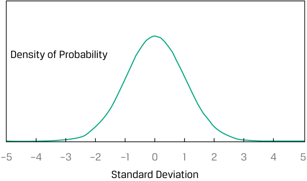
Chú thích hình ảnh: - Trục tung: Mật độ xác suất (Density of Probability) - Trục hoành: Độ lệch chuẩn (Standard Deviation) từ –5 đến 5.
Other distributions may require more information than just the mean and variance to characterize their shape.
Các phân phối khác có thể đòi hỏi nhiều thông tin hơn ngoài giá trị trung bình và phương sai để mô tả hình dạng của chúng.
Skewness
_Độ lệch (Skewness)_
A distribution that is not symmetrical is termed skewed . A return distribution with positive skew has frequent small losses and a few extreme gains. A return distribution with negative skew has frequent small gains and a few extreme losses. Panel A of Exhibit 17 illustrates a continuous positively skewed distribution, which has a long tail on its right side; Panel B illustrates a continuous negatively skewed distribution, which has a long tail on its left side.
Một phân phối không đối xứng được gọi là bị lệch (skewed). Một phân phối tỷ suất sinh lợi có độ lệch dương (positive skew) có các khoản lỗ nhỏ thường xuyên và một vài khoản lãi cực lớn. Một phân phối tỷ suất sinh lợi có độ lệch âm (negative skew) có các khoản lãi nhỏ thường xuyên và một vài khoản lỗ cực lớn. Hình A của Bảng minh họa 17 minh họa một phân phối liên tục lệch dương, có phần đuôi dài ở phía bên phải; Hình B minh họa một phân phối liên tục lệch âm, có phần đuôi dài ở phía bên trái.
Exhibit 17: Properties of Skewed Distributions
Bảng minh họa 17: Các Đặc tính của Phân phối Lệch (Properties of Skewed Distributions)
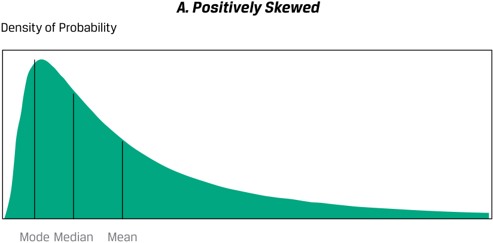
Chú thích hình ảnh (Hình A): - A. Positively Skewed: Lệch dương (Lệch phải) - Density of Probability: Mật độ xác suất - Thứ tự từ trái sang phải: Mode (Yếu vị) < Median (Trung vị) < Mean (Trung bình)
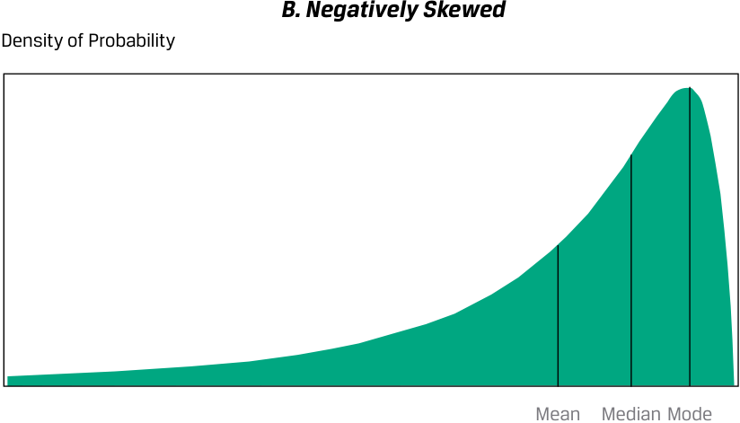
Chú thích hình ảnh (Hình B): - B. Negatively Skewed: Lệch âm (Lệch trái) - Density of Probability: Mật độ xác suất - Thứ tự từ trái sang phải: Mean (Trung bình) < Median (Trung vị) < Mode (Yếu vị)
For a continuous positively skewed unimodal distribution, the mode is less than the median, which is less than the mean. For the continuous negatively skewed unimodal distribution, the mean is less than the median, which is less than the mode. For a given expected return and standard deviation, investors should be attracted by a positive skew because the mean return lies above the median. Relative to the mean return, positive skew amounts to limited, though frequent, downside returns compared with somewhat unlimited, but less frequent, upside returns.
Đối với một phân phối liên tục một đỉnh lệch dương (positively skewed unimodal distribution), yếu vị nhỏ hơn trung vị, và trung vị nhỏ hơn giá trị trung bình ($\text{Mode} < \text{Median} < \text{Mean}$). Đối với một phân phối liên tục một đỉnh lệch âm (negatively skewed unimodal distribution), giá trị trung bình nhỏ hơn trung vị, và trung vị nhỏ hơn yếu vị ($\text{Mean} < \text{Median} < \text{Mode}$). Với một mức tỷ suất sinh lợi kỳ vọng và độ lệch chuẩn cho trước, các nhà đầu tư sẽ bị thu hút bởi độ lệch dương vì tỷ suất sinh lợi trung bình nằm cao hơn trung vị. So với tỷ suất sinh lợi trung bình, độ lệch dương đồng nghĩa với việc các mức tỷ suất sinh lợi giảm (downside returns) tuy thường xuyên nhưng bị giới hạn, so với các mức tỷ suất sinh lợi tăng (upside returns) ít thường xuyên hơn nhưng phần nào không bị giới hạn.
Skewness is the name given to a statistical measure of skew. (The word “skewness” is also sometimes used interchangeably for “skew.”) Like variance, skewness is computed using each observation’s deviation from its mean. Skewness (sometimes
Độ lệch (Skewness) là tên gọi được đặt cho thước đo thống kê về sự bất đối xứng (skew). (Từ “skewness” đôi khi cũng được sử dụng thay thế cho từ “skew”.) Giống như phương sai, độ lệch được tính bằng cách sử dụng độ lệch của mỗi quan sát so với giá trị trung bình của nó. Độ lệch (Skewness) (đôi khi
referred to as relative skewness) is computed as the average cubed deviation from the mean, standardized by dividing by the standard deviation cubed to make the measure free of scale.
được gọi là độ lệch tương đối – relative skewness) được tính bằng trung bình của các độ lệch lập phương (mũ ba) so với giá trị trung bình, được chuẩn hóa bằng cách chia cho độ lệch chuẩn mũ ba để làm cho thước đo này không phụ thuộc vào quy mô (scale-free).
Cubing, unlike squaring, preserves the sign of the deviations from the mean. If a distribution is positively skewed with a mean greater than its median, then more than half of the deviations from the mean are negative and less than half are positive. However, for the sum of the cubed deviations to be positive, the losses must be small and likely and the gains less likely but more extreme. Therefore, if skewness is positive, the average magnitude of positive deviations is larger than the average magnitude of negative deviations.
Phép nâng lên lũy thừa bậc ba, không giống như bình phương, giữ nguyên dấu của các độ lệch so với giá trị trung bình. Nếu một phân phối bị lệch dương với giá trị trung bình lớn hơn trung vị của nó, thì hơn một nửa số độ lệch so với giá trị trung bình mang dấu âm và chưa đến một nửa mang dấu dương. Tuy nhiên, để tổng các độ lệch lập phương mang dấu dương, các khoản lỗ phải nhỏ và có khả năng xảy ra cao, còn các khoản lãi ít có khả năng xảy ra hơn nhưng cực đoan hơn. Do đó, nếu độ lệch là dương, độ lớn trung bình của các độ lệch dương sẽ lớn hơn độ lớn trung bình của các độ lệch âm.
The approximation for computing sample skewness when n is large (100 or more) is:
Công thức xấp xỉ để tính độ lệch mẫu (sample skewness) khi $n$ lớn (từ 100 trở lên) là:
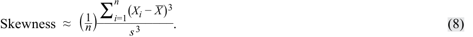
As you will learn later in the curriculum, different investment strategies may introduce different types and amounts of skewness into returns.
Như bạn sẽ học ở phần sau của chương trình, các chiến lược đầu tư khác nhau có thể tạo ra các loại và mức độ lệch khác nhau trong tỷ suất sinh lợi.
Kurtosis
_Độ nhọn (Kurtosis)_
Another way in which a return distribution might differ from a normal distribution is its relative tendency to generate large deviations from the mean. Most investors would perceive a greater chance of extremely large deviations from the mean as higher risk.
Một khía cạnh khác mà một phân phối tỷ suất sinh lợi có thể khác biệt so với phân phối chuẩn là xu hướng tương đối của nó trong việc tạo ra các độ lệch lớn so với giá trị trung bình. Hầu hết các nhà đầu tư sẽ coi khả năng xảy ra các độ lệch cực lớn so với giá trị trung bình cao hơn đồng nghĩa với rủi ro cao hơn.
Kurtosis is a measure of the combined weight of the tails of a distribution relative to the rest of the distribution—that is, the proportion of the total probability that is outside of, say, 2.5 standard deviations of the mean. A distribution that has fatter tails than the normal distribution is referred to as leptokurtic or fat-tailed ; a distribution that has thinner tails than the normal distribution is referred to as being platykurtic or thin-tailed ; and a distribution similar to the normal distribution as it concerns relative weight in the tails is called mesokurtic . A fat-tailed (thin-tailed) distribution tends to generate more frequent (less frequent) extremely large deviations from the mean than the normal distribution.
Độ nhọn (Kurtosis) là thước đo trọng lượng kết hợp của hai phần đuôi của một phân phối so với phần còn lại của phân phối đó—nghĩa là tỷ lệ của tổng xác suất nằm bên ngoài khoảng, giả sử, 2.5 độ lệch chuẩn tính từ giá trị trung bình. Một phân phối có đuôi dày hơn phân phối chuẩn được gọi là phân phối nhọn (leptokurtic) hay phân phối đuôi dày (fat-tailed); một phân phối có đuôi mỏng hơn phân phối chuẩn được gọi là phân phối bẹt (platykurtic) hay phân phối đuôi mỏng (thin-tailed); và một phân phối tương tự như phân phối chuẩn xét về trọng lượng tương đối ở hai phần đuôi được gọi là phân phối chuẩn nhọn (mesokurtic). Một phân phối đuôi dày (đuôi mỏng) có xu hướng tạo ra các độ lệch cực lớn so với giá trị trung bình thường xuyên hơn (ít thường xuyên hơn) so với phân phối chuẩn.
Exhibit 18 illustrates a distribution with fatter tails than the normal distribution. By construction, the fat-tailed and normal distributions in Exhibit 18 have the same mean, standard deviation, and skewness. Note that this fat-tailed distribution is more likely than the normal distribution to generate observations in the tail regions defined by the intersection of the distribution lines near a standard deviation of about ±2.5. This fat-tailed distribution is also more likely to generate observations that are near the mean, defined here as the region ±1 standard deviation around the mean. However, to ensure probabilities sum to 1, this distribution generates fewer observations in the regions between the central region and the two tail regions.
Bảng minh họa 18 minh họa một phân phối có đuôi dày hơn phân phối chuẩn. Theo cách xây dựng, phân phối đuôi dày và phân phối chuẩn trong Bảng minh họa 18 có cùng giá trị trung bình, độ lệch chuẩn và độ lệch (skewness). Lưu ý rằng phân phối đuôi dày này có nhiều khả năng hơn phân phối chuẩn trong việc tạo ra các quan sát ở vùng đuôi được xác định bởi giao điểm của các đường phân phối gần mức độ lệch chuẩn khoảng $\pm 2.5$. Phân phối đuôi dày này cũng có nhiều khả năng tạo ra các quan sát nằm gần giá trị trung bình hơn, được xác định ở đây là vùng $\pm 1$ độ lệch chuẩn xung quanh giá trị trung bình. Tuy nhiên, để đảm bảo tổng xác suất bằng 1, phân phối này tạo ra ít quan sát hơn ở các vùng nằm giữa vùng trung tâm và hai vùng đuôi.
Exhibit 18: Fat-Tailed Distribution Compared to the Normal Distribution
Bảng minh họa 18: Phân phối Đuôi dày So với Phân phối Chuẩn (Fat-Tailed Distribution Compared to the Normal Distribution)
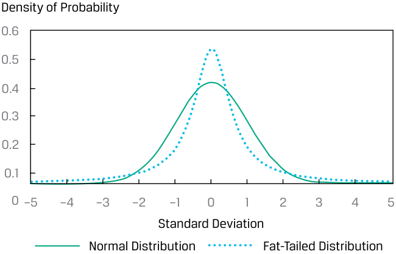
Chú thích hình ảnh: - Trục tung: Mật độ xác suất (Density of Probability) từ 0 đến 0.6. - Trục hoành: Độ lệch chuẩn (Standard Deviation) từ –5 đến 5. - Normal Distribution: Phân phối chuẩn (đường nét liền có đỉnh thấp hơn). - Fat-Tailed Distribution: Phân phối đuôi dày (đường có đỉnh nhọn cao hơn ở trung tâm và phần đuôi nằm cao hơn ở hai cực).
The calculation for kurtosis involves finding the average of deviations from the mean raised to the fourth power and then standardizing that average by dividing by the standard deviation raised to the fourth power. A normal distribution has kurtosis of 3.0, so a fat-tailed distribution has a kurtosis above 3.0 and a thin-tailed distribution has a kurtosis below 3.0.
Phép tính độ nhọn liên quan đến việc tìm trung bình của các độ lệch so với giá trị trung bình được nâng lên lũy thừa bậc bốn và sau đó chuẩn hóa mức trung bình đó bằng cách chia cho độ lệch chuẩn mũ bốn. Một phân phối chuẩn có độ nhọn bằng 3.0, vì vậy một phân phối đuôi dày có độ nhọn lớn hơn 3.0 và một phân phối đuôi mỏng có độ nhọn nhỏ hơn 3.0.
Excess kurtosis is the kurtosis relative to the normal distribution. For a large sample size ( n = 100 or more), sample excess kurtosis (KE) is approximately as follows:
Độ nhọn vượt trội (Excess kurtosis) là độ nhọn so với phân phối chuẩn. Đối với kích thước mẫu lớn ($n = 100$ trở lên), độ nhọn vượt trội mẫu (sample excess kurtosis – $K_E$) xấp xỉ như sau:
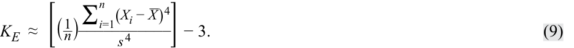
As with skewness, this measure is free of scale. Many statistical packages report estimates of sample excess kurtosis, labeling this as simply “kurtosis.”
Giống như độ lệch (skewness), thước đo này không phụ thuộc vào quy mô (free of scale). Nhiều phần mềm thống kê báo cáo các ước lượng về độ nhọn vượt trội mẫu nhưng chỉ gắn nhãn đơn giản là “độ nhọn” (“kurtosis”).
Excess kurtosis thus characterizes kurtosis relative to the normal distribution. A normal distribution has excess kurtosis equal to 0. A fat-tailed distribution has excess kurtosis greater than 0, and a thin-tailed distribution has excess kurtosis less than 0. A return distribution with positive excess kurtosis—a fat-tailed return distribution—has more frequent extremely large deviations from the mean than a normal distribution.
Do đó, độ nhọn vượt trội mô tả đặc tính độ nhọn so với phân phối chuẩn. Một phân phối chuẩn có độ nhọn vượt trội bằng 0. Một phân phối đuôi dày có độ nhọn vượt trội lớn hơn 0, và một phân phối đuôi mỏng có độ nhọn vượt trội nhỏ hơn 0. Một phân phối tỷ suất sinh lợi có độ nhọn vượt trội dương—tức phân phối tỷ suất sinh lợi đuôi dày—có các độ lệch cực lớn so với giá trị trung bình xuất hiện thường xuyên hơn so với phân phối chuẩn.
Exhibit 19: Summary of Kurtosis
Bảng minh họa 19: Tóm tắt về Độ nhọn (Summary of Kurtosis)
| If kurtosis is … | then excess kurto- sis is … |
Therefore, the distri- bution is … |
And we refer to the distribution as being … |
|---|---|---|---|
| above 3.0 | above 0 | fatter-tailed than the normal distribution. |
fat-tailed (leptokurtic) |
| equal to 3.0 | equal to 0 | similar in tails to the normal distribution. |
mesokurtic |
| less than 3.0 | less than 0 | thinner-tailed than the normal distribution. |
thin-tailed (platykurtic) |
| Nếu độ nhọn (kurtosis) là … | thì độ nhọn vượt trội (excess kurtosis) là … | Do đó, phân phối có … | Và chúng ta gọi phân phối đó là … |
|---|---|---|---|
| trên 3.0 | trên 0 | đuôi dày hơn so với phân phối chuẩn. | đuôi dày / nhọn (fat-tailed / leptokurtic) |
| bằng 3.0 | bằng 0 | hai đuôi tương tự như phân phối chuẩn. | chuẩn nhọn (mesokurtic) |
| dưới 3.0 | dưới 0 | đuôi mỏng hơn so với phân phối chuẩn. | đuôi mỏng / bẹt (thin-tailed / platykurtic) |
Most equity return series have been found to be fat-tailed. If a return distribution is fat-tailed and we use statistical models that do not account for that distribution, then we will underestimate the likelihood of very bad or very good outcomes. Example 6 revisits the EAA Equity Index from the earlier Example 1 and quantifies the shape of it return distribution.
Hầu hết các chuỗi tỷ suất sinh lợi cổ phiếu được phát hiện là có đuôi dày (fat-tailed). Nếu một phân phối tỷ suất sinh lợi có đuôi dày mà chúng ta lại sử dụng các mô hình thống kê không tính đến đặc điểm đó của phân phối, thì chúng ta sẽ đánh giá thấp khả năng xảy ra các kết quả rất xấu hoặc rất tốt. Ví dụ 6 quay trở lại với Chỉ số Cổ phiếu EAA từ Ví dụ 1 trước đó và định lượng hình dạng phân phối tỷ suất sinh lợi của nó.
EXAMPLE 6
VÍ DỤ 6
Skewness and Kurtosis of EAA Equity Index Daily Returns
Độ lệch và Độ nhọn của Tỷ suất sinh lợi Hàng ngày của Chỉ số Cổ phiếu EAA (Skewness and Kurtosis of EAA Equity Index Daily Returns)
Consider the statistics in Exhibit 20 for the EAA Equity Index:
Hãy xem xét các số liệu thống kê trong Bảng minh họa 20 đối với Chỉ số Cổ phiếu EAA:
Exhibit 20: Properties of Skewed Distributions
Bảng minh họa 20: Các Đặc tính của Phân phối Lệch (Properties of Skewed Distributions)
| Daily Return (%) | |
|---|---|
| Arithmetic mean | 0.0347 |
| Standard deviation | 0.8341 |
| Measure of Symmetry | |
| Skewness | −0.4260 |
| Excess kurtosis | 3.7962 |
| Tỷ suất sinh lợi hàng ngày (Daily Return) (%) | |
|---|---|
| Trung bình cộng (Arithmetic mean) | 0.0347 |
| Độ lệch chuẩn (Standard deviation) | 0.8341 |
| Thước đo tính đối xứng (Measure of Symmetry) | |
| Độ lệch (Skewness) | −0.4260 |
| Độ nhọn vượt trội (Excess kurtosis) | 3.7962 |
The returns reflect negative skewness, which is illustrated in Exhibit 21 by comparing the distribution of the daily returns with a normal distribution with the same mean and standard deviation.
Tỷ suất sinh lợi phản ánh độ lệch âm, được minh họa trong Bảng minh họa 21 bằng cách so sánh phân phối của tỷ suất sinh lợi hàng ngày với một phân phối chuẩn có cùng giá trị trung bình và độ lệch chuẩn.
Exhibit 21: Negative Skewness
Bảng minh họa 21: Độ lệch Âm (Negative Skewness)
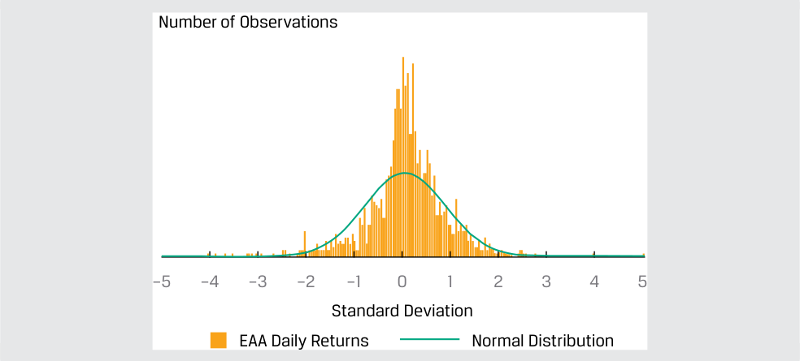
Chú thích hình ảnh: - Trục tung: Số lượng quan sát (Number of Observations) - Trục hoành: Độ lệch chuẩn (Standard Deviation) từ –5 đến 5. - EAA Daily Returns: Tỷ suất sinh lợi hàng ngày của EAA (biểu đồ cột). - Normal Distribution: Phân phối chuẩn (đường cong).
Using both the statistics and the graph, we see the following:
Sử dụng cả số liệu thống kê và đồ thị, chúng ta thấy những điều sau:
-
The distribution is negatively skewed, as indicated by the negative calculated skewness of −0.4260 and the influence of observations below the mean of 0.0347 percent.
-
The highest frequency of returns occurs within the 0.0 to 0.5 standard deviations from the mean (i.e., the mode is greater than the mean as the positive returns are offset by extreme negative deviations).
-
The distribution is fat-tailed, as indicated by the positive excess kurtosis of 3.7962. In Exhibit 21, we can see fat tails, a concentration of returns around the mean, and fewer observations in the regions between the central region and the two-tail regions.
-
Phân phối bị lệch âm, như được chỉ ra bởi độ lệch tính toán mang giá trị âm là −0.4260 và sự ảnh hưởng của các quan sát nằm dưới giá trị trung bình 0.0347 phần trăm.
-
Tần số xuất hiện cao nhất của tỷ suất sinh lợi nằm trong khoảng từ 0.0 đến 0.5 độ lệch chuẩn tính từ giá trị trung bình (tức là yếu vị lớn hơn giá trị trung bình vì các mức tỷ suất sinh lợi dương bị bù trừ bởi các độ lệch âm cực đoan).
-
Phân phối có đuôi dày (fat-tailed), như được chỉ ra bởi độ nhọn vượt trội dương là 3.7962. Trong Bảng minh họa 21, chúng ta có thể thấy hai phần đuôi dày, sự tập trung cao của tỷ suất sinh lợi xung quanh giá trị trung bình, và ít quan sát hơn ở các vùng nằm giữa vùng trung tâm và hai vùng đuôi.
To understand the trading liquidity of a stock, investors often look at the distribution of the daily trading volume for a stock. Analyzing the daily volume can provide insights about the interest in the stock, what factors may drive interest in the stock as well as whether the market can absorb a large trade in the stock. The latter may be of interest to investors interested in either establishing or exiting a large position in the particular stock.
Để hiểu về tính thanh khoản giao dịch của một cổ phiếu, các nhà đầu tư thường nhìn vào phân phối của khối lượng giao dịch hàng ngày đối với cổ phiếu đó. Việc phân tích khối lượng giao dịch hàng ngày có thể mang lại những hiểu biết sâu sắc về mức độ quan tâm đối với cổ phiếu, những yếu tố nào có thể thúc đẩy sự quan tâm đến cổ phiếu cũng như liệu thị trường có thể hấp thụ một giao dịch lớn đối với cổ phiếu đó hay không. Điều thứ hai có thể được các nhà đầu tư quan tâm khi họ muốn thiết lập hoặc thoái một vị thế lớn ở cổ phiếu cụ thể đó.
INTERPRETING SKEWNESS AND KURTOSIS
DIỄN GIẢI ĐỘ LỆCH VÀ ĐỘ NHỌN (INTERPRETING SKEWNESS AND KURTOSIS)
Consider the daily trading volume for a stock for one year, as shown in Exhibit 22. In addition to the count of observations within each bin or interval, the number of observations anticipated based on a normal distribution (given the sample arithmetic average and standard deviation) is provided as well. The average trading volume per day for the stock during the year was 8.6 million shares, and the standard deviation was 4.9 million shares.
Hãy xem xét khối lượng giao dịch hàng ngày của một cổ phiếu trong một năm, như được thể hiện trong Bảng minh họa 22. Ngoài số lượng các quan sát trong mỗi khoảng (bin hoặc interval), số lượng các quan sát dự kiến dựa trên phân phối chuẩn (với trung bình cộng và độ lệch chuẩn mẫu cho trước) cũng được cung cấp. Khối lượng giao dịch trung bình mỗi ngày của cổ phiếu trong năm là 8.6 triệu cổ phiếu, và độ lệch chuẩn là 4.9 triệu cổ phiếu.
Exhibit 22: Histogram of Daily Trading Volume for a Stock for One Year
Bảng minh họa 22: Biểu đồ tần số Khối lượng Giao dịch Hàng ngày của một Cổ phiếu trong Một Năm (Histogram of Daily Trading Volume for a Stock for One Year)
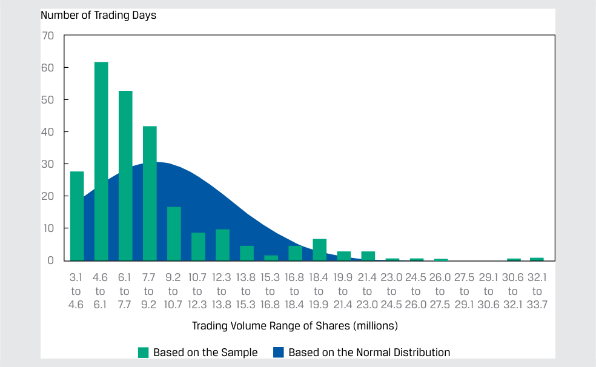
Chú thích hình ảnh: - Trục tung: Số ngày giao dịch (Number of Trading Days) từ 0 đến 70. - Trục hoành: Khoảng khối lượng giao dịch cổ phiếu (triệu cổ phiếu) (Trading Volume Range of Shares (millions)) từ 3.1 đến 33.7. - Based on the Sample: Dựa trên mẫu quan sát. - Based on the Normal Distribution: Dựa trên phân phối chuẩn.
- Would the distribution be characterized as being skewed? If so, what could account for this situation?
- Phân phối này có được mô tả là bị lệch hay không? Nếu có, điều gì có thể giải thích cho tình huống này?
Solution:
Lời giải:
The distribution appears to be skewed to the right, or positively skewed. This is likely due to: (1) no possible negative trading volume on a given trading day, so the distribution is truncated at zero; and (2) greater-than-typical trading occurring relatively infrequently, such as when there are company-specific announcements.
Phân phối có vẻ bị lệch về bên phải, hay lệch dương (positively skewed). Điều này có khả năng là do: (1) không thể có khối lượng giao dịch âm vào một ngày giao dịch nhất định, vì vậy phân phối bị chặn ở mức 0; và (2) hoạt động giao dịch lớn hơn mức thông thường diễn ra tương đối không thường xuyên, chẳng hạn như khi có các thông báo riêng của công ty.
The actual skewness for this distribution is 2.1090, which supports this interpretation.
Độ lệch thực tế của phân phối này là 2.1090, củng cố cho cách diễn giải này.
- Does the distribution display kurtosis? Explain.
- Phân phối này có thể hiện độ nhọn (kurtosis) không? Hãy giải thích.
Solution:
Lời giải:
The distribution appears to have excess kurtosis, with a right-side fat tail and with maximum shares traded in the 4.6 to 6.1 million range, exceeding what is expected if the distribution was normally distributed. There are also fewer observations than expected between the central region and the tail. The actual excess kurtosis for this distribution is 5.2151, which supports this interpretation.
Phân phối có vẻ có độ nhọn vượt trội (excess kurtosis), với phần đuôi dày ở phía bên phải và số lượng cổ phiếu giao dịch đạt mức tối đa trong khoảng từ 4.6 đến 6.1 triệu cổ phiếu, vượt quá mức kỳ vọng nếu phân phối tuân theo phân phối chuẩn. Cũng có ít quan sát hơn so với kỳ vọng ở vùng nằm giữa vùng trung tâm và phần đuôi. Độ nhọn vượt trội thực tế của phân phối này là 5.2151, củng cố cho cách diễn giải này.
QUESTION SET
BỘ CÂU HỎI (QUESTION SET)
- An analyst calculates the excess kurtosis of a stock’s returns as −0.75. From this information, the analyst should conclude that the distribution of returns is:
-
A. normally distributed.
-
B. fat-tailed compared to the normal distribution.
-
C. thin-tailed compared to the normal distribution.
-
Solution:
- Một chuyên viên phân tích tính toán độ nhọn vượt trội (excess kurtosis) của tỷ suất sinh lợi một cổ phiếu là −0.75. Từ thông tin này, chuyên viên phân tích nên kết luận rằng phân phối tỷ suất sinh lợi là:
-
A. có phân phối chuẩn (normally distributed).
-
B. có đuôi dày (fat-tailed) so với phân phối chuẩn.
-
C. có đuôi mỏng (thin-tailed) so với phân phối chuẩn.
-
Lời giải:
C is correct. The distribution is thin-tailed relative to the normal distribution because the excess kurtosis is less than zero.
C là đáp án đúng. Phân phối có đuôi mỏng so với phân phối chuẩn vì độ nhọn vượt trội nhỏ hơn 0.
Use Exhibit 23 to answer questions 2–4.
Sử dụng Bảng minh họa 23 để trả lời các câu hỏi 2–4.
An analyst examined a cross-section of annual returns for 252 stocks and calculated the following statistics:
Một chuyên viên phân tích đã kiểm tra dữ liệu chéo (cross-section) về tỷ suất sinh lợi hàng năm của 252 cổ phiếu và tính toán các số liệu thống kê sau:
Exhibit 23: Cross-Section of Annual Returns
Bảng minh họa 23: Dữ liệu Chéo về Tỷ suất sinh lợi Hàng năm (Cross-Section of Annual Returns)
| Arithmetic Average | 9.986% |
|---|---|
| Geometric Mean | 9.909% |
| Variance | 0.001723 |
| Skewness | 0.704 |
| Excess Kurtosis | 0.503 |
| Trung bình cộng (Arithmetic Average) | 9.986% |
|---|---|
| Trung bình nhân (Geometric Mean) | 9.909% |
| Phương sai (Variance) | 0.001723 |
| Độ lệch (Skewness) | 0.704 |
| Độ nhọn vượt trội (Excess Kurtosis) | 0.503 |
- The coefficient of variation (CV) is closest to:
-
A. 0.02.
-
B. 0.42.
-
C. 2.41.
- Hệ số biến thiên (CV) gần nhất với:
-
A. 0.02.
-
B. 0.42.
-
C. 2.41.
-
Lời giải:
Solution:
B là đáp án đúng. CV là tỷ số giữa độ lệch chuẩn và trung bình cộng, hay $\sqrt{0.001723} / 0.09986 = 0.416$.
B is correct. The CV is the ratio of the standard deviation to the arithmetic average, or √_ 0.001723/ 0.09986 = 0.416.
- Phân phối này được mô tả đúng nhất là:
-
A. lệch âm (negatively skewed).
-
B. không có độ lệch (having no skewness).
-
C. lệch dương (positively skewed).
-
Lời giải:
C là đáp án đúng. Độ lệch mang dấu dương (0.704), vì vậy nó bị lệch phải (lệch dương).
- This distribution is best described as:
-
A. negatively skewed.
-
B. having no skewness.
-
C. positively skewed.
-
Solution:
-
C is correct. The skewness is positive, so it is right-skewed (positively skewed).
- Compared to the normal distribution, this sample’s distribution is best described as having tails of the distribution with:
-
A. less probability than the normal distribution.
-
B. the same probability as the normal distribution.
- So với phân phối chuẩn, phân phối của mẫu này được mô tả đúng nhất là có hai phần đuôi của phân phối với:
-
A. xác suất thấp hơn so với phân phối chuẩn.
-
B. cùng mức xác suất như phân phối chuẩn.
-
C. more probability than the normal distribution.
-
Solution:
-
C. xác suất cao hơn so với phân phối chuẩn.
-
Lời giải:
C is correct. The excess kurtosis is positive, indicating that the distribution is “fat-tailed”; therefore, there is more probability in the tails of the distribution relative to the normal distribution.
C là đáp án đúng. Độ nhọn vượt trội mang dấu dương (0.503), cho biết phân phối có “đuôi dày” (“fat-tailed”); do đó, có nhiều xác suất nằm ở hai phần đuôi của phân phối hơn so với phân phối chuẩn.
CORRELATION BETWEEN TWO VARIABLES
TƯƠNG QUAN GIỮA HAI BIẾN SỐ (CORRELATION BETWEEN TWO VARIABLES)
5
5
interpret correlation between two variables to address an investment problem
diễn giải hệ số tương quan giữa hai biến số để giải quyết một bài toán đầu tư
Scatter Plot
Biểu đồ Phân tán (Scatter Plot)
A scatter plot is a useful tool for displaying and understanding potential relationships between two variables. Suppose an analyst is interested in the relative performance of two sectors, information technology (IT) and utilities, compared to the market index over a specific five-year period. The analyst has obtained the sector and market index returns for each month over the five years under investigation. Exhibit 24 presents a scatterplot of returns for the IT sector index versus the S&P 500, and Exhibit 25 presents a scatterplot of returns for the utilities sector index versus the S&P 500.
Biểu đồ phân tán (scatter plot) là một công cụ hữu ích để hiển thị và hiểu các mối quan hệ tiềm năng giữa hai biến số. Giả sử một chuyên viên phân tích quan tâm đến hiệu quả hoạt động tương đối của hai nhóm ngành, công nghệ thông tin (CNTT – IT) và tiện ích (utilities), so với chỉ số thị trường trong một giai đoạn năm năm cụ thể. Chuyên viên phân tích đã thu thập tỷ suất sinh lợi của chỉ số ngành và chỉ số thị trường cho mỗi tháng trong suốt năm năm nghiên cứu. Bảng minh họa 24 trình bày biểu đồ phân tán của tỷ suất sinh lợi chỉ số ngành CNTT so với S&P 500, và Bảng minh họa 25 trình bày biểu đồ phân tán của tỷ suất sinh lợi chỉ số ngành tiện ích so với S&P 500.
Tight (loose) clustering signals a potentially stronger (weaker) relationship between the two variables.
Sự phân cụm chặt chẽ (lỏng lẻo) báo hiệu một mối quan hệ tiềm năng mạnh hơn (yếu hơn) giữa hai biến số.
Exhibit 24: Scatter Plot of Information Technology Sector Index Return versus S&P 500 Index Return
Bảng minh họa 24: Biểu đồ Phân tán của Tỷ suất sinh lợi Chỉ số Ngành Công nghệ Thông tin so với Tỷ suất sinh lợi Chỉ số S&P 500 (Scatter Plot of Information Technology Sector Index Return versus S&P 500 Index Return)
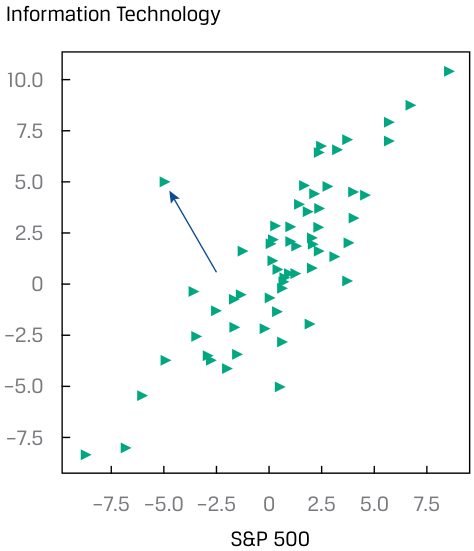
Chú thích hình ảnh: - Trục tung: Công nghệ thông tin (Information Technology) từ –7.5 đến 10.0. - Trục hoành: S&P 500 từ –7.5 đến 7.5.
Exhibit 25: Scatter Plot of Utilities Sector Index Return versus S&P 500 Index Return
Bảng minh họa 25: Biểu đồ Phân tán của Tỷ suất sinh lợi Chỉ số Ngành Tiện ích so với Tỷ suất sinh lợi Chỉ số S&P 500 (Scatter Plot of Utilities Sector Index Return versus S&P 500 Index Return)
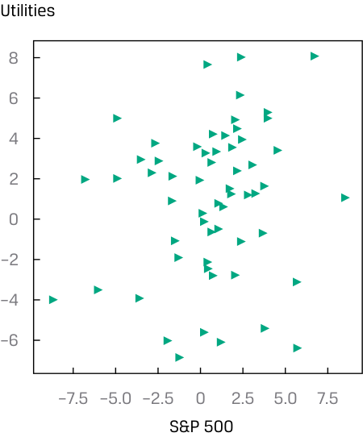
Chú thích hình ảnh: - Trục tung: Tiện ích (Utilities) từ –6 đến 8. - Trục hoành: S&P 500 từ –7.5 đến 7.5.
Despite their relatively straightforward construction, scatter plots convey valuable information. First, it is important to inspect for any potential association between the two variables. The pattern of the scatter plot may indicate no apparent relationship, a linear association, or a non-linear relationship. Furthermore, the strength of the association can be determined by how closely the data points are clustered around a line drawn across the observations.
Mặc dù có cách xây dựng tương đối đơn giản, các biểu đồ phân tán truyền tải những thông tin có giá trị. Thứ nhất, điều quan trọng là phải kiểm tra bất kỳ mối liên hệ tiềm năng nào giữa hai biến số. Hình mẫu của biểu đồ phân tán có thể cho thấy không có mối quan hệ rõ ràng nào, có một mối liên hệ tuyến tính (linear association), hoặc một mối quan hệ phi tuyến tính (non-linear relationship). Hơn nữa, độ mạnh của mối liên hệ có thể được xác định bởi mức độ tập trung sát nhau của các điểm dữ liệu xung quanh một đường thẳng được kẻ xuyên qua các quan sát.
Examining Exhibit 24 we can see the returns of the IT sector are highly positively associated with S&P 500 Index returns because the data points are tightly clustered along a positively sloped line. In contrast, Exhibit 25 tells a different story for relative performance of the utilities sector and S&P 500 index returns: The data points appear to be distributed in no discernable pattern, indicating no clear relationship among these variables.
Xem xét Bảng minh họa 24, chúng ta có thể thấy tỷ suất sinh lợi của ngành CNTT có mối liên hệ cùng chiều (dương) rất cao với tỷ suất sinh lợi của Chỉ số S&P 500 vì các điểm dữ liệu tập trung chặt chẽ dọc theo một đường thẳng có độ dốc dương. Ngược lại, Bảng minh họa 25 lại kể một câu chuyện khác về hiệu quả hoạt động tương đối của ngành tiện ích và tỷ suất sinh lợi chỉ số S&P 500: Các điểm dữ liệu dường như được phân bố không theo một quy luật rõ ràng nào, cho thấy không có mối quan hệ rõ rệt giữa các biến số này.
Second, observing the data points located toward the ends of each axis, which represent the maximum or minimum values, provides a quick sense of the data range. Third, if a relationship among the variables is apparent, inspecting the scatter plot can help to spot extreme values (i.e., outliers). For example, an outlier data point is readily detected in Exhibit 24 as indicated by the arrow. Finding these extreme values and handling them with appropriate measures is an important part of the financial modeling process.
Thứ hai, việc quan sát các điểm dữ liệu nằm về phía hai đầu của mỗi trục, đại diện cho các giá trị lớn nhất hoặc nhỏ nhất, giúp nhanh chóng nắm bắt được khoảng biến thiên của dữ liệu (data range). Thứ ba, nếu có một mối quan hệ rõ ràng giữa các biến số, việc kiểm tra biểu đồ phân tán có thể giúp phát hiện các giá trị cực đoan (tức là các giá trị ngoại lai – outliers). Ví dụ, một điểm dữ liệu ngoại lai dễ dàng được phát hiện trong Bảng minh họa 24 như được chỉ ra bởi mũi tên. Việc tìm ra các giá trị cực đoan này và xử lý chúng bằng các biện pháp thích hợp là một phần quan trọng của quy trình xây dựng mô hình tài chính.
Scatter plots are a powerful tool for finding patterns between two variables, for assessing data range, and for spotting extreme values. In some situations, however, we need to inspect for pairwise associations among many variables—for example, when conducting feature selection from dozens of variables to build a predictive model.
Biểu đồ phân tán là một công cụ mạnh mẽ để tìm kiếm các quy luật giữa hai biến số, đánh giá khoảng biến thiên của dữ liệu và phát hiện các giá trị cực đoan. Tuy nhiên, trong một số tình huống, chúng ta cần kiểm tra các mối liên hệ theo từng cặp (pairwise associations) giữa nhiều biến số—ví dụ, khi thực hiện lựa chọn đặc trưng (feature selection) từ hàng chục biến số để xây dựng một mô hình dự báo.
Now that we have some understanding of sample variance and standard deviation, we can more formally consider the concept of correlation between two random variables that we previously explored visually in the scatter plots.
Bây giờ khi chúng ta đã có một số hiểu biết về phương sai mẫu và độ lệch chuẩn mẫu, chúng ta có thể xem xét một cách chính thức hơn khái niệm tương quan (correlation) giữa hai biến ngẫu nhiên mà trước đó chúng ta đã khám phá trực quan trong các biểu đồ phân tán.
Covariance and Correlation
Hiệp phương sai và Tương quan (Covariance and Correlation)
Correlation is a measure of the linear relationship between two random variables. The first step in considering how two variables vary together, however, is constructing their covariance.
Tương quan (Correlation) là thước đo mối quan hệ tuyến tính giữa hai biến ngẫu nhiên. Tuy nhiên, bước đầu tiên trong việc xem xét hai biến số cùng biến thiên với nhau như thế nào là xây dựng hiệp phương sai (covariance) của chúng.
Definition of Sample Covariance. The sample covariance ( sXY ) is a measure of how two variables in a sample move together:
Định nghĩa Hiệp phương sai Mẫu (Definition of Sample Covariance). Hiệp phương sai mẫu (sample covariance – $s_{XY}$) là thước đo mức độ hai biến số trong một mẫu biến động cùng nhau:
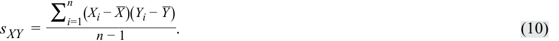
Equation 10 indicates that the sample covariance is the average value of the product of the deviations of observations on two random variables ( Xi and Yi ) from their sample means. If the random variables are returns, the units would be returns squared. Also, note the use of n − 1 in the denominator, which ensures that the sample covariance is an unbiased estimate of population covariance.
Phương trình 10 cho biết hiệp phương sai mẫu là giá trị trung bình của tích các độ lệch của các quan sát trên hai biến ngẫu nhiên ($X_i$ và $Y_i$) so với trung bình mẫu của chúng. Nếu các biến ngẫu nhiên là tỷ suất sinh lợi, đơn vị tính sẽ là tỷ suất sinh lợi bình phương. Ngoài ra, hãy lưu ý việc sử dụng $n - 1$ ở mẫu số, nhằm đảm bảo rằng hiệp phương sai mẫu là một ước lượng không chệch (unbiased estimate) của hiệp phương sai tổng thể.
Stated simply, covariance is a measure of the joint variability of two random variables. If the random variables vary in the same direction—for example, X tends to be above its mean when Y is above its mean, and X tends to be below its mean when Y is below its mean—then their covariance is positive. If the variables vary in the opposite direction relative to their respective means, then their covariance is negative.
Nói một cách đơn giản, hiệp phương sai là thước đo sự biến thiên đồng thời (joint variability) của hai biến ngẫu nhiên. Nếu các biến ngẫu nhiên biến thiên cùng chiều—ví dụ, $X$ có xu hướng nằm trên giá trị trung bình của nó khi $Y$ nằm trên giá trị trung bình của nó, và $X$ có xu hướng nằm dưới giá trị trung bình của nó khi $Y$ nằm dưới giá trị trung bình của nó—thì hiệp phương sai của chúng mang dấu dương. Nếu các biến số biến thiên ngược chiều nhau so với giá trị trung bình tương ứng của chúng, thì hiệp phương sai của chúng mang dấu âm.
The size of the covariance measure alone is difficult to interpret as it involves squared units of measure and so depends on the magnitude of the variables. This brings us to the normalized version of covariance, which is the correlation coefficient.
Bản thân độ lớn của thước đo hiệp phương sai rất khó diễn giải vì nó liên quan đến các đơn vị đo lường bình phương và do đó phụ thuộc vào độ lớn của các biến số. Điều này đưa chúng ta đến phiên bản chuẩn hóa của hiệp phương sai, đó là hệ số tương quan (correlation coefficient).
Definition of Sample Correlation Coefficient . The sample correlation coefficient is a standardized measure of how two variables in a sample move together. The sample correlation coefficient ( rXY ) is the ratio of the sample covariance to the product of the two variables’ standard deviations:
Định nghĩa Hệ số Tương quan Mẫu (Definition of Sample Correlation Coefficient). Hệ số tương quan mẫu (sample correlation coefficient) là một thước đo đã được chuẩn hóa về việc hai biến số trong một mẫu biến động cùng nhau như thế nào. Hệ số tương quan mẫu ($r_{XY}$) là tỷ số giữa hiệp phương sai mẫu với tích độ lệch chuẩn của hai biến số đó:
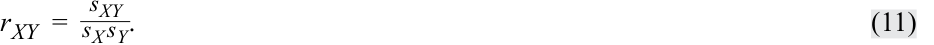
Importantly, the correlation coefficient expresses the strength of the linear relationship between the two random variables.
Điều quan trọng là hệ số tương quan biểu thị độ mạnh của mối quan hệ tuyến tính giữa hai biến ngẫu nhiên.
Properties of Correlation
Các Đặc tính của Hệ số Tương quan (Properties of Correlation)
We now discuss the correlation coefficient, or simply correlation, and its properties in more detail:
Bây giờ chúng ta thảo luận chi tiết hơn về hệ số tương quan, hay gọi đơn giản là tương quan, và các đặc tính của nó:
1. Correlation ranges from −1 and +1 for two random variables, X and Y :
1. Hệ số tương quan nằm trong khoảng từ −1 đến +1 đối với hai biến ngẫu nhiên $X$ và $Y$:
- −1 ≤ rXY ≤ +1.
- $-1 \le r_{XY} \le +1$.
2. A correlation of 0, termed uncorrelated, indicates an absence of any linear relationship between the variables.
2. Hệ số tương quan bằng 0, được gọi là không tương quan (uncorrelated), cho biết sự vắng mặt của bất kỳ mối quan hệ tuyến tính nào giữa các biến số.
3. A positive correlation close to +1 indicates a strong positive linear relationship. A correlation of 1 indicates a perfect linear relationship.
3. Hệ số tương quan dương gần với +1 cho biết một mối quan hệ tuyến tính cùng chiều (dương) mạnh. Hệ số tương quan bằng 1 cho biết một mối quan hệ tuyến tính dương hoàn hảo.
4. A negative correlation close to −1 indicates a strong negative (i.e., inverse) linear relationship. A correlation of −1 indicates a perfect inverse linear relationship.
4. Hệ số tương quan âm gần với −1 cho biết một mối quan hệ tuyến tính ngược chiều (âm) mạnh. Hệ số tương quan bằng −1 cho biết một mối quan hệ tuyến tính nghịch đảo hoàn hảo.
We return to scatter plots to illustrate correlation visually. In contrast to the correlation coefficient, which expresses the relationship between two data series using a single number, a scatter plot depicts the relationship graphically. Therefore, scatter plots are a very useful tool for the sensible interpretation of a correlation coefficient.
Chúng ta quay trở lại với các biểu đồ phân tán để minh họa trực quan về hệ số tương quan. Trái ngược với hệ số tương quan vốn biểu thị mối quan hệ giữa hai chuỗi dữ liệu bằng một con số duy nhất, biểu đồ phân tán mô tả mối quan hệ đó bằng đồ thị. Do đó, biểu đồ phân tán là một công cụ rất hữu ích để diễn giải hợp lý hệ số tương quan.
Exhibit 26 shows examples of scatter plots. Panel A shows the scatter plot of two variables with a correlation of +1. Note that all the points on the scatter plot in Panel A lie on a straight line with a positive slope. Whenever variable X increases by one unit, variable Y increases by two units. Because all of the points in the graph lie on a straight line, an increase of one unit in X is associated with an exact two-unit
Bảng minh họa 26 cho thấy các ví dụ về biểu đồ phân tán. Hình A hiển thị biểu đồ phân tán của hai biến số có hệ số tương quan là +1. Lưu ý rằng tất cả các điểm trên biểu đồ phân tán trong Hình A đều nằm trên một đường thẳng có độ dốc dương. Bất cứ khi nào biến $X$ tăng thêm một đơn vị, biến $Y$ sẽ tăng thêm hai đơn vị. Bởi vì tất cả các điểm trên đồ thị đều nằm trên một đường thẳng, nên sự gia tăng một đơn vị của $X$ luôn gắn liền với sự gia tăng chính xác hai đơn vị
increase in Y , regardless of the level of X . Even if the slope of the line were different (but positive), the correlation between the two variables would still be +1 as long as all the points lie on that straight line. Panel B shows a scatter plot for two variables with a correlation coefficient of −1. Once again, the plotted observations all fall on a straight line. In this graph, however, the line has a negative slope. As X increases by one unit, Y decreases by two units, regardless of the initial value of X .
của $Y$, bất kể mức giá trị của $X$ là bao nhiêu. Ngay cả khi độ dốc của đường thẳng khác đi (nhưng vẫn dương), hệ số tương quan giữa hai biến số vẫn sẽ là +1 miễn là tất cả các điểm đều nằm trên đường thẳng đó. Hình B hiển thị biểu đồ phân tán cho hai biến số có hệ số tương quan là −1. Một lần nữa, các quan sát được vẽ trên đồ thị đều nằm trên một đường thẳng. Tuy nhiên, trong đồ thị này, đường thẳng có độ dốc âm. Khi $X$ tăng thêm một đơn vị, $Y$ giảm đi hai đơn vị, bất kể giá trị ban đầu của $X$ là bao nhiêu.
Exhibit 26: Scatter Plots Showing Various Degrees of Correlation
Bảng minh họa 26: Các Biểu đồ Phân tán Thể hiện Các Mức độ Tương quan Khác nhau (Scatter Plots Showing Various Degrees of Correlation)
A. Variables With a Correlation of +1
_A. Các biến số có hệ số tương quan bằng +1 (Variables With a Correlation of +1)_
B. Variables With a Correlation of –1
_B. Các biến số có hệ số tương quan bằng –1 (Variables With a Correlation of –1)_
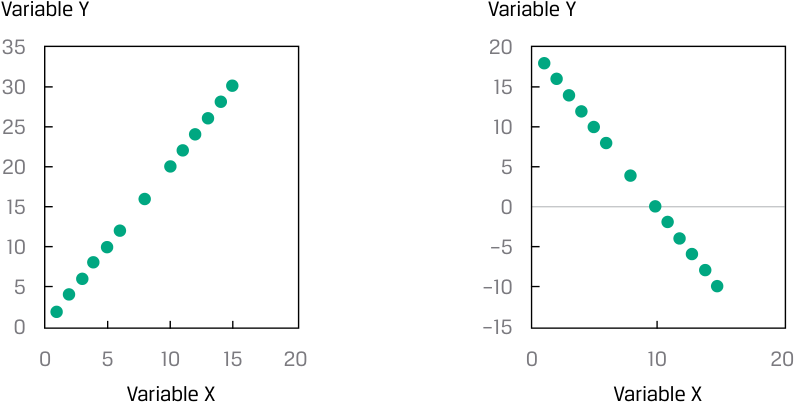
Chú thích hình ảnh (Hình A và Hình B): - Trục tung: Biến Y (Variable Y) - Trục hoành: Biến X (Variable X) - Hình A: Đường thẳng dốc lên hoàn hảo ($r = +1$). - Hình B: Đường thẳng dốc xuống hoàn hảo ($r = -1$).
C. Variables With a Correlation of 0
D. Variables With a Strong Nonlinear Association
_C. Các biến số có hệ số tương quan bằng 0 (Variables With a Correlation of 0)_
Variable Y
_D. Các biến số có mối liên hệ phi tuyến tính mạnh (Variables With a Strong Nonlinear Association)_
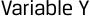
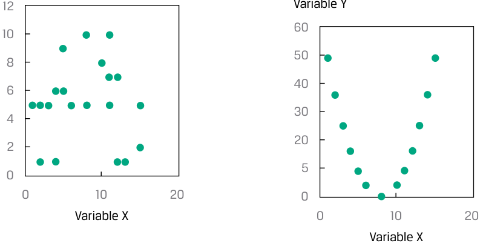
Chú thích hình ảnh (Hình C và Hình D): - Hình C: Các điểm phân bố ngẫu nhiên không có quan hệ tuyến tính ($r = 0$). - Hình D: Các điểm nằm dọc theo đường cong parabol úp ngược (mối liên hệ phi tuyến tính mạnh nhưng tương quan tuyến tính gần bằng 0).
Panel C shows a scatter plot of two variables with a correlation of 0; they have no linear relation. This graph shows that the value of variable X tells us nothing about the value of variable Y . Panel D shows a scatter plot of two variables that have a non-linear relationship. Because the correlation coefficient is a measure of the linear association between two variables, it would not be appropriate to use the correlation coefficient in this case.
Hình C hiển thị biểu đồ phân tán của hai biến số có hệ số tương quan bằng 0; chúng không có mối quan hệ tuyến tính nào. Đồ thị này cho thấy giá trị của biến $X$ không cho chúng ta biết bất kỳ điều gì về giá trị của biến $Y$. Hình D hiển thị biểu đồ phân tán của hai biến số có mối quan hệ phi tuyến tính (non-linear relationship). Bởi vì hệ số tương quan là thước đo mối liên hệ tuyến tính giữa hai biến số, nên việc sử dụng hệ số tương quan trong trường hợp này là không phù hợp.
Limitations of Correlation Analysis
Những Hạn chế của Phân tích Tương quan (Limitations of Correlation Analysis)
Exhibit 26 illustrates that correlation measures the linear association between two variables, but it may not always be reliable. Two variables can have a strong nonlinear relation and still have a very low correlation. A nonlinear relation between variables X and Y is shown in Panel D. Even though these two variables are perfectly associated, there is no linear association between them and hence no meaningful correlation.
Bảng minh họa 26 minh họa rằng tương quan đo lường mối liên hệ tuyến tính giữa hai biến số, nhưng không phải lúc nào nó cũng đáng tin cậy. Hai biến số có thể có một mối quan hệ phi tuyến tính mạnh nhưng vẫn có hệ số tương quan rất thấp. Mối quan hệ phi tuyến tính giữa hai biến $X$ và $Y$ được thể hiện trong Hình D. Mặc dù hai biến số này có mối liên hệ hoàn hảo với nhau, nhưng không có mối liên hệ tuyến tính nào giữa chúng và do đó không có hệ số tương quan có ý nghĩa.
Correlation may also be an unreliable measure when outliers are present in one or both variables. As we have seen, outliers are small numbers of observations at either extreme (small or large) of a sample. Correlation may be quite sensitive to outliers. In such a situation, we should consider whether it makes sense to exclude those outlier observations and whether they are noise or true information. We use judgment to determine whether those outliers contain information about the two variables’ relationship, and should be included in the correlation analysis, or contain no information, and should be excluded. If they are to be excluded from the correlation analysis, as we have seen previously, outlier observations can be handled by trimming or winsorizing the dataset.
Tương quan cũng có thể là một thước đo không đáng tin cậy khi có sự hiện diện của các giá trị ngoại lai (outliers) ở một hoặc cả hai biến số. Như chúng ta đã thấy, các giá trị ngoại lai là một số ít các quan sát nằm ở một trong hai thái cực (nhỏ hoặc lớn) của một mẫu. Hệ số tương quan có thể khá nhạy cảm với các giá trị ngoại lai. Trong tình huống như vậy, chúng ta nên cân nhắc xem liệu có hợp lý khi loại trừ các quan sát ngoại lai đó hay không và liệu chúng là nhiễu (noise) hay là thông tin thực sự. Chúng ta sử dụng sự phán đoán chuyên môn để xác định xem liệu các giá trị ngoại lai đó có chứa thông tin về mối quan hệ của hai biến số và nên được đưa vào phân tích tương quan, hay không chứa thông tin và nên bị loại trừ. Nếu chúng cần bị loại trừ khỏi phân tích tương quan, như chúng ta đã thấy trước đây, các quan sát ngoại lai có thể được xử lý bằng cách cắt bỏ (trimming) hoặc chuẩn hóa Winsor (winsorizing) tập dữ liệu.
Importantly, keep in mind that correlation does not imply causation. Even if two variables are highly correlated, one does not necessarily cause the other in the sense that certain values of one variable bring about the occurrence of certain values of the other.
Điều quan trọng cần ghi nhớ là tương quan không hàm ý quan hệ nhân quả (correlation does not imply causation). Ngay cả khi hai biến số có tương quan cao với nhau, biến này không nhất thiết gây ra biến kia theo nghĩa là những giá trị nhất định của một biến số dẫn đến sự xuất hiện của những giá trị nhất định của biến số kia.
Moreover, with visualizations too, including scatter plots, we must be on guard against unconsciously making judgments about causal relationships that may or may not be supported by the data.
Hơn nữa, ngay cả với các công cụ trực quan hóa dữ liệu, bao gồm cả biểu đồ phân tán, chúng ta cũng phải cảnh giác để không vô thức đưa ra những phán đoán về mối quan hệ nhân quả vốn có thể được hoặc không được dữ liệu chứng minh.
The term spurious correlation has been used to refer to:
Thuật ngữ tương quan giả mạo (spurious correlation) được sử dụng để chỉ:
-
correlation between two variables that reflects chance relationships in a particular dataset;
-
correlation induced by a calculation that mixes each of two variables with a third variable; and
-
correlation between two variables arising not from a direct relation between them but from their relation to a third variable.
-
tương quan giữa hai biến số phản ánh các mối quan hệ ngẫu nhiên tình cờ (chance relationships) trong một tập dữ liệu cụ thể;
-
tương quan được tạo ra bởi một phép tính trộn lẫn mỗi biến trong hai biến số với một biến số thứ ba; và
-
tương quan giữa hai biến số phát sinh không phải từ mối quan hệ trực tiếp giữa chúng mà từ mối quan hệ của chúng với một biến số thứ ba.
As an example of the chance relationship, consider the monthly US retail sales of beer, wine, and liquor and the atmospheric carbon dioxide levels from 2000 to 2018. The correlation is 0.824, indicating that a positive relation exists between the two. However, there is no reason to suspect that the levels of atmospheric carbon dioxide are related to the retail sales of beer, wine, and liquor.
Như một ví dụ về mối quan hệ ngẫu nhiên tình cờ, hãy xem xét doanh số bán lẻ bia, rượu vang và rượu mạnh hàng tháng tại Hoa Kỳ và nồng độ khí carbon dioxide trong khí quyển từ năm 2000 đến năm 2018. Hệ số tương quan là 0.824, cho thấy có một mối quan hệ cùng chiều giữa hai biến này. Tuy nhiên, không có lý do gì để nghi ngờ rằng nồng độ carbon dioxide trong khí quyển lại có liên quan đến doanh số bán lẻ bia, rượu vang và rượu mạnh.
As an example of the second type of spurious correlation, two variables that are uncorrelated may be correlated if divided by a third variable. For example, consider a cross-sectional sample of companies’ dividends and total assets. While there may be a low correlation between these two variables, dividing each by market capitalization may increase the correlation.
Như một ví dụ về loại tương quan giả mạo thứ hai, hai biến số không tương quan với nhau có thể trở nên có tương quan nếu cả hai cùng được chia cho một biến số thứ ba. Ví dụ, hãy xem xét một mẫu dữ liệu chéo về cổ tức và tổng tài sản của các công ty. Mặc dù có thể có tương quan thấp giữa hai biến số này, nhưng việc chia mỗi biến cho giá trị vốn hóa thị trường có thể làm tăng hệ số tương quan.
As an example of the third type of spurious correlation, height may be positively correlated with the extent of a person’s vocabulary, but the underlying relationships are between age and height and between age and vocabulary.
Như một ví dụ về loại tương quan giả mạo thứ ba, chiều cao có thể có tương quan dương với vốn từ vựng của một người, nhưng các mối quan hệ cơ bản thực sự nằm ở mối quan hệ giữa tuổi tác và chiều cao cũng như giữa tuổi tác và vốn từ vựng.
Investment professionals must be cautious in basing investment strategies on high correlations. Spurious correlations may suggest investment strategies that appear profitable but would not be, if implemented.
Các chuyên gia đầu tư phải thận trọng khi xây dựng các chiến lược đầu tư dựa trên các hệ số tương quan cao. Các tương quan giả mạo có thể gợi ý những chiến lược đầu tư có vẻ sinh lời nhưng thực tế sẽ không hiệu quả nếu được triển khai.
A further issue is that correlation does not tell the whole story about the data. Consider Anscombe’s Quartet, discussed in Example 7, for which dissimilar graphs can be developed with variables that have the same mean, same standard deviation, and same correlation.
Một vấn đề nữa là hệ số tương quan không kể hết toàn bộ câu chuyện về dữ liệu. Hãy xem xét Bộ tứ Anscombe (Anscombe’s Quartet), được thảo luận trong Ví dụ 7, trong đó các đồ thị hoàn toàn khác nhau có thể được tạo ra từ các biến số có cùng giá trị trung bình, cùng độ lệch chuẩn và cùng hệ số tương quan.
EXAMPLE 7
VÍ DỤ 7
Anscombe’s Quartet
Bộ tứ Anscombe (Anscombe’s Quartet)
Francis Anscombe, a British statistician, developed datasets that illustrate why just looking at summary statistics (i.e., mean, standard deviation, and correlation) does not fully describe the data. He created four datasets (designated I, II, III, and IV), each with two variables, X and Y , such that:
Francis Anscombe, một nhà thống kê học người Anh, đã phát triển các tập dữ liệu minh họa lý do tại sao việc chỉ nhìn vào các thống kê tóm tắt (tức là giá trị trung bình, độ lệch chuẩn và hệ số tương quan) lại không mô tả đầy đủ được dữ liệu. Ông đã tạo ra bốn tập dữ liệu (được ký hiệu là I, II, III và IV), mỗi tập dữ liệu gồm hai biến $X$ và $Y$, sao cho:
-
The X s in each dataset have the same mean and standard deviation, 9.00 and 3.32, respectively.
-
The Ys in each dataset have the same mean and standard deviation, 7.50 and 2.03, respectively.
-
The Xs and Ys in each dataset have the same correlation of 0.82.
-
Các giá trị $X$ trong mỗi tập dữ liệu có cùng giá trị trung bình và độ lệch chuẩn, lần lượt là 9.00 và 3.32.
-
Các giá trị $Y$ trong mỗi tập dữ liệu có cùng giá trị trung bình và độ lệch chuẩn, lần lượt là 7.50 và 2.03.
-
Các giá trị $X$ và $Y$ trong mỗi tập dữ liệu có cùng hệ số tương quan là 0.82.
Exhibit 27: Summary Statistics
Bảng minh họa 27: Các Thống kê Tóm tắt (Summary Statistics)
| I | I | I | I | II | I | V | ||
|---|---|---|---|---|---|---|---|---|
| Observation | X | Y | X | Y | X | Y | X | Y |
| 1 | 10 | 8.04 | 10 | 9.14 | 10 | 7.46 | 8 | 6.6 |
| 2 | 8 | 6.95 | 8 | 8.14 | 8 | 6.77 | 8 | 5.8 |
| 3 | 13 | 7.58 | 13 | 8.74 | 13 | 12.74 | 8 | 7.7 |
| 4 | 9 | 8.81 | 9 | 8.77 | 9 | 7.11 | 8 | 8.8 |
| 5 | 11 | 8.33 | 11 | 9.26 | 11 | 7.81 | 8 | 8.5 |
| 6 | 14 | 9.96 | 14 | 8.1 | 14 | 8.84 | 8 | 7 |
| 7 | 6 | 7.24 | 6 | 6.13 | 6 | 6.08 | 8 | 5.3 |
| 8 | 4 | 4.26 | 4 | 3.1 | 4 | 5.39 | 19 | 13 |
| 9 | 12 | 10.8 | 12 | 9.13 | 12 | 8.15 | 8 | 5.6 |
| 10 | 7 | 4.82 | 7 | 7.26 | 7 | 6.42 | 8 | 7.9 |
| 11 | 5 | 5.68 | 5 | 4.74 | 5 | 5.73 | 8 | 6.9 |
| N | 11 | 11 | 11 | 11 | 11 | 11 | 11 | 11 |
| Mean | 9.00 | 7.50 | 9.00 | 7.50 | 9.00 | 7.50 | 9.00 | 7.50 |
| Standard deviation |
3.32 | 2.03 | 3.32 | 2.03 | 3.32 | 2.03 | 3.32 | 2.03 |
| Correlation | 0. | 82 | 0.8 | 2 | 0. | 82 | 0. | 82 |
| I | II | III | IV | |||||
|---|---|---|---|---|---|---|---|---|
| Quan sát (Observation) | $X$ | $Y$ | $X$ | $Y$ | $X$ | $Y$ | $X$ | $Y$ |
| 1 | 10 | 8.04 | 10 | 9.14 | 10 | 7.46 | 8 | 6.6 |
| 2 | 8 | 6.95 | 8 | 8.14 | 8 | 6.77 | 8 | 5.8 |
| 3 | 13 | 7.58 | 13 | 8.74 | 13 | 12.74 | 8 | 7.7 |
| 4 | 9 | 8.81 | 9 | 8.77 | 9 | 7.11 | 8 | 8.8 |
| 5 | 11 | 8.33 | 11 | 9.26 | 11 | 7.81 | 8 | 8.5 |
| 6 | 14 | 9.96 | 14 | 8.1 | 14 | 8.84 | 8 | 7 |
| 7 | 6 | 7.24 | 6 | 6.13 | 6 | 6.08 | 8 | 5.3 |
| 8 | 4 | 4.26 | 4 | 3.1 | 4 | 5.39 | 19 | 13 |
| 9 | 12 | 10.8 | 12 | 9.13 | 12 | 8.15 | 8 | 5.6 |
| 10 | 7 | 4.82 | 7 | 7.26 | 7 | 6.42 | 8 | 7.9 |
| 11 | 5 | 5.68 | 5 | 4.74 | 5 | 5.73 | 8 | 6.9 |
| $N$ | 11 | 11 | 11 | 11 | 11 | 11 | 11 | 11 |
| Trung bình (Mean) | 9.00 | 7.50 | 9.00 | 7.50 | 9.00 | 7.50 | 9.00 | 7.50 |
| Độ lệch chuẩn (Standard deviation) | 3.32 | 2.03 | 3.32 | 2.03 | 3.32 | 2.03 | 3.32 | 2.03 |
| Hệ số tương quan (Correlation) | 0.82 | 0.82 | 0.82 | 0.82 |
While the X variable has the same values for I, II, and III in the quartet of datasets, the Y variables are quite different, creating different relationships. The four datasets are:
Mặc dù biến $X$ có cùng các giá trị cho các tập I, II và III trong bộ tứ tập dữ liệu, nhưng các biến $Y$ lại khá khác nhau, tạo ra những mối quan hệ khác nhau. Bốn tập dữ liệu đó là:
I An approximate linear relationship between X and Y .
I Một mối quan hệ xấp xỉ tuyến tính giữa $X$ và $Y$.
II A curvilinear relationship between X and Y .
II Một mối quan hệ cong (phi tuyến tính) giữa $X$ và $Y$.
III A linear relationship except for one outlier.
III Một mối quan hệ tuyến tính ngoại trừ một giá trị ngoại lai.
IV A constant X with the exception of one outlier.
IV Giá trị $X$ không đổi ngoại trừ một giá trị ngoại lai.
Depicting the quartet visually,
Mô tả trực quan bộ tứ dữ liệu này:
Exhibit 28: Visual Depiction
Bảng minh họa 28: Mô tả Trực quan (Visual Depiction)
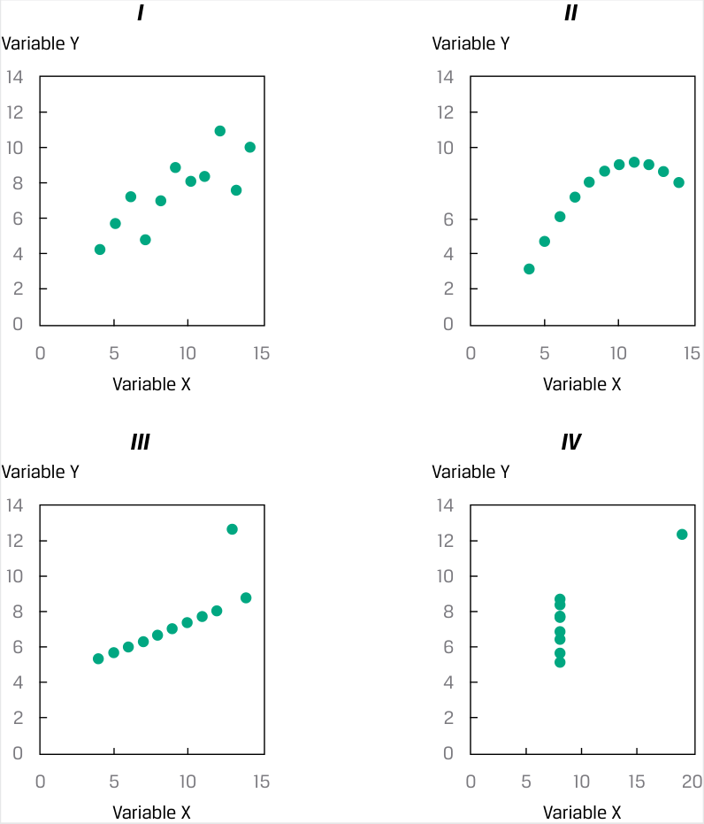
Chú thích hình ảnh: - Bốn biểu đồ phân tán I, II, III, IV với trục tung là Variable Y (Biến Y) và trục hoành là Variable X (Biến X).
The bottom line? Knowing the means and standard deviations of the two variables, as well as the correlation between them, does not tell the entire story.
Điểm mấu chốt là gì? Việc biết được giá trị trung bình và độ lệch chuẩn của hai biến số, cũng như hệ số tương quan giữa chúng, vẫn chưa kể hết toàn bộ câu chuyện về dữ liệu.
Source: Francis John Anscombe, “Graphs in Statistical Analysis,” American Statistician 27 (February 1973): 17–21.
Nguồn: Francis John Anscombe, “Graphs in Statistical Analysis,” American Statistician 27 (Tháng 2/1973): 17–21.
QUESTION SET
BỘ CÂU HỎI (QUESTION SET)
- A correlation of 0.34 between two variables, X and Y , is best described as:
-
A. changes in X causing changes in Y .
-
B. a positive association between X and Y .
-
C. a curvilinear relationship between X and Y .
-
Solution:
-
B is correct. The correlation coefficient is positive, indicating that the two series move together.
- Which of the following is a potential problem with interpreting a correlation coefficient?
-
A. Outliers
-
B. Spurious correlation
- Hệ số tương quan bằng 0.34 giữa hai biến số $X$ và $Y$ được mô tả đúng nhất là:
-
A. những thay đổi trong $X$ gây ra những thay đổi trong $Y$.
-
B. một mối liên hệ cùng chiều (dương) giữa $X$ và $Y$.
-
C. một mối quan hệ cong giữa $X$ và $Y$.
-
Lời giải:
B là đáp án đúng. Hệ số tương quan mang dấu dương, cho biết hai chuỗi dữ liệu biến động cùng chiều với nhau.
- Điều nào sau đây là một vấn đề tiềm ẩn khi diễn giải hệ số tương quan?
-
A. Các giá trị ngoại lai (Outliers)
-
B. Tương quan giả mạo (Spurious correlation)
-
C. Both outliers and spurious correlation
-
Solution:
-
C. Cả các giá trị ngoại lai và tương quan giả mạo
-
Lời giải:
C is correct. Both outliers and spurious correlation are potential problems with interpreting correlation coefficients.
C là đáp án đúng. Cả các giá trị ngoại lai và tương quan giả mạo đều là những vấn đề tiềm ẩn khi diễn giải các hệ số tương quan.
Use the information in Exhibit 29 to answer questions 3 and 4.
Sử dụng thông tin trong Bảng minh họa 29 để trả lời câu hỏi 3 và 4.
An analyst is evaluating the tendency of returns on the portfolio of stocks she manages to move along with bond and real estate indexes. She gathered monthly data on returns and the indexes:
Một chuyên viên phân tích đang đánh giá xu hướng tỷ suất sinh lợi của danh mục cổ phiếu do cô quản lý biến động cùng với các chỉ số trái phiếu và bất động sản. Cô đã thu thập dữ liệu hàng tháng về tỷ suất sinh lợi và các chỉ số:
Exhibit 29: Monthly Data on Returns and Indexes
Bảng minh họa 29: Dữ liệu Hàng tháng về Tỷ suất sinh lợi và Chỉ số (Monthly Data on Returns and Indexes)
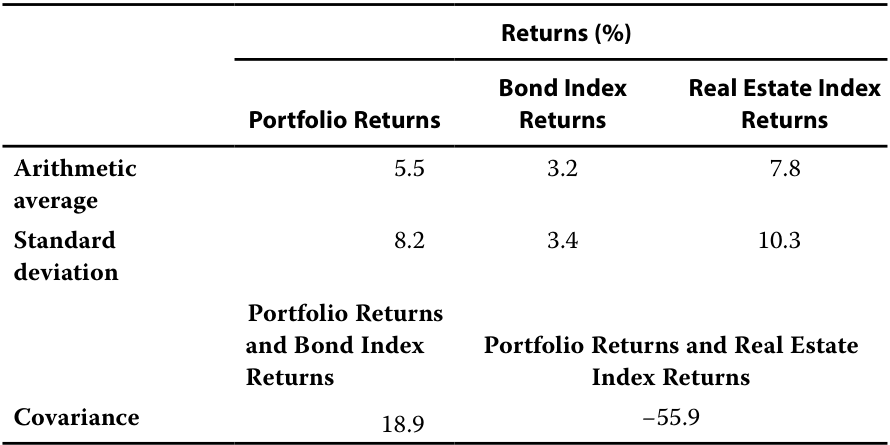
- Without calculating the correlation coefficient, the correlation of the portfolio returns and the bond index returns is most likely to be:
-
A. negative.
-
B. zero.
-
C. positive.
-
Solution:
| Tỷ suất sinh lợi (Returns) (%) | Tỷ suất sinh lợi Danh mục (Portfolio Returns) | Tỷ suất sinh lợi Chỉ số Trái phiếu (Bond Index Returns) | Tỷ suất sinh lợi Chỉ số Bất động sản (Real Estate Index Returns) |
|---|---|---|---|
| Trung bình cộng (Arithmetic average) | 5.5 | 3.2 | 7.8 |
| Độ lệch chuẩn (Standard deviation) | 8.2 | 3.4 | 10.3 |
C is correct. The correlation coefficient is positive because the covariance is positive.
| Tỷ suất sinh lợi Danh mục và Tỷ suất sinh lợi Chỉ số Trái phiếu | Tỷ suất sinh lợi Danh mục và Tỷ suất sinh lợi Chỉ số Bất động sản | |
|---|---|---|
| Hiệp phương sai (Covariance) | 18.9 | −55.9 |
- Without calculating the correlation coefficient, the correlation of the portfolio returns and the real estate index returns is:
-
A. negative.
-
B. zero.
-
C. positive.
-
Solution:
- Không cần tính hệ số tương quan, tương quan giữa tỷ suất sinh lợi danh mục đầu tư và tỷ suất sinh lợi chỉ số trái phiếu có khả năng cao nhất là:
-
A. âm (negative).
-
B. bằng không (zero).
-
C. dương (positive).
-
Lời giải:
C là đáp án đúng. Hệ số tương quan mang dấu dương vì hiệp phương sai mang dấu dương (18.9).
A is correct. The correlation coefficient is negative because the covariance is negative.
- Không cần tính hệ số tương quan, tương quan giữa tỷ suất sinh lợi danh mục đầu tư và tỷ suất sinh lợi chỉ số bất động sản là:
-
A. âm (negative).
-
B. bằng không (zero).
-
C. dương (positive).
-
Lời giải:
- Consider two variables, A and B . If variable A has a mean of −0.56, variable B has a mean of 0.23, and the covariance between the two variables is positive, the correlation between these two variables is:
- A. negative.
A là đáp án đúng. Hệ số tương quan mang dấu âm vì hiệp phương sai mang dấu âm (−55.9).
B. zero.
- Hãy xem xét hai biến số $A$ và $B$. Nếu biến $A$ có giá trị trung bình là −0.56, biến $B$ có giá trị trung bình là 0.23, và hiệp phương sai giữa hai biến số mang dấu dương, thì hệ số tương quan giữa hai biến số này là:
-
A. âm (negative).
-
B. bằng không (zero).
C. positive. Solution: C is correct. The correlation coefficient must be positive because the covariance is positive. The fact that one or both variables have a negative mean does not affect the sign of the correlation coefficient.
-
C. dương (positive).
-
Lời giải:
C là đáp án đúng. Hệ số tương quan bắt buộc phải mang dấu dương vì hiệp phương sai mang dấu dương. Việc một hoặc cả hai biến số có giá trị trung bình âm không làm ảnh hưởng đến dấu của hệ số tương quan.
Volume 1: Quantitative Methods
Learning Module 3 Statistical Measures of Asset Returns
Part 4/4: Practice Problems (PDF Pages 134–138)
Tập 1: Phương pháp Định lượng (Quantitative Methods)
Học phần 3: Các thước đo Thống kê về Tỷ suất sinh lợi Tài sản (Statistical Measures of Asset Returns)
Phần 4/4: Bài tập Thực hành (Practice Problems) (Trang PDF 134–138)
~~PRACTICE PROBLEMS~~
BÀI TẬP THỰC HÀNH (PRACTICE PROBLEMS)
The following information relates to questions 1-5
Thông tin sau đây liên quan đến các câu hỏi 1-5
Consider the results of an analysis focusing on the market capitalizations of a sample of 100 firms:
Hãy xem xét kết quả của một phân tích tập trung vào giá trị vốn hóa thị trường (market capitalizations) của một mẫu gồm 100 công ty:
Exhibit 1: Market Capitalization of a Sample of 100 Firms
Bảng minh họa 1: Giá trị Vốn hóa Thị trường của một Mẫu gồm 100 Công ty (Market Capitalization of a Sample of 100 Firms)
| Cumulative Percentage | Market Capita billio |
lization (euro ns) |
Number of | |
|---|---|---|---|---|
| Bin | of Sample (%) | Lower Bound | Upper Bound | Observations |
| 1 | 5 | 0.28 | 15.45 | 5 |
| 2 | 10 | 15.45 | 21.22 | 5 |
| 3 | 15 | 21.22 | 29.37 | 5 |
| 4 | 20 | 29.37 | 32.57 | 5 |
| 5 | 25 | 32.57 | 34.72 | 5 |
| 6 | 30 | 34.72 | 37.58 | 5 |
| 7 | 35 | 37.58 | 39.90 | 5 |
| 8 | 40 | 39.90 | 41.57 | 5 |
| 9 | 45 | 41.57 | 44.86 | 5 |
| 10 | 50 | 44.86 | 46.88 | 5 |
| 11 | 55 | 46.88 | 49.40 | 5 |
| 12 | 60 | 49.40 | 51.27 | 5 |
| 13 | 65 | 51.27 | 53.58 | 5 |
| 14 | 70 | 53.58 | 56.66 | 5 |
| 15 | 75 | 56.66 | 58.34 | 5 |
| 16 | 80 | 58.34 | 63.10 | 5 |
| 17 | 85 | 63.10 | 67.06 | 5 |
| 18 | 90 | 67.06 | 73.00 | 5 |
| 19 | 95 | 73.00 | 81.62 | 5 |
| 20 | 100 | 81.62 | 96.85 | 5 |
| Khoảng (Bin) | Tỷ lệ phần trăm tích lũy của mẫu (Cumulative Percentage of Sample) (%) | Vốn hóa thị trường (tỷ euro) Cận dưới (Lower Bound) | Vốn hóa thị trường (tỷ euro) Cận trên (Upper Bound) | Số lượng quan sát (Number of Observations) |
|---|---|---|---|---|
| 1 | 5 | 0.28 | 15.45 | 5 |
| 2 | 10 | 15.45 | 21.22 | 5 |
| 3 | 15 | 21.22 | 29.37 | 5 |
| 4 | 20 | 29.37 | 32.57 | 5 |
| 5 | 25 | 32.57 | 34.72 | 5 |
| 6 | 30 | 34.72 | 37.58 | 5 |
| 7 | 35 | 37.58 | 39.90 | 5 |
| 8 | 40 | 39.90 | 41.57 | 5 |
| 9 | 45 | 41.57 | 44.86 | 5 |
| 10 | 50 | 44.86 | 46.88 | 5 |
| 11 | 55 | 46.88 | 49.40 | 5 |
| 12 | 60 | 49.40 | 51.27 | 5 |
| 13 | 65 | 51.27 | 53.58 | 5 |
| 14 | 70 | 53.58 | 56.66 | 5 |
| 15 | 75 | 56.66 | 58.34 | 5 |
| 16 | 80 | 58.34 | 63.10 | 5 |
| 17 | 85 | 63.10 | 67.06 | 5 |
| 18 | 90 | 67.06 | 73.00 | 5 |
| 19 | 95 | 73.00 | 81.62 | 5 |
| 20 | 100 | 81.62 | 96.85 | 5 |
1. The tenth percentile corresponds to observations in bin(s):
1. Bách phân vị thứ mười (tenth percentile) tương ứng với các quan sát trong (các) khoảng (bin):
-
A. 2.
-
B. 1 and 2.
-
C. 19 and 20.
-
A. 2.
-
B. 1 và 2.
-
C. 19 và 20.
2. The second quintile corresponds to observations in bin(s):
2. Ngũ phân vị thứ hai (second quintile) tương ứng với các quan sát trong (các) khoảng:
- A. 8.
- A. 8.
-
B. 5, 6, 7, and 8.
-
C. 6, 7, 8, 9, and 10.
-
B. 5, 6, 7, và 8.
-
C. 6, 7, 8, 9, và 10.
3. The fourth quartile corresponds to observations in bin(s):
3. Tứ phân vị thứ tư (fourth quartile) tương ứng với các quan sát trong (các) khoảng:
-
A. 17.
-
B. 17, 18, 19, and 20.
-
C. 16, 17, 18, 19, and 20.
-
A. 17.
-
B. 17, 18, 19, và 20.
-
C. 16, 17, 18, 19, và 20.
4. The median is closest to:
4. Trung vị (median) gần nhất với:
-
A. 44.86.
-
B. 46.88.
-
C. 49.40.
-
A. 44.86.
-
B. 46.88.
-
C. 49.40.
5. The interquartile range is closest to:
5. Khoảng tứ phân vị (interquartile range) gần nhất với:
-
A. 20.76.
-
B. 23.62.
-
C. 25.52.
-
A. 20.76.
-
B. 23.62.
-
C. 25.52.
6. Exhibit 1 shows the annual MSCI World Index total returns for a 10-year period.
6. Bảng minh họa 1 cho thấy tổng tỷ suất sinh lợi hàng năm của Chỉ số Thế giới MSCI (MSCI World Index) trong giai đoạn 10 năm.
Exhibit 1: MSCI World Index Returns
Bảng minh họa 1: Tỷ suất sinh lợi của Chỉ số Thế giới MSCI (MSCI World Index Returns)
| Year 1 | 15.25% | Year 6 | 30.79% |
|---|---|---|---|
| Year 2 | 10.02% | Year 7 | 12.34% |
| Year 3 | 20.65% | Year 8 | −5.02% |
| Year 4 | 9.57% | Year 9 | 16.54% |
| Year 5 | −40.33% | Year 10 | 27.37% |
| Năm 1 | 15.25% | Năm 6 | 30.79% |
|---|---|---|---|
| Năm 2 | 10.02% | Năm 7 | 12.34% |
| Năm 3 | 20.65% | Năm 8 | −5.02% |
| Năm 4 | 9.57% | Năm 9 | 16.54% |
| Năm 5 | −40.33% | Năm 10 | 27.37% |
The fourth quintile return for the MSCI World Index is closest to:
- A. 20.65 percent.
Tỷ suất sinh lợi ở ngũ phân vị thứ tư (fourth quintile return) của Chỉ số Thế giới MSCI gần nhất với:
B. 26.03 percent.
- C. 27.37 percent.
-
A. 20.65 phần trăm.
-
B. 26.03 phần trăm.
-
C. 27.37 phần trăm.
The following information relates to questions 7-9
Thông tin sau đây liên quan đến các câu hỏi 7-9
A fund had the following experience over the past 10 years:
Một quỹ đầu tư có kết quả hoạt động sau đây trong 10 năm qua:
Exhibit 1: Performance over 10 Years
Bảng minh họa 1: Hiệu quả hoạt động trong 10 năm (Performance over 10 Years)
| Year | Return |
|---|---|
| 1 | 4.5% |
| 2 | 6.0% |
| 3 | 1.5% |
| 4 | −2.0% |
| 5 | 0.0% |
| 6 | 4.5% |
| 7 | 3.5% |
| 8 | 2.5% |
| 9 | 5.5% |
| 10 | 4.0% |
| Năm (Year) | Tỷ suất sinh lợi (Return) |
|---|---|
| 1 | 4.5% |
| 2 | 6.0% |
| 3 | 1.5% |
| 4 | −2.0% |
| 5 | 0.0% |
| 6 | 4.5% |
| 7 | 3.5% |
| 8 | 2.5% |
| 9 | 5.5% |
| 10 | 4.0% |
7. The fund’s standard deviation of returns over the 10 years is closest to:
7. Độ lệch chuẩn của tỷ suất sinh lợi (standard deviation of returns) của quỹ trong 10 năm gần nhất với:
-
A. 2.40 percent.
-
B. 2.53 percent.
-
C. 7.58 percent.
-
A. 2.40 phần trăm.
-
B. 2.53 phần trăm.
-
C. 7.58 phần trăm.
8. The target semideviation of the returns over the 10 years, if the target is 2 percent, is closest to:
8. Bán độ lệch mục tiêu (target semideviation) của tỷ suất sinh lợi trong 10 năm, nếu mức mục tiêu là 2 phần trăm, gần nhất với:
-
A. 1.42 percent.
-
B. 1.50 percent.
-
C. 2.01 percent.
-
A. 1.42 phần trăm.
-
B. 1.50 phần trăm.
-
C. 2.01 phần trăm.
9. Consider the mean monthly return and the standard deviation for three industry sectors, as shown in Exhibit 2:
9. Hãy xem xét tỷ suất sinh lợi hàng tháng trung bình và độ lệch chuẩn của ba nhóm ngành, như được thể hiện trong Bảng minh họa 2:
Exhibit 2: Mean Monthly Return and Standard Deviations
Bảng minh họa 2: Tỷ suất sinh lợi Hàng tháng Trung bình và Độ lệch chuẩn (Mean Monthly Return and Standard Deviations)
| Mean Monthly Return | Standard Deviation of Return | |
|---|---|---|
| Sector | (%) | (%) |
| Utilities (UTIL) | 2.10 | 1.23 |
| Materials (MATR) | 1.25 | 1.35 |
| Industrials (INDU) | 3.01 | 1.52 |
| Ngành (Sector) | Tỷ suất sinh lợi hàng tháng trung bình (Mean Monthly Return) (%) | Độ lệch chuẩn của tỷ suất sinh lợi (Standard Deviation of Return) (%) |
|---|---|---|
| Tiện ích (Utilities – UTIL) | 2.10 | 1.23 |
| Nguyên vật liệu (Materials – MATR) | 1.25 | 1.35 |
| Công nghiệp (Industrials – INDU) | 3.01 | 1.52 |
Based on the coefficient of variation (CV), the riskiest sector is:
Dựa trên hệ số biến thiên (CV), ngành rủi ro nhất là:
-
A. utilities.
-
B. materials.
-
C. industrials.
-
A. tiện ích (utilities).
-
B. nguyên vật liệu (materials).
-
C. công nghiệp (industrials).
~~SOLUTIONS~~
LỜI GIẢI (SOLUTIONS)
-
B is correct. The tenth percentile corresponds to the lowest 10 percent of the observations in the sample, which are in bins 1 and 2.
-
B is correct. The second quintile corresponds to the second 20 percent of observations. The first 20 percent consists of bins 1 through 4. The second 20 percent of observations consists of bins 5 through 8.
-
C is correct. A quartile consists of 25 percent of the data, and the last 25 percent of the 20 bins are 16 through 20.
-
B is correct. The center of the 20 bins is represented by the market capitalization of the highest value of the 10th bin and the lowest value of the 11th bin, which is 46.88.
-
B is correct. The interquartile range is the difference between the lowest value in the second quartile and the highest value in the third quartile. The lowest value of the second quartile is 34.72, and the highest value of the third quartile is 58.34. Therefore, the interquartile range is 58.34 − 34.72 = 23.62.
-
B is correct. Quintiles divide a distribution into fifths, with the fourth quintile occurring at the point at which 80 percent of the observations lie below it. The fourth quintile is equivalent to the 80th percentile. To find the y th percentile ( Py ), we first must determine its location. The formula for the location ( Ly ) of a y th percentile in an array with n entries sorted in ascending order is Ly = ( n + 1) × ( y /100). In this case, n = 10 and y = 80%, so
-
B là đáp án đúng. Bách phân vị thứ mười tương ứng với 10 phần trăm quan sát thấp nhất trong mẫu, nằm ở khoảng 1 và 2.
-
B là đáp án đúng. Ngũ phân vị thứ hai tương ứng với 20 phần trăm quan sát thứ hai. 20 phần trăm đầu tiên bao gồm các khoảng từ 1 đến 4. 20 phần trăm quan sát thứ hai bao gồm các khoảng từ 5 đến 8.
-
C là đáp án đúng. Một tứ phân vị bao gồm 25 phần trăm dữ liệu, và 25 phần trăm cuối cùng của 20 khoảng là các khoảng từ 16 đến 20.
-
B là đáp án đúng. Điểm chính giữa của 20 khoảng được đại diện bởi giá trị vốn hóa thị trường của giá trị cao nhất thuộc khoảng thứ 10 và giá trị thấp nhất thuộc khoảng thứ 11, tức là 46.88.
-
B là đáp án đúng. Khoảng tứ phân vị là chênh lệch giữa giá trị thấp nhất trong tứ phân vị thứ hai và giá trị cao nhất trong tứ phân vị thứ ba. Giá trị thấp nhất của tứ phân vị thứ hai là 34.72, và giá trị cao nhất của tứ phân vị thứ ba là 58.34. Do đó, khoảng tứ phân vị là $58.34 - 34.72 = 23.62$.
-
B là đáp án đúng. Ngũ phân vị chia một phân phối thành năm phần bằng nhau, với ngũ phân vị thứ tư xuất hiện tại điểm mà 80 phần trăm các quan sát nằm dưới nó. Ngũ phân vị thứ tư tương đương với bách phân vị thứ 80. Để tìm bách phân vị thứ $y$ ($P_y$), trước tiên chúng ta phải xác định vị trí của nó. Công thức xác định vị trí ($L_y$) của bách phân vị thứ $y$ trong một mảng có $n$ phần tử được sắp xếp theo thứ tự tăng dần là $L_y = (n + 1) \times (y / 100)$. Trong trường hợp này, $n = 10$ và $y = 80\%$, do đó:
L 80 = (10 + 1) × (80/100) = 11 × 0.8 = 8.8.
With the data arranged in ascending order (−40.33 percent, −5.02 percent, 9.57 percent, 10.02 percent, 12.34 percent, 15.25 percent, 16.54 percent, 20.65 percent, 27.37 percent, and 30.79 percent), the 8.8th position would be between the eighth and ninth entries, 20.65 percent and 27.37 percent, respectively. Using linear interpolation, P 80 = X 8 + ( Ly − 8) × ( X 9 − X 8),
P 80 = 20.65 + (8.8 − 8) × (27.37 − 20.65)
Với dữ liệu được sắp xếp theo thứ tự tăng dần (−40.33 phần trăm, −5.02 phần trăm, 9.57 phần trăm, 10.02 phần trăm, 12.34 phần trăm, 15.25 phần trăm, 16.54 phần trăm, 20.65 phần trăm, 27.37 phần trăm, và 30.79 phần trăm), vị trí thứ 8.8 sẽ nằm giữa phần tử thứ tám và thứ chín, lần lượt là 20.65 phần trăm và 27.37 phần trăm. Sử dụng phép nội suy tuyến tính (linear interpolation), $P_{80} = X_8 + (L_y - 8) \times (X_9 - X_8)$:
= 20.65 + (0.8 × 6.72) = 20.65 + 5.38
= 26.03 percent.
- B is correct. The fund’s standard deviation of returns is calculated as follows:
- B là đáp án đúng. Độ lệch chuẩn của tỷ suất sinh lợi của quỹ được tính như sau:
| Year | Return | Deviation from Mean | Deviation Squared |
|---|---|---|---|
| 1 | 4.5% | 0.0150 | 0.000225 |
| 2 | 6.0% | 0.0300 | 0.000900 |
| 3 | 1.5% | −0.0150 | 0.000225 |
| 4 | −2.0% | −0.0500 | 0.002500 |
| 5 | 0.0% | −0.0300 | 0.000900 |
| 6 | 4.5% | 0.0150 | 0.000225 |
| 7 | 3.5% | 0.0050 | 0.000025 |
| 8 | 2.5% | −0.0050 | 0.000025 |
| 9 | 5.5% | 0.0250 | 0.000625 |
| Năm (Year) | Tỷ suất sinh lợi (Return) | Độ lệch so với giá trị trung bình (Deviation from Mean) | Bình phương độ lệch (Deviation Squared) |
|---|---|---|---|
| 1 | 4.5% | 0.0150 | 0.000225 |
| 2 | 6.0% | 0.0300 | 0.000900 |
| 3 | 1.5% | −0.0150 | 0.000225 |
| 4 | −2.0% | −0.0500 | 0.002500 |
| 5 | 0.0% | −0.0300 | 0.000900 |
| 6 | 4.5% | 0.0150 | 0.000225 |
| 7 | 3.5% | 0.0050 | 0.000025 |
| 8 | 2.5% | −0.0050 | 0.000025 |
| 9 | 5.5% | 0.0250 | 0.000625 |
| Year | Return | Deviation from Mean | Deviation Squared |
|---|---|---|---|
| 10 | 4.0% | 0.0100 | 0.000100 |
| Mean | 3.0% | ||
| Sum | 0.005750 |
| Năm (Year) | Tỷ suất sinh lợi (Return) | Độ lệch so với giá trị trung bình (Deviation from Mean) | Bình phương độ lệch (Deviation Squared) |
|---|---|---|---|
| 10 | 4.0% | 0.0100 | 0.000100 |
| Giá trị trung bình (Mean) | 3.0% | ||
| Tổng (Sum) | 0.005750 |
The standard deviation is the square root of the sum of the squared deviations, divided by n − 1:
Độ lệch chuẩn là căn bậc hai của tổng các bình phương độ lệch chia cho $n - 1$:
0.005750 _s = √_( 10 − 1) = 2.5276%.
- B is correct. The target semideviation of the returns over the 10 years with a target of 2 percent is calculated as follows:
- B là đáp án đúng. Bán độ lệch mục tiêu của tỷ suất sinh lợi trong 10 năm với mức mục tiêu 2 phần trăm được tính như sau:
| Year | Return | Deviation Squared below Target of 2% |
|---|---|---|
| 1 | 4.5% | |
| 2 | 6.0% | |
| 3 | 1.5% | 0.000025 |
| 4 | −2.0% | 0.001600 |
| 5 | 0.0% | 0.000400 |
| 6 | 4.5% | |
| 7 | 3.5% | |
| 8 | 2.5% | |
| 9 | 5.5% | |
| 10 | 4.0% | |
| Sum | 0.002025 |
| Năm (Year) | Tỷ suất sinh lợi (Return) | Bình phương độ lệch dưới mức mục tiêu 2% (Deviation Squared below Target of 2%) |
|---|---|---|
| 1 | 4.5% | |
| 2 | 6.0% | |
| 3 | 1.5% | 0.000025 |
| 4 | −2.0% | 0.001600 |
| 5 | 0.0% | 0.000400 |
| 6 | 4.5% | |
| 7 | 3.5% | |
| 8 | 2.5% | |
| 9 | 5.5% | |
| 10 | 4.0% | |
| Tổng (Sum) | 0.002025 |
The target semideviation is the square root of the sum of the squared deviations from the target, divided by n − 1:
Bán độ lệch mục tiêu là căn bậc hai của tổng các bình phương độ lệch dưới mức mục tiêu chia cho $n - 1$:
0.002025 _s Target = √_( 10 − 1) = 1.5%.
- B is correct. The CV is the ratio of the standard deviation to the mean, where a higher CV implies greater risk per unit of return.
- B là đáp án đúng. CV là tỷ số giữa độ lệch chuẩn và giá trị trung bình, trong đó CV càng cao hàm ý rủi ro trên mỗi đơn vị tỷ suất sinh lợi càng lớn.
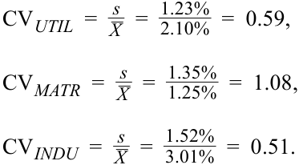